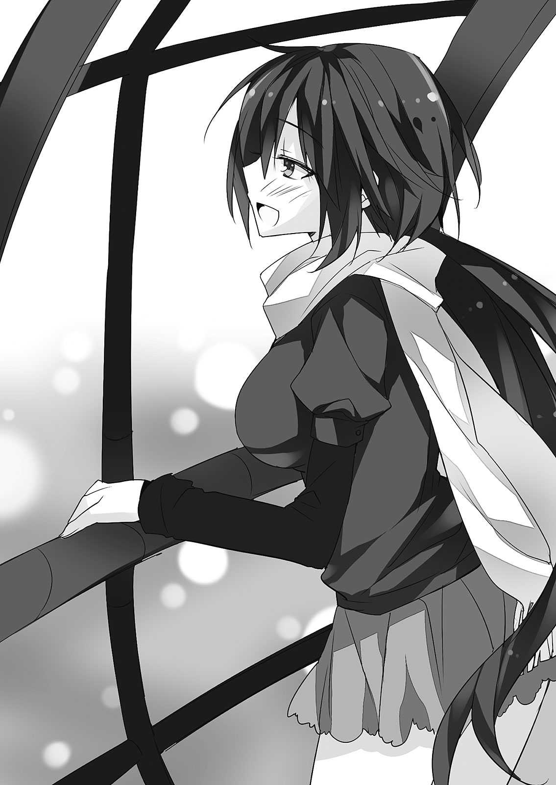

| おまえをオタクにしてやるから、俺をリア充にしてくれ！9 | |
| IX ofおまえをオタクにしてやるから、俺をリア充にしてくれ！ | |
| 村上 凛 | |
| (2014) | |
おまえをオタクにしてやるから、
俺をリア充にしてくれ！９
村上 凛

富士見ファンタジア文庫
本作品の全部または一部を無断で複製、転載、配信、送信したり、ホームページ上に転載することを禁止します。また、本作品の内容を無断で改変、改ざん等を行うことも禁止します。
本作品購入時にご承諾いただいた規約により、有償・無償にかかわらず本作品を第三者に譲渡することはできません。
本作品を示すサムネイルなどのイメージ画像は、再ダウンロード時に予告なく変更される場合があります。
本作品は縦書きでレイアウトされています。
また、ご覧になるリーディングシステムにより、表示の差が認められることがあります。
口絵・本文イラスト あなぽん
１
日曜日の昼下がり。せっかくの休みだというのに俺はどこに出掛けるでもなく、自室のベッドの上に寝転がってひたすら天井を見つめていた。
『そんな柏田君のことが......大好きです』
頭から離れないのは、少し前に思いを告げて振られてしまった相手、長谷川翠のことではなく......桜井小豆さんのことだった。
今まで何度か、もしかして......と思ったことはあった。彼女が俺のことを好き......なんじゃないのかと。だけどその度に、俺は自分で自分の考えを否定した。
あんなに可愛い子が俺なんかのことを好きなわけないと。俺は自意識過剰ですぐに物事を自分の都合のいい方向に考えるくせがあるので、そのせいなのだと。
だけど......勘違いや思い上がりなどではなかったんだ。彼女は本当に......俺のことを好いてくれていた。あんなに可愛くて優しいできた子が、俺みたいなしょうもない奴のことを......。未だに信じられない。
今でも、彼女の告白の言葉が......頬にキスをした唇の感覚が......しっかりと残っている。告白されたときのことを思い出すと、何とも言えないポーッとした、幸せな気分になってくる。
女の子に告白されたことなんて、勿論生まれて初めてだ。告白された直後は、驚きのあまり放心状態になってしまったが、後から彼女の言葉を思い返すと、涙が出そうになるほど感動した。昨日彼女に告白された後は、家に帰ってベッドに潜り込み、嬉しさに悶えたものだった。
こんな俺なんかを、桜井さんは......認めて、受け入れ、好きになってくれた。こんなに嬉しいことって、あるだろうか。
「......けど......」
嬉しい反面......俺は今、とても戸惑っていた、そんな桜井さんの気持ちに、なんて答えたらいいのか......。告白されたからには、返事をしなければいけない。
俺は彼女のことが人間として、友達として、大好きだ。オタクで趣味も合うし、付き合ったらさぞかし楽しいだろう。桜井さんと付き合ったら......そう考えただけで、すごくわくわくしてくる。
だけど......俺は、この間長谷川に振られたばかりで......まだ、長谷川のことを完全に吹っ切れているわけじゃない。未だに振られたことはショックだし、長谷川のことをよく考えてしまうし、教室でも長谷川の姿を目で追ってしまう。未だに好き......なんだと思う。そんな俺が桜井さんと付き合うだなんて、許されるのだろうか？ 自分の気持ちに嘘をつくことになるし、桜井さんに対しても失礼だ。
「はあ......どうしよ......」
彼女に対する言葉が浮かばないまま、今日が終わっていく。
ここ最近、同時にたくさんのことが起こりすぎて......俺の頭の中はもうごちゃごちゃだった。長谷川に振られて、恋ヶ崎に慰められて、抱き締められて......かと思ったら避けられて、挙げ句の果てに協定関係を解消しようとか言われて、そんでもって、桜井さんに告白、されて......。
その後の出来事の印象が強すぎてショックが少し薄れていたが、恋ヶ崎に協定関係を解消しようと言われたときは、とてもショックだった。
あいつとはもう、今まで通り話すことができなくなってしまうのだろうか？ 俺はそんなの絶対嫌だけど、あいつの意思は固そうだったし......。
ああもう、俺なんかの少ない脳みそでは、とてもじゃないが全ての出来事を処理しきれない。
俺は今後、一体どうしたらいいのだろう。いくら考えても、結論は出なかった。
翌日。
考えすぎて寝不足気味な俺は、休み時間のほとんどを睡眠に当てていた。
「柏田～呼ばれてるよー」
「......えっ!?」
クラスメイトの女子に名前を呼ばれて驚いて机から顔を上げると、教室の扉近くに......桜井さんの姿があった。
「......っ!?」
驚いた俺は慌てて立ち上がり、彼女の元へ向かう。
桜井さんは俺の顔を見ると、少し気まずそうに笑顔を作った。
人目につかない階段の踊り場へと移動してから、桜井さんが話し始めた。
「昨日は......急にすみません」
「えっ!? い、いや......」
二人きりになると余計に緊張してしまい、声が上擦る。告白されたこと、それに......頬にキスをされたことも思い出し、顔が熱くなってくる。桜井さんの方も、頬を赤くして、俺の顔を見ようとしない。
「お、俺こそ......ごめん、驚いて何も言えなくて......せっかく、こ、告白......してくれたのに......」
本来だったら、あの場で何か答えを言うべきだったのかもしれない。
「い、いえ！ いいんです......！ へ、返事......とかは......そんなに、すぐじゃなくていいですから......！」
「さ、桜井さん......」
「柏田君の......負担になりたくないんです。だから......わたしのことであまり悩んだりしないで下さいね。心に余裕があるときに、軽い気持ちで考えてくれれば、それでいいですから......。話はそれだけです！ お時間取らせちゃってごめんなさい！ それじゃあ」
桜井さんはそう言うと、ぺこりと俺に頭を下げて、早足でその場から立ち去った。
こんな状況で尚俺を気遣ってくれるなんて......なんていい子なんだろう。
......正直、返事はすぐでなくていい、と言われてほっとしている俺がいた。今すぐには答えが出せそうになかったからだ。尚更、桜井さんのこと、真剣に考えないとな。適当な気持ちで返事をするわけにはいかない。
教室へ戻るべく廊下を歩いていたところ。
「あ、柏田ー」
「ん......？ ......えぇっ!?」
後ろから声をかけられて、振り向いて驚いた。
「恋ヶ崎......!?」
俺に声をかけたのは、恋ヶ崎だった。ここ最近ずっと避けられていたので、こんな風に声をかけられるのなんていつぶりだろう。てっきりこれから先も、避けられ続けるのだろうと思って暗い気分になっていたので、普通に声をかけられてめちゃくちゃ驚いた。
「二階堂さんのオリジナル合同誌のネタ、今色々考えてるから、できあがったらまた見てくんない？ せっかくあたしなんかに声かけてくれたんだから、ちゃんとしたもの書きたくて」
まるで何事もなかったかのように淡々と話す恋ヶ崎に、俺は戸惑いを隠せない。
「えっ!? あ......ああ！ 勿論！」
そういえばパーティーのとき恋ヶ崎は二階堂さんに、オリジナル合同同人誌の小説を書いて欲しいと依頼を受けていた。ムラサキさんに、柏田さんが見てあげて下さいね、とも言われていたんだった。色々ありすぎてすっかり忘れていた。
「......何唖然としてんの？」
「え!? あ......いや、だって......誕生日パーティーのときお前、協定関係解消しようって言ってただろ......。だから、普通に話し掛けられてびびったっていうか......」
恋ヶ崎にパーティーで協定関係を解消しようと言われて、もう今後は今までみたいに親しく話すことなどできなくなるのだろうと思って、酷く落ち込んでいたのだが......こんな風に普通に話し掛けてくるなんて。一体、どういうことなんだ？
「え？ だって、この話は協定関係とは関係ないじゃん」
「え......」
恋ヶ崎の言葉に、一瞬だけ思考が停止する。この話と協定関係とは関係ない、か......。確かに、恋ヶ崎の言う通りだ。俺はなんて悲観的になっていたのだろう。そうだ......協定関係を解消したからって、別に恋ヶ崎と一切話ができなくなるわけじゃないんだ......！
「あ、ああ......そう......だよな！」
恋ヶ崎のいつも通りの態度に嬉しくなった俺は、明るく答えた。
「でもあたし、オリジナルの小説なんて書いたことないから、何書けばいいか全然分かんないのよねー......あの後二階堂さんからメールで同人誌の原稿の規定とか詳細送られてきたんだけどさ。とりあえず恋愛もので、『冬』をテーマにした話、っていう指定なんだけど......」
恋ヶ崎は腕を組んで悩む仕草をする。
「へえ......。じゃあまずは、こういうキャラが書きたいとか、こういうシーンが書きたいとか、そういう部分的なものでも思いついたら全部書き出してみたらどうだ？」
「え？ あ、うん......そうね。あんたにしてはまともなこと言うじゃん。そういうのだったら、書けそうかも。また進んだら見せるわ！ ......じゃ」
恋ヶ崎は納得した様子で俺にそう言うと、先に教室へと戻っていった。
良かった......。これからもこんな風に、恋ヶ崎と普通に会話出来るのか......。もう話すことができなくなるだなんて、俺の早とちりだったんだな。本当に良かった......。
それにしても......少し前まで避けられ続けていたのは、一体何だったんだろう？ なんとなく聞きづらくて、何も聞けなかった。
それに、今の恋ヶ崎......気のせいだろうか......？ なんだか、今までのあいつとはほんの少しだけ、何かが違う気がする......。具体的にどの辺がと言われたらうまく言えないのだが、表情とか、話し方とか......なんだか妙にサッパリしてるというか、明るいというか......。
いや、俺の気のせい......だよな？ とにかく、今まで通り話し掛けてくれただけでもすごく嬉しかったんだから、それでよしとしよう。
三日後。
俺は相変わらず桜井さんになんて返事をすべきか毎日悩みに悩み、未だに何の返事もできずにいた。
「あ、柏田、ちょっときて」
教室に入るなり恋ヶ崎に声をかけられ、二人で教室を出て階段の踊り場まで移動する。
「これ、あんたに言われた通り思いついたアイディア書いてみた」
ノートを渡される。
「あ、ああ......」
ノートの表紙には『小説用』との文字があり、ノートを捲ると、最初のページに『オリジナル小説 アイディア』という見出しが書かれており、その下に箇条書きでいくつかストーリーの案らしきものが書かれていた。『可愛い雪の妖精と高校生男子が恋に落ちる。』とか、『クリスマスの日に彼氏に振られた女子高生の元に、遠い異国の王子様（超イケメン）がやってくる。』とか......一応『恋愛もの』『冬』というテーマに沿った、恋ヶ崎らしい少女漫画っぽいストーリーの案ばかりだ。
「へー。ファンタジーっぽいのが多いな。まあ、どの話も割とよさそうだけど......お前が一番書きやすそうなのはどれなんだ？」
「うーん......この王子が来るやつかな！」
「へえ......まあ自分が一番書きやすいのが一番だし、とりあえずこれで書いてみたら？ あ、書き始める前に一応、大まかなあらすじとか起承転結とか書いた方が、書きやすいかもな」
昔漫画家に憧れていたとき、漫画を実際に書く前にそういうものを書いた方がいいと漫画の描き方の本に書かれていたことを思い出して、恋ヶ崎に提案した。漫画と小説では違うだろうが、話を創るという点では同じだからな。
「ふーん......確かに、そういうの書いた方が書きやすいかも......。じゃ、あらすじ書いたらまた見せるわ」
「ああ、その方がいいな」
「......ってか前も思ったけど、あんたって、こういうアドバイスとか何気にうまいよね」
「え!? そ、そうか？」
不意打ちで褒められて戸惑う。こいつが俺を褒めることなど滅多にないからな......。
「自分でも小説とか書いてみたりしないわけ？」
「え!? あ、ああ......まあ昔少しは書いたことあるけど......最後まで完成させられなくてさ」
中学のとき、ノートに手書きで少し書いていただけなのだが、途中で飽きてしまった。だから俺としては、なんだかんだ言いつつ最後まで小説を書き上げた恋ヶ崎の方がよっぽどすごいと内心思っている。照れくさいので本人には言えないが。
「俺は書くより口だけ出す方が向いてるんだよ」
「へー......じゃ、そういう仕事とか向いてそうじゃん？」
「......へ？」
突然の恋ヶ崎の言葉に俺はキョトンとしてしまう。
「小説のアドバイスする仕事とかさ」
小説のアドバイスする仕事......。つまりそれって、編集者だろうか。考えたこともなかったな......。
「あ、あとさ、もう一個聞きたいことあったんだった」
戸惑う俺を無視して、恋ヶ崎は話題を変える。
「あんた......小豆ちゃんに告られたんでしょ？」
「............え？」
まさかその話を振られるとは思っていなかったので、驚いて何も言えなくなる。なんで、こいつが知って......？
「小豆ちゃんに聞いた。まだ返事してないんでしょ？ どうすんの？」
恋ヶ崎は真顔で俺を問い詰める。無表情なので一体何を考えているのか全く読めない。
「ど、どうする、って......」
恋ヶ崎は俺から目を逸らさずに真剣に俺を見る。こいつは桜井さんと仲がいいから、桜井さんが前から俺のことが好きだったことを知っていたのかもしれない。だからこそ、桜井さんのことが心配なのだろう。
「......えっと......正直、まだ長谷川に振られたばっかりだから......他の子と付き合うとかそういうことは考えられないっていうか......」
真剣な様子の恋ヶ崎を前に気持ちを誤魔化すことなどできず、今の正直な自分の気持ちを答えた。
「何、それ......」
恋ヶ崎が俯いて小声で呟く。
「長谷川さんのことと小豆ちゃんのことは別じゃん。ちゃんと小豆ちゃんのことを真剣に考えて、答えを出してあげてよ」
恋ヶ崎は顔を上げて俺を厳しい目つきで見ると、そんなことを言いだした。こんなきつい言い方をされるとは思っていなかったので驚く。
「こ、恋ヶ崎......」
確かに......恋ヶ崎の言う通りかもしれない。だけど......それでも俺は、未だに自分で自分の気持ちが分からないのだ。桜井さんと付き合いたいのか、長谷川のことがまだ好きなのか......。自分の気持ちすら分からないままに桜井さんと付き合ってしまっては、桜井さんにも悪いし、自分的にも嫌だ。
「とにかく......長い間待たせたら、その間小豆ちゃんはずっと辛いんだから......小豆ちゃんの気持ちをちゃんと考えてあげて」
「あ、ああ......そうだな......」
確かに、いくら返事はすぐでなくていいと言われたからと言って、桜井さんの優しさに甘えすぎかもな、俺......。もう告白されてから四日も経ったんだ。その間桜井さんはずっと気が気でない状態に違いない。俺だって同じ立場だったら辛いに決まってる。
その日の放課後。
いつも通り後ろの黒板に明日の時間割を書いている長谷川の後ろ姿を、俺は黙って見ていた。もう......見ているだけで、手伝うことなどできない。
ぼんやりと見つめながら、考えた。俺の今の気持ち。
桜井さんからの告白への答え。
やがて......俺の気持ちの中で、一つの答えが出る。
この答えで合っているのかなんて、自分でも分からなかった。
家に帰ってから俺は、意を決して、桜井さんにメールを送った。
『話したいことがあるんだ。今度の土日、どっちか空いてないかな？』
＊
日曜日。
「桜井さん、お待たせ！」
「あ、柏田君！」
俺と桜井さんは、午後一時に押上駅で待ち合わせをしていた。
桜井さんから日曜なら空いていると返信が来たので、その日に遊びに行く約束を取り付けた。どこへ行くかは迷ったのだが、恋ヶ崎には協定関係を解消されているので相談することなどできず、ネットでデートで女の子が喜ぶ場所を調べたところ、スカイツリーが無難との情報を手に入れたので、思い切って提案してみた。
俺は勿論、スカイツリーなどというリア充スポットに来るのは初めてだ。ネットで予習はしたが、桜井さんを楽しませられる自信などない。
「柏田君、今日は誘ってくれてありがとうございます。わたし、スカイツリー初めてです！」
桜井さんは笑顔で俺に礼を言ってくれた。
「あ、実は俺も初めてなんだよね......」
「そうなんですか！ じゃあ今日は、二人で思いっきり楽しみましょうね！」
「あ、う、うん......」
桜井さんの言葉にさりげなく救われた。俺が楽しませないと、なんて思っていたので、二人で楽しもう、と言ってもらえて内心ほっとした。桜井さんってこういうとこ、本当に細かい気遣いのできる子だよなあ......。
「あ、柏田君......それってもしかして、わたしが誕生日に渡した......」
桜井さんが、俺のしているマフラーを見て、少し驚いた様子で声をかけた。
そう......俺は今日、誕生日に彼女にプレゼントしてもらったマフラーを巻いていた。非常に申し訳ないことに、このマフラーを使ったのは今日が初めてだった。告白されて以来......このマフラーを見ると桜井さんのことを思い出して、告白の返事どうしよう......と悩んでしまうので、なんとなくつけることができずにいた。だが今日、せっかく二人で遊びに行くというのにもらったマフラーをしていかないのはさすがに失礼だなと思い、巻いてきたのだ。
「ああ、うん......すげーあったかいよ。最近一気に寒くなってきたから、これから重宝しそう」
「ほんとですか？ 良かった！ 早速つけてくれて嬉しいです！」
彼女は大げさなくらいに喜んでみせた。
「わー、すごーい！ 車がミニカーみたいですよ～っ！」
俺たちは、東京スカイツリーの三十一階の窓から外の景色を見渡していた。展望台へ上がるにはお金もかかるし列に並ばなければいけないとのことだったので、無料で行ける高さまでで妥協することにしたのだ。
「ここからの景色でも十分綺麗ですね！」
楽しそうに景色を見ている桜井さんにつられて、俺も笑顔になる。
「学校ってどっちの方でしょうかね～」
「うーん......どっちだろ......あ、あれそうかな？」
「えぇっ!? あんなに近くないんじゃないですかー？」
「えっ、そう!? 俺方角とか全然分かんないんだよね......」
「ふふふっ......あ、スマホのＧＰＳで確認してみましょうか！」
こうして二人明るく話していると、まるで何事もなかったみたいに思えてくる。
だけど、それじゃあダメなんだ。今日俺には、桜井さんに言わなくちゃいけないことがある。そのために、わざわざ来てもらったのだから......。

「次、どうしましょうか？」
「えっと......店を見て回るか、あと水族館とか、プラネタリウムもあるみたいだけど......」
「え、プラネタリウムあるんですか!? 行ってみたい！」
「......！ プ、プラネタリウム......」
「？ プラネタリウム、いやでしたか......？」
「え!? いや、全然!? 行こう行こう！」
一瞬戸惑ってしまったが、慌てて何でもないフリを装う。プラネタリウムって......完全にカップルが行く場所......なんじゃないのか？ なんて、一瞬思って動揺してしまったのだ。暗闇の中二人並んで星を眺めるだなんて......ドキドキしないわけがない。
だけど桜井さんはそんなこと微塵も思っていないようで、不思議そうに俺の顔を見ている。変に意識しすぎ......なんだよな、俺。もっと自然体でいないと......。
ちょうどすぐに次の上映が始まるとのことだったので、チケットを購入した。
「えっ!? そんな、いいですよ！」
「いや、今日は......桜井さんに誕生日を祝ってもらったお礼をするつもりで誘ったんだ。だから......俺に出させて」
チケットを購入する際、俺が二人分の金額を払おうとすると、桜井さんが戸惑いながら断ってきた。その後も何度か彼女は払うと言ったが、俺がしつこく払わせてくれと粘ったところ、なんとか折れてくれた。
「あ、ありがとうございます......じゃあ、お言葉に甘えて......」
「いやこちらこそ......誕生日の時は、本当にありがとう」
俺の言葉に、彼女は笑顔になった。
場内に入場し、空いている席に二人で並んで座る。
「............」
着席した途端、俺たちは互いに黙ってしまう。
女の子と隣同士で接近して座るだなんて、ドキドキしない方がおかしいだろ。桜井さんももしかして......緊張していたりするのだろうか？
やがて、場内が暗くなり、胸の高鳴りは一層激しくなっていく。
なんだろう、以前にもこんなこと、あったような......。あ、そうだ......桜井さんとアニメの映画を見に行ったときも、暗闇に至近距離でやけにドキドキしたっけ。あのときは、遊んでる最中だってのに、恋ヶ崎の合コンの件が気になってそっちに行っちゃったんだよなあ、俺。
......待てよ。もしかして、あのとき既に、桜井さんは俺のことを......？ うわあ、だとしたら俺、なんて酷いことを......！ あのときは確か、桜井さんから誘ってくれたんだ。きっと勇気を出して誘ってくれたに違いない。それなのに、途中で離脱してしまうなんて......なんて最低野郎なんだよ！ きっとあのとき俺は......彼女のことを深く傷つけてしまったことだろう。あの後、桜井さんが俺のことを避けているように感じたのも......そう考えたら避けられて当然だ。俺はなんて大馬鹿者なんだ。
......これ以上、彼女を傷つけるわけにはいかない。今日があまりに楽しいから、このままでいいんじゃないか、なんて気持ちも湧いてきてしまっていたけど......いいわけなんかない。やっぱり......絶対、ちゃんとしないとダメだ。
やがて、プラネタリウムの上映が始まる。
「あ、始まりますねっ」
「！ う、うん......」
すぐ近くで小声で話す彼女の声に、ドキドキしてしまう。俺は......桜井さんのことを、人としてだけじゃなく......女の子としても魅力的だと思っていることを、認めざるを得ない。
──出会った当初は正直、なんて感じの悪い子だろう、なんて思ってた。
だけどそれには理由があることを知って、そのうち桜井さんの態度が変わって、本当はすごくいい子なんだと分かって......。
桜井さんとは、本当にいろいろあった。いつだって一生懸命で、優しくて、周りへの気遣いを忘れない桜井さん。好きなことには一直線で、少し暴走気味なところもあって、普段は恥ずかしがり屋なのにコスプレ姿のときは大胆で、コスプレ姿がすごく魅力的で......。彼女との思い出を一つずつ思い返していくほど、なんだか切ない気持ちになっていく。プラネタリウムのロマンチックな音楽も手伝って、俺はなんだか涙が出そうだった。
「わたしプラネタリウムなんてすっごく久しぶりだったんですけど、感動しちゃいました！ 柏田君はどうでしたか？」
「......えっ!? う、うん......俺も、良かったよ......」
正直、しっかりと見ていたはずなのに、内心それどころじゃなかったため、ほとんど内容を覚えていない。
「......？ 柏田君、どうかしましたか......？」
「あ、い、いや......」
ぼーっとしている俺の顔を、桜井さんが心配そうに覗き込む。
「あのさ桜井さん、良かったら......ちょっと話さない？」
「え!? ......あ、は......はい......」
俺の言葉に桜井さんは、顔を強ばらせてびくっとする。俺が今日の本題に入ろうとしていることを察したのだろう。桜井さんにそんな表情をさせてしまったことに罪悪感を覚えたが、どうしても今日......言わなくちゃならないんだ。
俺たちはゆっくり話せる場所を探して、外へ出て、『ドームガーデン』という庭園へとやってきた。幸い人は少なく、落ち着いて話すことができそうだ。いくつかベンチが設置されていたので、空いているベンチに腰掛ける。
「うわ、すごいねこの場所、スカイツリーがこんなに近くに見える......」
「そ、そう......ですね......」
桜井さんの表情は曇ったままだ。
「..................」
俺たちはそれから、互いに黙ってしまい、気まずい空気になる。
言いたくない......ものすごく言いたくないけど......言わなくちゃいけない。
「あのさ、桜井さん......」
「......！ は、はい......」
「この間は......こ、告白してくれて......ありがとう。桜井さんの気持ち、すごく嬉しかった......」
声が震えそうだ。桜井さんの顔を見ると、今にも泣きそうな顔で俺を見ていた。そんな顔をされると、余計に......辛い。
「それで俺、真剣に......か、考えたんだけど......その......」
「柏田君っ......！」
俺の言葉を遮って、桜井さんが声を上げた。
「......え？」
「そ、それ以上は......それ以上は、言わなくていいです......！」
桜井さんは切なそうな顔で俺を見る。
「桜井さ......」
「わたし、今のままで......十分幸せです。それなのに告白なんかしちゃって、柏田君にも私のことを好きになってもらいたいなんて欲深いこと思っちゃって......。......告白したことで、柏田君に避けられたらどうしようって、もう話せなくなっちゃったらどうしようって、告白してからずっとずっと不安でした......」
桜井さんの言葉が、胸に突き刺さる。
彼女は俺なんかのことで、そんなに思い悩んで......。
「だから今日、二人でまた楽しく出掛けられて......夢みたいなんです。もうこれ以上は望みません」
桜井さんの目からは、涙が零れていた。それでも彼女は、俺に笑顔を向ける。
「だから......だから......こ、これからも......良かったら、今まで通り......お、お友達として......仲良くしてもらえますか？」
「さ......桜井さん......」
俺は今日、桜井さんに......今の自分の正直な気持ちを伝えるつもりだった。
桜井さんに惹かれてる部分も大いにある。だけど......まだ長谷川に対する気持ちを吹っ切れていない。だから今はまだ、桜井さんとは付き合えない......そう言うつもりだった。
もしかしたら彼女は、俺の言おうとしていることをなんとなく察したのかもしれない。
彼女は今、こんな俺なんかのことで泣いている。こんな俺なんかと友達でいられるだけで幸せだ、なんて言っている。
未だに信じられない。
こんなに可愛い子が、俺の言葉で、悩んだり、泣いたりしているんだ。
俺はさっき、彼女のことを、これ以上傷つけたくないと思った。
今泣いてる彼女を見て、その気持ちはもっともっと大きくなっている。
それならば......。
俺は気付いた。
あるじゃないか、たった一つだけ、彼女を傷つけない方法が。悲しませない方法が。
その方法をとれば、きっと彼女は笑顔になってくれる。それに、俺だって幸せになれるはずだ。
「......!? か、柏田君......？」
気付いたら、俺は泣いている桜井さんの手を握っていた。普段の俺だったら考えられないほど、大胆な行動だ。
愛おしいと、思った。
抱き締めたいと思った。だけどそんな勇気はなかったから、手を握ったんだと思う。
俺はこの子を幸せにしたい。だったら......もう答えは一つだ。
俺は小さく息を吸い込んでから、桜井さんの目を見た。
「桜井さん......。こんな俺で良ければ......付き合って下さい」
彼女は俺の言葉を聞いて、信じられないという様子で、目を大きく見開いたまま暫く俺の目を見て固まっていた。
やがて彼女は、俺の言葉をやっと理解した様子で......
「......................................................は、......はい............」
再び、その瞳から大きな涙がこぼれ落ちた。
２
「直輝ー？ おかえ......」
家に帰ってすぐ、俺は自室へと駆け込む。
「って、ちょっとシカトーっ!? 直輝のくせに何様なわけぇ!?」
妹の声も無視して、俺はベッドの中へ潜り込み、ゴロゴロとのたうち回った。
......彼女ができた。
生まれて初めて、彼女ができてしまった。
正直なところ......これで良かったのか？ と自問自答する声もなくはない。長谷川のことは完全に吹っ切れたのか？ と。当初の予定では、こうなるつもりではなかったのだ。だけど......それよりも今俺の胸は、桜井さんのことで......初めての彼女のことでいっぱいだった。
彼女の泣き顔が、笑顔が、瞼の裏に焼き付いて離れない。俺が彼女に付き合って欲しいと言った後、何度も彼女は、本当にいいんですか？ と泣きながら俺に尋ね、俺が頷くと涙を流したまま笑顔になった。
『本当の本当に......夢みたいです......』
あんな気持ちになったのは初めてだった。中学の時の初恋とも、長谷川のことを好きになったときともまた違う......『憧れ』のような恋心ではなく、『愛しい』という気持ち。桜井さんを見ていたら、そんな気持ちでいっぱいになった。俺が笑顔にしたい、守ってあげたい、そう思った。
あれから彼女が落ち着くまでベンチの上に座ったまま、彼女の手を握り続けた。やがて彼女が泣き止んだので、あまり遅くなってもいけないので、桜井さんを家まで送り届けた。その間俺たちは、なんだか気恥ずかしくて、互いにほとんど言葉を話さなかった。
「桜井さん......」
ベッドの上に寝転び、彼女の名前を呼ぶ。行き場のない気持ちを誤魔化すために、彼女にもらったマフラーを思い切り抱き締めた。本当は......抱き締めたかった。マフラーではなく、泣いている彼女を。
「......っ!?」
突如携帯のバイブが鳴り、びっくりして起き上がる。ディスプレイを見るとそこには、『桜井小豆』の文字......。
「もっ......もしもし！」
思わず、声が強ばってしまう。
「あ！ か、柏田君ですか!?」
「うん！ さ、桜井さん!?」
「はいっ！ あ、きょ、今日......送ってくれてありがとうございました......。他にも、奢ってもらったり、その、色々......。柏田君は無事、おうちに着きましたか!?」
「あ、うん！ いや、こちらこそ......今日はありがとう！」
自分でもおかしいくらいに緊張してしまう。
「......あの......実はわたし、さっきまで眠ってて......」
「え!? そ、そうなの!?」
「はい......家について部屋に戻ったら、すごい眠気が襲ってきて......寝不足だったからだと思うんですけど」
寝不足......？ も、もしかして......昨日、眠れなかったのか？ ......俺からの告白の返事が怖くて......？ 今日彼女はやけに明るく振る舞っていたが......それはもしかして、不安の裏返しで、無理にああいう態度をとっていたのか？
「それで、今起きたら......もしかしたら、全部、夢だったんじゃないかって思って......不安になって思わず電話しちゃって......」
「えっ!?」
全部、というのは......きっと、今日のスカイツリーでの出来事のことを言っているのだろう。
「さ、桜井さん......」
愛しい、という感情が、再びこみ上げてくる。今日の出来事が、それほど嬉しかったってこと......なんだよな？
「夢じゃないよ」
俺ははっきりと彼女に告げた。
「俺も......すごく嬉しいよ。桜井さんが......俺の、かっ......彼女に、なってくれて......」
「かっ......彼女......！ わわ、わたしも、です！ わたしも......いいえ、わたしの方が、すっごくすっごく嬉しいです！ どうしよう......また泣きそう......」
「............」
つい数時間前まで、ただの友達に過ぎなかったのに......今俺は、彼女が愛しくて仕方がなかった。
いや......俺はきっともっと前から、桜井さんに惹かれていた。だけど......自分は長谷川が好きなのだからと、そんな自分の気持ちに見て見ぬ振りをしていたのだ。
「......か、柏田君......？」
「あ、いや......えっと、桜井さん......今日から、よろしくね」
「......は、はい！ こちらこそ、宜しくお願いします！」
それから少し他愛もない会話をしてから、電話を切った。
「............」
ベッドの上で、目を瞑る。そして、思い出す。
『柏田君って......変わっているのね』
綺麗なストレートの黒髪。落ち着いた綺麗な声。
『ありがとう......私も、柏田君と友達になりたいわ』
あのときの......嬉しかった自分の気持ち。
『オタクであろうとなかろうと、柏田君が私にとって恩人で、強く信頼のおける......かけがえのない大切な人であることは......何も変わらないわ』
入学してから今までずっと恋い焦がれていた、俺の想い人......長谷川翠。
彼女のキョトンとした顔、薄く笑った顔、泣き顔。どれもが、恋しくて仕方がなかった。いつか付き合いたいと、長谷川の彼氏になりたいと思い続けた。
だけど......それも今日で終わりだ。長谷川のことを、忘れなければいけない。明日からは本当に......ただのクラスメイトだ。
俺は長谷川のことを好きになれて、幸せだった。高校生活に希望が持てた。辛いこともあったが......それ以上に、たくさん楽しい思いをした。
携帯を開いて、今まで保護していた長谷川からのメールを一つずつ開けて......ゆっくりと読み返して、消していく。一つ一つのメールを見る度に、そのときの楽しかった思い出がよみがえってくる。切なくて、なんだか泣きそうになった。
楽しい思い出をありがとう、長谷川......。
今日から俺は......桜井さんと、楽しい思い出を作っていくんだ！
翌日。
「あら直輝、今日はまた気合い入ってるわね～」
俺はいつもより早く起きて、洗面台の前でワックスと格闘していた。昨日久しぶりに以前買った雑誌を読み返してみたところ、ワックスは柔らかいものと固いものを二段使いするといい、と書いてあったので、早速実践してみた。
昨晩、長谷川との思い出を一通り封印して心の整理をした後、桜井さんのことを考えていたら、つい興奮してきて色んな意味で眠れなくなり元気になってしまい、ようやく眠りについたのが明け方だったのだが、それでも早くに目覚めてしまった。
「......ふう。よし！」
わざわざ雑誌に載っていた通りに、髪を濡らしてドライヤーで乾かしてから三十分もワックスと格闘した甲斐あって、いつもより数倍髪型がバッチリ決まった。やればできるじゃん、俺！
「うわっ、朝からうざいな～」
「おおあかり。そうだ、この間勝手にアイス食っちまったから今日買ってきてやるよ。板チョコのやつでいいよな？」
「はあっ!? 何!? あんた誰!? ほんとに直輝!? ってか、アイスとかいつの話!?」
「直輝......今日は随分ご機嫌ねえ......」
「おっと、これも忘れないようにしないと......よし、いってきまあす！」
彼女にもらったマフラーをさっと首に巻き、家族に挨拶をして、爽やかな気分でいつもより十分早く家を出た。ｉＰｏｄで昨日編集したマイリスト『ラブソング集』（自分的に名曲だと思うラブソングを集めた）を聞きながら、駅まで優雅に自転車を走らせる。
ああ、我ながらいい曲揃いだなあ......テンション上がってきたぁ！ まあほとんど、アニソンとか声優の歌とかボカロの曲とかなんだけど。
自転車を駐輪場に停めてから携帯を見る。受信メールが一通。
『送信者：桜井小豆
本文：おはよう！ なんか嬉しくて昨日あんまり眠れなかったです』
「おおっ......！」
思わず声を上げてしまった。俺からメールしようと思ったら、既にメールが来ていたなんて......！
『おはよう！ 俺も昨日嬉しくてほとんど眠れなかったよ！』
高速でメールを返信する。
......眠れなかった本意は、口が裂けても言えないな......本人を目の前にしたら罪悪感がつのりそうだ......。
「うお、柏田!? 今日髪型すげー気合い入ってんな!?」
登校してきて席に着くと、桐谷に髪型を褒められる。
「え、柏田？ すげー、別人みたいなんだけどー！ うけるー！」
「えっ!?」
教室の後ろ側で固まって話していたギャルグループの中の一人が、俺を見てそんなことを言い出した。今まで一度も話したことがないような女子だったので、驚いて何も言えなくなってしまう。バカにされてるっぽいが、それでも、あんな派手系の女子に声をかけられる日が来るだなんて......。
そのギャルグループの中には恋ヶ崎の姿もあり、奴も驚いた表情で俺を見ていた。何か声をかけてくるかとも思ったが、何も言わない。その代わりに、ふっと口元だけで笑った。なんだよ、その反応は......。
だるい授業だっていくらでも受けてやる、という気分だったが、昨晩ほとんど寝ていない俺は授業中に眠気が襲ってきて、ほとんど寝て一日を過ごしてしまった。
......今日こそはさすがに、長谷川の後ろ姿を目で追わないよう気をつけた。目で追うくらい許されるのかもしれないが......俺の気持ちの問題だ。
やがて、昼休みがやってくる。
「柏田、今日メシ購買？」
「ああ、うん」
「柏田ー！ 女子が来てるよ～」
「えっ!?」
いつぞやのようにクラスメイトの女子に名前を呼ばれ、教室の後ろの扉へと目を向ける。そこには......前回と同じように、教室の外に桜井さんの姿があった、のだが......。
「さっ......桜井さん......!?」
俺はいつもとは違う彼女の姿を見て驚愕した。桜井さんはいつも二つに結んでいる髪を下ろし、前髪をヘアピンで留めていた。そのおかげで、いつも前髪で隠れ気味の可愛い素顔がはっきりと見えている。
「おい、柏田のくせに女子に呼ばれるなんて生意気な......つーかあの子誰だよ!? めちゃ可愛くね!? うちの学年にあんな子いたっけ!?」
桐谷が桜井さんの姿を見て驚いて俺の肩を揺さぶってくる。俺は桜井さんが手元に鞄と弁当を持っていることに気付き、彼女が俺と一緒に弁当を食べようとしているのだということを悟った。そ、そうか......普通彼氏彼女っつったら一緒に弁当食べるよな......！ やばい、すっかり頭から抜けてた！ 慌てて、彼女の元へ向かおうと席から立ち上がる。
「......か、柏田......まさか、あの子って......お前の彼女か!?」
桐谷が更に驚いた様子で俺を問い詰める。
「......って、まさかそんなわけないよな～......お前に限っていきなり、あんな可愛い彼女ができるなんて......」
「ふっ......悪いな桐谷。今日一緒にメシ食えねえわ」
「......え？」
「彼女と一緒に食べるからさ」
「......はあああああ!? 柏田に彼女だとぉぉぉぉぉ!?」
桐谷が大声を出してしまったせいで、周りにいた生徒たちが一斉に俺を見る。
「彼女!? マジで、柏田に彼女!?」
「うっそ!? つーかまさか、あの廊下にいる子!? 信じらんねー！ 超可愛いじゃん！」
どいつもこいつも声を抑えることもせず、俺に聞こえているのにもお構いなしに驚きの声を上げて俺と桜井さんの姿を見比べている。......そんなに、俺に彼女ができるのが意外だってのかよ......！ くそ、こんな大声で騒がれて、長谷川に聞かれてしまったら......！ つい条件反射で、長谷川の席へ目を向けてしまう。長谷川は、そんな騒ぎ声など聞こえていないようで、いつも通り一人黙々と自分の席で弁当を食べていた。
......って俺、何長谷川のこと気にしてんだよ!? 長谷川は、俺が誰と付き合おうが、そんなことどうでもいいに決まってるだろ......。この期に及んで、長谷川に彼女ができたこと隠したいなんて......本当にバカだ、俺は......。
俺は今一瞬の間に自分が考えてしまったことを全て忘れることにして、鞄を持って慌てて桜井さんの元へと移動した。
「す、すみません......急に来ちゃって......お友達とお弁当食べる予定でした？」
桜井さんは申し訳なさそうに上目遣いで俺の目を見た。
改めて近くで見ると......か、可愛いな！ いつもの髪型もいいけど、この髪型も最高だ！ いつもは素顔が前髪で隠れているけど、今日みたいにヘアピンで留めて顔が見えると、桜井さんの可愛さが俺以外の男子にもバレてしまう。桐谷や他の男子も可愛いって騒いでるし......。こんな可愛い子が俺の彼女だという優越感もあるけど、他の男子に桜井さんが狙われてしまったらどうしよう、と不安にもなってくる。
「全然大丈夫！ 俺も......さ、桜井さんと昼飯一緒に食べたかったし......」
「......！ か、柏田君......！」
桜井さんが嬉しそうに俺の顔を見た。目をキラキラと輝かせている。俺と弁当を食べるってだけでこんな反応をしてくれるだなんて、なんて可愛いんだろう......。
「っていうか柏田君、今日なんか......すごく格好いいですね！ あ、その、いつも格好いいですけど......特に今日は......！」
桜井さんが恥ずかしそうにそんなことを言ってきて、俺まで瞬時に赤面してしまう。か、格好いいって......そんな小っ恥ずかしいこと面と向かって言われたら照れるだろ！ でも、俺が髪型に気合いを入れたことに気付いてくれたんだな......。早起きして頑張った甲斐あったなあ。
「いやっ......あ、ありがとう！ つーか、桜井さんこそ今日、すごくその、髪型......か、か、可愛い......ね」
自分で言っておきながら、更に自分の顔が熱くなっていくのを感じた。
俺の言葉に、桜井さんも頬を真っ赤に染めて、恥ずかしそうに俺から目を逸らしてしまう。
「あ、あ、ありがとう......ございます......その、柏田君は......こういう髪型が好きなのかな、って思って......」
「......え？」
桜井さんの言葉に、少し驚く。こういう髪型......っていうのは、桜井さんが今している黒髪ロングヘアを下ろしている髪型のことだろうか。これって......長谷川の髪型と似てる、よな......？ 桜井さんは俺が長谷川のことを好きだったことを知っている。もしや、わざわざ長谷川の髪型に似せて......？
「あーもう、何こんなところでイチャついてんのよ！ 超目立ってるんですけど!?」
「......えっ!?」
聞き慣れたその声にハッと我に返る。
「桃ちゃん!?」
気付くと恋ヶ崎が立っていて、呆れたような笑顔で俺たちを見ていた。
慌てて周囲を見渡すと、廊下や教室内にいる生徒たちから思いっきり注目を浴びていた。やっべー！ 完全に周りの目の存在を忘れていた......。
「い、イチャ......!? イチャついてなんかないよ!?」
桜井さんは真っ赤な顔で恋ヶ崎に抗議する。
「はいはい、バカップルおつ～」
恋ヶ崎はからかうように桜井さんに言う。
バカップル......!? その単語に恥ずかしさがこみ上げてくると同時に、そんな単語を発した恋ヶ崎のことを不思議に思う。
「改めて、おめでと」
恋ヶ崎は穏やかな笑みを浮かべて、俺たちに言う。
「桃ちゃん......」
「恋ヶ崎......お前、知って......!?」
「あ、その......わたしが昨日、電話で報告しちゃいました......」
「え!? あ、そうだったんだ！」
そうか、恋ヶ崎はもう、俺たちのこと知っているのか......。
「こんな、釣り合ってない超可愛い彼女できたんだから、小豆ちゃんを幸せにできるよう頑張んなさいよね！」
恋ヶ崎が思いっきり俺の肩を叩いた。
「も、桃ちゃん！ 何言ってるの!?」
「いてっ......。あ、ああ......そうだな！」
そんな恋ヶ崎の上から目線の励ましの言葉も、今の俺にはありがたかった。俺が笑顔で言葉を返すと、恋ヶ崎は少し驚いたような表情をしてから、再び穏やかな笑顔になった。
「柏田君......今日って、お弁当持って来ました？」
恋ヶ崎と別れてから、弁当を食べるために食堂へ移動しようということになったとき、桜井さんが俺に尋ねた。
「ああ、いや、持って来てないから購買で何か買っていいかな？」
「本当ですか!? 良かったぁ！ 実は......今日、柏田君の分のお弁当も作ってきて......」
「えっ!? マジで!?」
桜井さんは笑顔で、手に持っていた弁当を俺へと差し出す。
「うわー、超嬉しいよ、ありが............」
彼女からの手作り弁当に感激して礼を言おうとしたそのとき、あることを思い出した。
桜井さんの、手作り......？ そういえば桜井さんって、恋ヶ崎に負けず劣らず料理の腕が残念だったじゃねえか......！ 誕生日パーティーのとき、彼女の手作りパウンドケーキに窒息死させられそうになったトラウマはまだ記憶に新しい。
「かっ、柏田君!? 思いっきり顔青くなってますよ!? いくらなんでも酷いですっ！」
桜井さんは真っ青になって硬直した俺を見て、頬をぷうっと膨らませて拗ねた（可愛い）。
「えっ!? あ、いや......」
「確かに誕生日パーティーのときは申し訳ないことしましたけど......今回のお弁当は大丈夫です！ お母さんに手伝ってもらったんで！」
「あ、そ、そうなんだ......」
内心めちゃくちゃほっとしている俺がいる。よ、良かった......それなら少しは安心だ......。
食堂へ移動し空いているテーブルへと座り、二人向かい合って弁当を食べ始める。
「にしても、まさかお弁当作って来てくれるなんて思ってなかったよ！」
昨日の今日だってのに、桜井さん、髪型といいすごく気合い入れてくれてるよなあ......。
「うわー、うまそう！」
弁当を開けて、失礼ながら驚いてしまった。普通に美味しそうな弁当が出てきたのだ。
「早速食べてみてください！」
「うん、頂きます！」
いやしかし、食べてみるまでは油断できないぞ......見た目は良くても肝心なのは味だ。なんて内心密かに思いながら、思い切って一口食べてみる。
「......！ う......うまい！」
「柏田君、なんで驚いてるんですか！」
ちょっとムッとした表情で俺を見る、桜井さん。
「え!? お、驚いてないよ！」
正直、俺はとても驚いていた。お母さんに手伝ってもらっただけのことはある。この間のパウンドケーキとは比べものにならないくらい普通に美味い。
「でも、良かった......実は手伝ってもらったっていうか、全部お母さんの指示通りに作ったから美味しくなきゃおかしいんですよね......」
桜井さんが苦笑いを浮かべる。なるほど、そういうことだったのか......。それでも、俺のためにお母さんの力を借りてまで頑張って作ってくれたということがとても嬉しい。
「あ、桜井さんのお弁当も自分で作ったの？」
桜井さんの弁当に目をやると、中身がほぼ俺のものと同じだった。
「あ、はい、そうです！ 微妙におかずが違うんですよ。柏田君のは唐揚げで、わたしのはウィンナー！」
「あ、本当だ！ ウィンナーも美味しそうだね！」
「......！ あ、あの......柏田君......」
桜井さんは突然顔を真っ赤にさせて、フォークに突き刺したウィンナーソーセージを持ち上げる。その手はなぜかプルプルと震えている。
「これ......そ、その、良かったら、食べ、食べ......食べさせてあげ............」
真っ赤な顔のまましどろもどろになりながら、だんだん声が小さくなっていく桜井さん。最後の方、声が小さすぎてよく聞き取ることができなかった。
「え？ なんて......？」
「～～～～っ！ や、やっぱり、なんでもないです！」
桜井さんはそう言うと、そのまま勢いよくウィンナーを自分の口へと放り込んだ。......？い、一体なんだったんだ......？
やがて、桜井さんの手作り弁当を食べ終える。
「本当に美味しかったよ！ ありがとう」
「良かったです。......実は、もう一つ......作ってきたものがあって......」
桜井さんは鞄の中から何やらゴソゴソと取り出した。
「これ......」
「マドレーヌ......？」
桜井さんが手にしているのは、透明な袋に入った美味しそうなマドレーヌだった。
「良かったら......食べてみてもらえますか？」
「あ、うん！ 勿論！」
もしかしてこれも、お母さんに手伝ってもらって作ったのだろうか？ 弁当だけでなくお菓子まで手作りしてきてくれるだなんて......なんていい彼女なんだろう。
ありがたく、マドレーヌを一口、口に運ぶ。
「............グホアァァァッッ！」
その瞬間、勢いよくむせる。......な、なんだこれは......嫌な記憶が蘇る味......そうだ、誕生日パーティーのとき食べたパウンドケーキとほとんど同じ味だぞ!? まだこっちのマドレーヌは柔らかいから噛んで口に入れることができたが、食感は全く同じだ。ほとんど味がなく、口の中の水分を全て持っていかれるこの食感......！
「ゲホッゲホッ......ゴホッ......」
マドレーヌが喉に張りついてむせてしまい、慌ててペットボトルのお茶を大量に飲み込む。はあ、はあ......死ぬかと思った......。
「柏田君、大丈夫ですか!?」
涙目で心配そうに俺の顔を覗き込む桜井さん。
「はあ、はあ......う、うん......」
「やっぱり、失敗でしたか......見た目的にうまくできたから成功したかなって思ったんですけど......ごめんなさい」
味見をしてくれぇ！
「......これはお母さんと作ったんじゃないの？」
「はい......昨日の夜、お母さんが寝てる間に作りました。お菓子作りはまだ早いからやめておきなさい、って止められてるので、内緒でコッソリ......」
だからこの出来なのか......。
「すみません......お菓子はもう、作るのやめます......」
「え？ ............いや。いいよ、また作ってきてよ」
「......えっ!?」
「別にまずいってわけじゃないしさ。作ってるうちに美味しくなってくるだろうし......いつか美味しいお菓子が食べられたらいいなあ、って、気長に待ってるよ」
「か、柏田君......っ！ ありがとうございます！ わたし、頑張ります！」
桜井さんは感激した様子で笑顔を浮かべた。......自分で言い出したことだが、とんでもない発言をしてしまったな......これから何度もこんな思いをしなくちゃいけないのか......。いやでも、俺のためにお菓子を作って来てくれる、っていうこと自体が嬉しいから、これで良かったんだ。
やがて、昼休みが終わる時間になる。
「あの......柏田君、もし良かったらなんですけど......帰りも一緒に帰っていいですか？」
「え!? うん、勿論！」
「良かったぁ！ じゃあ、また後で！」
桜井さんは笑顔で俺に手を振って、俺たちは別れた。
ああ......彼女がいるって、なんて素晴らしいんだろう......なんて、改めて思いながら。
放課後。
「桜井さん、お待たせ！」
ホームルームを終えて教室から出ると、廊下に彼女の姿があった。
桜井さんは俺の顔をじっと見て、黙ったまま何かを考えている。
「......？ 桜井さん......？」
「あ、い、いえ......その......もし良かったらなんですけど......その、『桜井さん』っていう呼び方......か、変えてくれませんか......!?」
「えっ!?」
「あっ別に、嫌っていうわけじゃないんですけど......せ、せっかく彼氏彼女になれたから......もうちょっと親しげな呼び方にしてもらえたら嬉しいな、って......」
少し恥ずかしそうに彼女は言う。た、確かに......彼氏彼女なのに名字にさん付け呼びって、ちょっとよそよそしいよな。
「も、勿論！ じゃあ、なんて呼んだらいいかな......？」
「えっと......できれば、下の名前で......」
下の名前......ということは、『小豆』......？ いや、いきなり呼び捨てってハードル高いな。小豆さん、って下の名前にさん付けってのも、なんかおかしいし......。
「じゃ、じゃあ......小豆ちゃん、でいいかな......？」
ちゃん付けならまだ恋ヶ崎も呼んでるし、呼びやすいだろうと思ったのだが......いざ声に出してみると途端に恥ずかしくなってくる。考えてみれば今まで妹以外の女子を下の名前で呼んだことなんてないし、恥ずかしくて当然だ。
「......！ は、はい......！」
しかし呼ばれた方も、俺のセリフにカアッっと頬を赤く染めて動揺している。いちいち些細なことで照れる彼女も可愛い......って何考えてんだ俺。
「も、ももも、もし良かったら......柏田君に対する呼び方も、変えていいですか......!?」
「えっ!? あ、勿論！」
「じゃあ......直輝君、って呼んでも......いいですか......？」
「うん、いいよ！」
「えへへ......良かった！ じゃあ......な、直輝君......帰りましょう！」
彼女は、恥ずかしそうに笑って言いながら、歩き出した。俺もその隣を並んで歩く。
「あのさ......提案なんだけど......桜井さ......じゃなくって、あ、小豆......ちゃんの、その話し方も、変えない？」
「へっ!?」
俺の提案に、桜井さ......じゃなかった、小豆......ちゃんは、驚いたように俺を見る。
「いや、その......敬語も可愛いと思うんだけど......せっかく彼氏彼女なんだし、タメ語で喋って欲しいな～って......」
桜井さん......じゃなかった、小豆ちゃん......ああもう、いちいち言い直すのも大変なので、心の中でだけはまだ慣れるまで、桜井さんという呼び方のままにしておこう。桜井さんはオタク男子が苦手だから、オタク男子相手には敬語で話すのだろうと思うが、彼氏である俺だけには、親しげなタメ語で話して欲しいと思った。
「そ、そう......ですよね！ 分かりました、タメ語で喋るよう頑張ってみます！ ......って、だめだあ！ 早速敬語になっちゃってる......」
「あはは、まあ無理してすぐにとは言わないから、徐々に変えていってもらえたら嬉しいよ」
「は、はい！ ちょっとずつやってみます！」
......呼び方も変えて、話し方も変えて......なんか、付き合ってる、って感じでいいよなあ～！ こういうやりとりを三次元でできる日が来るなんて......。今まで想像もできなかった。
「あ、そうだ！ かし......じゃなかった、直輝君！ 今日、一緒にゲーセンに寄ってくれませんか？」
「ゲーセン？ 勿論いいけど......」
桜井さんの提案で、ゲームセンターに寄り道することになった。俺の誕生日の日に行ったゲーセンではなく、別のゲーセンがいいと彼女が言うので、言われるがままに彼女の後をついていく。
「今日も格ゲーやるの？」
「いえ、今日は格ゲーじゃなくて......あ、あった！」
桜井さんはキョロキョロとゲーセンの中を見回すと、目的のものを見つけたらしく、嬉しそうにそれに指を差した。
「直輝君......あれ、一緒にやりませんか？」
桜井さんが指を差したのは、プリクラだった。
「え!? い、いいけど......」
プリクラかあ......桜井さんとプリクラを撮るのは二回目だ。本当にプリクラが好きなんだなあ。
「あ、今日こそは俺も出すよ！」
「えっ!? でも、プリクラ撮りたいのはわたしの我がままだし......」
「俺も撮りたいから、大丈夫！」
全額払おうとする桜井さんを押し切って、半額の二百円を投入する。前回プリクラを撮ったときは全額払ってもらってしまったので、今回こそは払わないとな。
「えーっと、じゃあポーズとかどうしよっか......俺、あれ以来プリクラなんか撮ってないから相変わらず不慣れで......」
「直輝君！」
「......えっ!?」
『カシャ！』
シャッター音が鳴った瞬間、桜井さんが......思い切り俺に抱きついた。柔らかい胸の感触に一瞬で頭に血が上る。
「......っ!?」
「えへへ......どうしてもカップルっぽいプリクラが撮りたくって......急にすみませんっ」
桜井さんはペロッと舌を出して恥ずかしそうに笑った。
そんな可愛い彼女の様子に萌えている暇もなく、次の撮影に移ってしまう。桜井さんに大胆なことをされて、俺も何か......例えばお姫様抱っことか、そんな大胆なことをしてみたくなったのだが、そんな勇気も出ないまま、あっという間に撮影タイムは終わってしまう。結局、最初の一枚以外は無難にピースをしているものになってしまった。
桜井さんがプリクラを選んだりらくがきをしたりして、やがてプリクラが出来上がる。
「わっ......これ、思ったより恥ずかしい......」
取り出し口から出てきたプリクラを見て、思わず赤面してしまう。
驚いて真顔になっている俺に、桜井さんが満面の笑みで抱きついている。下部には桜井さんの書いた『ＬＯＶＥＬＯＶＥ』というらくがきの文字。うわあ......当たり前だけど、思いっきりカップルっぽい......。めちゃくちゃ恥ずかしいぞ！
このプリクラを仕込んだ桜井さん本人も、まじまじと見つめて頬を赤く染めている。
「じ、自分でも恥ずかしいんじゃん......！」
「へっ!? だ、だって......なんかこれじゃあ、カップルみたいで......」
「......？ カップルみたい、って......カップルでしょ......？」
俺の言葉に、桜井さんは一層頬を赤くした。ちょ、そんな反応されると、俺まで自分の発言に照れてしまう。
「でも、良かった......付き合った記念に絶対プリクラは撮りたくて......」
うっとりと言う彼女。
「せっかくだから......何かゲームもやってく？」
「はい！」
それからまた格ゲーをやって、俺はまた彼女に連敗してしまった。
「あーもう、全然勝てる気がしない......女の子なのに格ゲーうますぎだよ......」
ゲーセンを出て駅までの道のりを歩きながら、俺がぼやいていると。
「直輝くーん！」
「......え？」
突然名前を呼ばれて彼女の方を向くと、俺にスマホが向けられていた。カシャッとシャッター音が鳴る。
「格ゲーに負けてグチグチ言ってる直輝君、激写です！」
「ちょっ......！ 何、急に!?」
「付き合って初めて寄り道した記念ですっ！」
さっきのプリクラは付き合った記念で、今度は付き合って初めて寄り道した記念、か......不意打ちで写メを撮られたことには驚いたが、彼女の発言が可愛かったので許すことにする。
「じゃあ......明日も寄り道する？」
「えっ!? いいんですか!?」
「うん......あ、明日は、俺がデートコースとか考えて来ようか!?」
確か......あいつの教えでは、彼氏の方がデートコースを考えるべき、ってことだったのを思い出して、提案してみる。
「えっ!? そ、そんな......嬉しいけど、そこまで張り切らなくても大丈夫ですよ！ あ、じゃあ......明日、良かったらうち来ますか？ 明日はお母さんの帰り、ちょっと遅いはずなので......」
「でえっ!?」
驚きと興奮のあまり、変な声が出てしまった。お、親の帰りが遅い、だって......？ つまり、桜井さんの家で二人きり......？
「あ、嫌......でした？ 家より、どっか遊びに行く方が......」
「いやいやいや！ 行っていいなら、是非行くよ！」
お、お、落ち着けぇぇぇぇ柏田直輝！ い、いくらなんでも......気が早いって！ まだ付き合って一日だぞ!? 桜井さんは何も考えずに家に誘ったに違いない、と分かっているつもりなのだが......。
別れを惜しみながらも、俺たちは駅で解散した。明日は、桜井さんの家、か......。やべえ、今から興奮してきたぞ......。
帰り道の電車の中で、メールが来る。
『送信者：桜井小豆
本文：今日撮ったプリクラ画像、ゲットしたので送るね♪（添付ファイルあり）』
開くと、今日撮ったプリクラの桜井さんが俺に抱きついている画像が添付されていた。改めて見ると、小っ恥ずかしい。だけど、嬉しくもある。本当に俺たち、付き合ってるんだな......。このプリクラに写る可愛い子が、俺の彼女なんだ......。
自分でも寒いと思いつつ、俺はなんとプリクラを待ち受けに設定した。我ながら、なんだこの浮かれよう。人に待ち受け見られたら恥ずかしすぎて死ねる......。だけど、そうせずにはいられなかったのだ。俺のこの可愛い彼女を見てくれ！ 最早そんな気分だ。
翌日。
「お、お邪魔しまーす......」
放課後、俺は本当に、桜井さんの家へと来ていた。......ちなみに、昨晩も俺は、今日のことを色々と妄想してしまい、興奮のあまりほとんど眠れなかった。
彼女の家は、綺麗なマンションの一室だった。
「ほ、本当に誰もいないんだ......？ 兄弟とかは......」
「あ、わたし、一人っ子なので」
そうだったのか......。そういえば確かに、桜井さんの口から兄弟の話を聞いたことはなかったなあ。考えてみれば俺、桜井さんに関して知らないこと結構あるんだな。彼女なんだから、これからもっと色々知っていきたい。
「お母さんは七時くらいまで帰って来ない予定なので、安心して下さいね！」
七時......思わず、ごくりと唾を飲み込む。つまり......今四時過ぎだから、三時間近くこの家で二人きりなのか......。......いやいやいや、早まるな俺！ いくらなんでも早すぎるって！ 桜井さんは絶対、そんなつもりで家に呼んだんじゃないんだから......早まってバカやって嫌われたら元も子もないだろ！
桜井さんにリビングへと案内される。ちなみに、今日も彼女は前髪をヘアピンで留めて髪を下ろしているという髪型だ。
「綺麗な家だね......」
「直輝君が来るから、昨日急遽片付けたんですよ！」
そうだったのか......。うちとはえらい違いだなあ、なんて思っていたから、安心した。俺も桜井さんと恋ヶ崎がうちに来るとき、直前に慌てて片付けたもんな。
リビングのテーブルの上に飲み物とお菓子を用意してもらった。
「じゃあ直輝君、着替えてくるのでちょっと待ってて下さいね。ちょっと時間かかるかもしれないので、テレビとか見ててもいいですよ」
「......？ あ、うん......」
彼女はそう言って、リビングから出て行く。時間がかかる......？ 制服から私服に着替えるだけなんだろうと思うのだが、なぜ時間がかかるのだろうか。
三十分くらい経過しただろうか。お菓子を食べたり携帯を弄ったりしていたが、正直女の子の家で一人だなんて落ち着かず、ずっとそわそわしながら彼女が戻るのを待ち続けていた。
「お待たせしました！」
「あ、......えぇっ!?」
俺はリビングに戻ってきた彼女の姿を見て、驚愕した。
なんと桜井さんは......全身バッチリコスプレしていたのだ。それも......俺の好きなゲーム『ラブマイナス』の『姉ヶ崎ノノ』というキャラクターのコスプレを。
「桃ちゃんに、柏田君はノノさんが好きだって聞いて......ど、どうですか......？ あんまり似てなくてすみません......」
そんな風に謙遜しているが、不安げに俺の前に立つ桜井さんは......もう俺の好きな『ノノさん』そのものだった。元々スタイルは似ているし、髪型や顔もウィッグやメイクで似せているので、ゲームから飛び出してきたかのようにそっくりだ。さすが、凄腕コスプレイヤー......。
「い、いや、似てるよ！ 激似だよ！」
「ほ、本当ですか!?」
彼女は嬉しそうにそう言うと、ソファーに座る俺の隣に、ちょこんと可愛く座った。
「ふふっ。どうですか？ 直輝君。ノノさんの家でノノさんと一緒におうちデートしてる気分になれました？」
至近距離でちょっといたずらっぽく俺の顔を覗き込んでくる彼女。ミニスカートから伸びる黒タイツがやけに色っぽい。隣に座られてるってだけで心臓バクバクなのに、こんなことされたら......平常心でいられない。
「え!? う、うん......」
本当に彼女の言う通り、ノノさんと家でデートしているかのような錯覚に陥る。それほど、彼女のコスプレは完成度が高かった。
「じゃあ、直輝君が初めてうちに来た記念、です！ はい、笑って～！」
桜井さんは俺に近付くと、自身のスマホを正面に掲げて、自撮り撮影を始めた。慌てて俺もスマホのカメラを見て笑顔を作る。
「あ、ちょっとアップすぎるけど、うまく撮れましたよ！」
嬉しそうに、撮ったツーショットの写メを俺に見せつける彼女。また記念、か......。本当に、プリクラや写メを撮るのが好きなんだなあ。
「......でも、な、なんでまたこんなことを......？」
「え？ そりゃあ、直輝君に喜んでもらいたくて......。直輝君に喜んでもらうために、わたしに何ができるだろう、って色々考えたんです。料理もしてみたけど、まだ一人じゃ上手くできないし......。それで考えた結果、コスプレだったら自信を持ってできるな、って思って！」
俺を喜ばせるために、コスプレを......。
「あ、あの......直輝君！ もしわたしにやって欲しいキャラのコスプレがあったら、遠慮なく言って下さいね！ ちょっと肌の露出が激しいコスプレでも、な、直輝君に見せるだけだったら......わたし、できるから！」
「......っ!?」
彼女の大胆な発言に、鼻血が出るかと思うほど興奮してしまった。その気持ちも、行為も、すごく嬉しい。だけど......。
「あのさ、さく......あ、小豆ちゃん」
「はい？」
「コスプレもすごく嬉しいけど......その、俺の好きなキャラになりきったりなんかしなくたって、そのままの小豆ちゃんで十分なんだよ、俺は......」
「え......」
この際だから、昨日から気になっていたことも言ってしまおうと思った。
「その、髪型のことも......言おうと思ってたんだけど......。昨日と今日、髪下ろしててすごく、可愛いけど......それってもしかして、長谷川の髪型に似せようと......？」
「......！ あ......バ、バレてました？」
「......やっぱり......。あのさ、俺はもう......長谷川のことはすっぱり諦めたから。今は、小豆ちゃんの......彼氏なんだからさ。気持ちはすごく嬉しいけど、俺に好かれるために長谷川の真似なんかしなくていいんだよ......。俺が、今一番好きなのは......」
そこまで言って、突然、目の前の彼女の目から涙がこぼれ落ちた。
「!? ......小豆ちゃん!?」
「直輝君が......今、一番好きなのは......？ その続き......聞かせて下さい......」
「え......？」
「わ、わたし、まだ信じられなくて......直輝君が、わたしと付き合ってくれた、っていうことが......。わたしが直輝君の彼女になれた、っていうことが......。だから、どうしたら直輝君がわたしのこともっと好きになってくれるだろう、って、そればっかり考えて......」
「あ、小豆ちゃん......」
「だから......。......っ!?」
俺は無意識のうちに、目の前にいる自分の彼女の手を、両手で握っていた。
俺に好かれようと必死に頑張っている彼女が、愛しくて仕方がなかった。
「お、お......俺が、今......一番好きなのは......小豆ちゃん、だから......」
彼女を安心させようと、震える声で、だけどはっきりと、俺は言った。
「な、なお......直輝、くん......」
彼女の顔を見ると、さっきよりもっと号泣していて、もう涙で顔がぐちゃぐちゃになっていた。
「信じられないです......すごく、嬉しいです......わたしも、わたしも、世界で一番直輝君が大好きですっ......！」
彼女はそう言うと、俺の手を両手で握り返した。
「ひっく......夢、みたいです......。あのスカイツリーの日から、ずっと......夢を見続けてるみたい......。あんなに大好きだった直輝君が、彼氏になってくれるなんて......わたしのことを、好きだって、言ってくれるなんて......」
泣きながら、それでも必死に、彼女は言い切った。
「............。あのさ......さっき言ってた、して欲しいコスプレ、だけど......」
手を握ったまま、俺は彼女に話し掛ける。
「コスプレもいいけど、できれば......その、キャラじゃなくて、そのままの小豆ちゃんがいいな、俺は......」
「......！ そのままの、わたし......」
俺の言葉に、彼女は少し驚いている。
「わ、わかりました！ そのままのわたしでコスプレ、ですね！」
「えっ!?」
彼女は急に力強く言い切ると、自信に満ちた表情ですくっとソファーから立ち上がった。そしてそのまま、再びリビングを出て行ってしまう。
「いや、コスプレ、とは言ってないんだけど......」
まあ、彼女のコスプレ姿を見るのは大好きだから、いいんだけどさ......。
一人残された俺がぼーっとしていると、部屋の片隅から物音が聞こえた。音のした方を見ると、一匹の猫がもそもそと歩いている。灰色の毛並みで、可愛らしい猫だ。
「うわ、猫......!? 今まで気付かなかった......」
全く物音がしなかったので、寝ていたのかもしれない。小豆ちゃん、猫飼ってたのか......。......あ、俺、いつの間にか......自然に彼女のこと、小豆ちゃんって呼べるようになってるな......。
「お待たせしました～っ！」
「!?」
元気良く登場した彼女は、メイド服姿だった。自分が働いているメイド喫茶の制服だ。過去にメイド喫茶に行ったとき、一度だけ見たことがある。確かあのときはまだ、小豆ちゃんとの距離が遠くて、互いに苦手意識を持ってたよなあ......。
ちなみに、さっきの俺の言葉を分かってくれたようで、髪型もいつもの二つ結びに戻っていた。やっぱりこの髪型が、一番彼女らしいな。
「キャラもの以外のコスプレ衣装って、考えてみたらわたしこれしか持ってなくて......。新鮮味がなくて申し訳ないんですけど......」
少し恥ずかしそうに笑いながら言う彼女。メイド服は抜群に似合っているし、可愛らしさの中に妙な色気もある。......それもそのはず、このメイド服って、結構胸元開いてるし、胸が強調されるデザインなんだよなあ......。ただでさえ巨乳で目立つっていうのに......スカートも短いし、その下はニーハイだし......。......やばい、そんなことを考えていたら、メイド喫茶でのバイト辞めて欲しいなんて考えが浮かんできてしまったぞ......。さすがにそこまで言ったら独占欲強すぎてうざいだろうから、言えないけどさ......。
「直輝君？ どうしたんですか？ メイド服あんまり好きじゃなかったですか？」
「あ、いや......」
「......あ、ぎんちゃーん！ 起きたの～っ!?」
俺が否定しようとしたそのとき、小豆ちゃんは猫がリビングの片隅でもそもそ動いているのに気付いて、嬉しそうに名前を呼びながら駆け寄っていった。......ぎんちゃん？ 俺も彼女の後を追って、猫の元へと近寄る。
「小豆ちゃん猫飼ってたんだね。この猫、ぎんちゃん、っていうんだ？ それってもしかして......」
「え!? ......あ、はい......好きなキャラの名前から拝借して......」
照れながら少し気まずそうに、彼女は言う。やっぱりそうか......。
彼女は猫を膝の上で抱っこして、顎を撫でて可愛がっている。
「直輝君、猫好きですか？」
「あ、うん、好きだよ。飼ったことはないけど」
「抱っこしてみます？」
「えっ!?」
彼女は嬉しそうに、俺の膝の上に猫......『ぎんちゃん』を乗せた。『ぎんちゃん』は大人しく俺の膝の上に収まっている。
「これで遊んであげるとすごく喜ぶんですよ～。ほ～ら、ぎんちゃ～ん」
小豆ちゃんは猫じゃらしのようなのおもちゃを持って来て、ぎんちゃんの顔の前でちょこちょこと動かした。ぎんちゃんは必死におもちゃに食らいつく。ああ、猫も小豆ちゃんも可愛いなあ、なんて癒やされる光景だろう......と思っていたそのとき。
「ひゃっ......!?」
「......！」
おもちゃにヒートアップした『ぎんちゃん』が、小豆ちゃんの身体におもいっきり飛びつき......小豆ちゃんのメイド服の胸元と、さらにその下の下着もろとも引きずり下ろして......。
「!!??」
一瞬、彼女の白くて大きい、柔らかそうな胸が......片方だけ丸見えになってしまったではないか！
「きゃあああ────っ!?」
小豆ちゃんはすぐさま胸元を直し、見えたのはその一瞬だけだったのだが......女の子の生の胸を見たのは生まれて初めてで、興奮のあまり体中の全ての血液が下半身に集まっていくような感覚に襲われる。
「み、みみみっ......見ましたっ!?」
「え!? み、見てない！ 何も見てないって！」
猫グッジョオオオオオオオブ！ ありがとうございます！ ありがとうございます！
「じゃあなんでそんなに真っ赤になってるんですか!? 絶対見たでしょっ!? 直輝君の......エッチ！ バカァーッ！」
自分の胸元を手で押さえながら、涙目で俺を責め立ててくる、俺の彼女。
「ち、ちち、違うって！」
「っていうか、なんで急に床に這いつくばってるんですか!?」
「いや、これは、その......」
だってしょうがないだろおおお！ 俺は何もしてないぞ！ 悪いのは猫だぞ！ ......なんて言えたら楽なのだが、そんなことを言う勇気は俺にはなかった。
涙目で犯人に目をやると、この状況を作り出した張本人である『ぎんちゃん』は、我関せずという態度で退屈そうに欠伸していた。
それから......小豆ちゃんは一通り俺を罵倒した後、とりあえず気が済んだようで、なんとか落ち着きを取り戻してくれた。はあ、助かった......。
その後、小豆ちゃんが録り溜めているという十月開始の深夜アニメを、二人で見ようということになった。
テレビの前のソファーに二人で並んで座る。
「直輝君も原作読んでるんですね、『黒子のサッカー』。あれって何気に、男の人のファンも多いんですか？」
「あ、うん、普通に多いと思うよ。鈴木も読んでるし」
彼女と彼女の家でアニメを見られるなんて、なんて理想のオタクカップルなんだろう。オタクな彼女を持つって幸せだなあ......なんて思っていたのもつかの間。
やがて、アニメ『黒子のサッカー』二期が始まる。
「はああああああ～～～～っ！ 黄峰く────んっ！」
「..................」
黄色い頭のイケメンキャラが画面に登場した途端、黄色い声を上げてメイド服姿で大興奮している、俺の彼女。その姿だけは、残念としか言いようがない。ああ、やっぱり小豆ちゃんって、超絶濃い女オタなんだよなあ......。......いや、まあ、いいんだけどさあ......彼氏の前なんだし少しは気にして欲しいっていうか......二次元に嫉妬するわけじゃないが、なんとも複雑な気分である。
しかし、この状況......なんか既視感を覚えるような......。あ、そうだ、うちの妹とこのアニメを見てるとき、妹の奴も『黄峰君』にキャーキャー騒いでたな。黄峰ってやっぱ一番女子人気高いんだなあ。さすがイケメンキャラ。
「......？ 直輝君、なんか不機嫌そうじゃありませんか？」
小豆ちゃんに指摘されてギクリとする。やばい、顔に出てたのか、俺......。
「え？ いや、別に？」
返事をしてから、まずった、と思った。我ながらガキ臭いと思ってしまうほどに、不機嫌っぷりが声にまで表れてしまったのだ。
「......あの、も、も、もしかして......」
「......っ!?」
ソファーの上で、前屈みになって両手を前につき、俺の顔を覗き込む彼女。......おい、そんな格好してるとまた胸が見えるぞ！ さっきあんなに怒ってたくせに！ メイド服の胸元が前に垂れて、彼女の白い胸の谷間が丸見えになっている。なんともエロい衣装だ......。まあ、バイトの接客中にここまで前屈みになることはないだろうから、客に胸を見られる心配はしなくて平気だろうけど......。
「直輝君......嫉妬、してるんですか!?」
突然、なぜかやけに嬉しそうにそんなことを言い出した。
「はああ!? す、するわけないじゃん、二次元に嫉妬なんか......」
「直輝君......かっ、可愛い～っ！ ツンデレ男子激萌えぇ～っ！」
俺の服の裾を掴んで、目をキラキラと輝かせて、興奮気味にそんな発言をする、俺の彼女。
「......ちょ、な、何言って......」
そんな彼女を前に、ひたすら赤面してしまう、情けない俺。
「あのね直輝君、二次元への気持ちと三次元への気持ちは、全然違うからね！」
「え......？」
小豆ちゃんは真剣な表情になって、俺に語り始める。
「二次元への萌えはね、えっと、なんていうか......アイドルに対する気持ちみたいな感じで......大好きなんだけど、憧れ、っていう気持ちに近いのかなあ......？ で、でも、三次元への......直輝君への気持ちはっ......そういうのとは違くて、......大好きで、愛しくて、一緒にいるだけでドキドキして......！ その、う、うまく言えないんだけど......二次元への気持ちを萌え、って言うとしたら......直輝君への気持ちは......その......」
小豆ちゃんは顔を真っ赤にさせて、もじもじとしている。
「............あ、愛？」
「ぶっ!?」
思わず、吹き出してしまった。聞いてるこっちが恥ずかしすぎんだろ！ ......も、勿論、嬉しくもあるんだけど......。
「うわ、ひ、ひどいですっ！ ひ、人が......真剣に......！」
小豆ちゃんは顔を真っ赤にさせたまま、涙目で俺をバシバシと叩いてくる。
「い、いてっ！ ごめん、ごめんって！」
小豆ちゃんは叩くのをやめると、急に真剣な顔になって、俺の顔をじっと見つめた。
「......？ 小豆ちゃん......？」
「あ、あの......直輝君......さっきは、あんな風に罵倒しちゃって......すみませんでした」
「......え？」
「直輝君は、悪くなかったのに......」
さっき、というのは、俺が彼女の胸を見てしまったという件だろう、と気付く。
「と、突然のことだったから、驚いちゃったのと、恥ずかしさを誤魔化すためにあんな風に怒っちゃっただけで......わ、わ、わたし......本当は、な、な、直輝君にだったら..................み、見られても......」
......えぇえ!?
その言葉に再び興奮してしまい、自分の顔が即座に赤くなったのが分かった。俺は驚いて、ひどく動揺しながら小豆ちゃんの方へと身体を向ける。
「あ、小豆ちゃ......」
「だ、だ、だって......わたしは、直輝君の......彼女、なんだし......」
頬を真っ赤に染めて、俺を上目遣いで見る、俺の彼女（クソ可愛い）。
やっぱり今日彼女は、そ、そ、そういうつもりで、俺を家に......!?
いやいやいや、考え過ぎだ！ 落ち着け早まるな柏田直輝ぃぃぃ！
俺は思わず、小豆ちゃんの肩をそっと掴む。その瞬間、びくっと彼女の身体が震えた。
「へっ......!? な、なお......直輝く......？」
......いや、せ、せ、せめて......このくらいだったら......いいんじゃないのか......？ 付き合ってるわけだし、付き合ってる彼女の家で二人きり、なんだし......。
俺が真剣に小豆ちゃんの目を見つめると、彼女も俺のしようとしていることを察したようで......戸惑いながらも、頬を赤く染めたまま、今にも泣き出しそうに潤んだその瞳を......そっと閉じた。
うおおおおおぉぉぉぉぉぉおお!! つ、つ、ついに......このときが......！
俺は少しずつ、彼女に顔を近づけていく。俺の唇が彼女の唇に触れそうになった、その瞬間。
『ガチャッ』
突然、マンションの玄関の扉が開く音が聞こえた。
「!?!?」
小豆ちゃんはカッと目を開けて、軽い身のこなしで瞬時にソファーの上からスタッと床に飛び降りる。
「やっ、やばあああーっ！ お母さん！ どうしよう、こんな格好、見られたら......！」
酷く動揺した様子で、しかし聞かれるのを恐れてか小声でそう言いながら、バタバタと慌ただしくメイド服姿でリビングから走り去ってしまう、小豆ちゃん。
一人取り残された俺は、暫くの間ショックのあまり放心してしまう。
い、い、今......何が起きたんだ、一体......？
嘘だろ......？ くっそ......ほんのあと一歩で唇に触れるところだったっていうのに、これでお預けって......あんまりだろおおおおお!?
「ただいま～」
ショックを受けている暇もなく、小豆ちゃんのお母さんと思われる声が聞こえ、少しずつこちらに近付いて来る足音が聞こえる。俺は慌ててソファーから降り、思わず床の上に正座する。
おい小豆ちゃぁぁぁぁぁん!? 俺を一人にしてどうすんだよ!? 気まずすぎるだろぉぉぉぉぉ！
そんな俺の心の叫びも虚しく、無情にもリビングの扉が開いた。
「......！」
「お、お、お邪魔してますっ......！」
とりあえず、正座したまま姿勢を正して、小豆ちゃんのお母さんに挨拶をする。
家に帰るなり見知らぬ男がいてびっくりしている、小豆ちゃんのお母さん。買いもの帰りのようで、両手にビニール袋を下げている。その姿は、細身でジーンズにショートヘアで、目元が小豆ちゃんに似ていた。
「え、えっと......こ、こんにちは～。もしかして、小豆の......」
「と、友達です！」
姿勢を正したまま、必死に言葉を返す。
「あ、あら～、そうなの......。小豆は......」
笑顔で話してくれてはいるものの、小豆ちゃんのお母さんは動揺した様子で俺をじろじろと見ている。この様子から察するに......小豆ちゃんは今日、俺が来るということをお母さんに話していなかったんじゃないのか？ だからさっき小豆ちゃん本人もあんなに慌てていたんじゃ......？
「あ、今......ちょっと部屋に戻っていて......」
気まずすぎる！ 小豆ちゃん、早く帰ってきてくれぇぇぇぇー！
ドタドタと騒がしい足音が聞こえ、私服に着替えた小豆ちゃんがリビングへと戻ってきた。
「あ、お母さん！」
「小豆！ もう、お友達を放っておいてどっか行っちゃって......」
「あ、あはは～......あ、こちら......が、学校のお友達の......柏田直輝君！」
「こっこんにちは！ いつもお世話になっております！」
俺は思わず立ち上がって、小豆ちゃんのお母さんに頭を下げた。こんなときどういう対応をしたらいいのか分からないので、トンチンカンなことを言ってしまったかもしれない。
「あ、あら、そんな......礼儀正しいのねえ......。もう小豆、お友達が来るならちゃんと言ってよ！ そしたらちゃんと夕飯も準備したのに......」
「あ、いいえ！ お構いなく！ もうお暇しますんで！」
小豆母に引き止められたが、気まずくて仕方がなかったため、俺はそそくさと小豆ちゃんの家を後にした。
「じゃあ、お邪魔しました！」
「はーい、気をつけて帰ってね」
駅までの道のりを、小豆ちゃんと共に歩く。
「直輝君......ごめんね、今日は......バタバタしちゃって......」
「あ、ああ、いや......」
キスを寸止めにされたショックを俺はまだ引きずっており、軽く放心状態だった。
「こ、今度は......お母さんのいないところで......ね」
小豆ちゃんが背伸びをして、俺の耳元でコソッと内緒話をした。
「!!」
その言葉に、瞬時に顔が赤くなる。今まで落ちていたテンションが、一気に再び上がってきた。俺って、我ながら単純だ。
「じゃあ、また明日ね！」
「あ、ああ......また明日！」
地元の駅に着いた頃、小豆ちゃんからメールが届いた。
『ごめん...実は今日、お母さんに直輝君が来ること言ってなかったんだ...』
やはりか......と、内心思う。
『っていうか、彼氏ができたことも言ってなくて...。お弁当も、お友達に作るってことにしてたんだ。だからあの後、お母さんにすごい問い詰められちゃったよ（笑）。彼氏はいいけど、家でイチャイチャするのはまだ早い！ お父さんにバレたらどうするの！ とか言われちゃって...。何もしてない、って言い張ったんだけどね...しばらくは、うちで遊ぶの厳しいかも...ごめんね』
Ｏｈ......あの後そんなことになってしまったとは......。暫く家で遊ぶのはお預け、か......くうっ......。小豆ちゃんの家がダメなら、うちに呼ぶか......？ しかし、五時くらいにはオカンも妹も大抵家にいるから、厳しいかもな......。うちも家族に言ってないし......。ぶっちゃけ、恥ずかしくて言えるわけがない。オカンは色々とからかってきそうだし......ああでも、あかりの奴は小豆ちゃんのこと知ってるんだから、言わないとなあ......。なんとなく気恥ずかしいので、まだ言う気にはなれないが。
つまり、暫く家デートはお預け、か......。つまり、イチャイチャもお預け......はぁ......。いやいやいやいや、決してそういうことばかり考えていたわけじゃないけど......！ でも......この行き場のない衝動を、俺は一体どこにぶつけたらいいんだ......!?
今日の出来事を、彼女の萌える言動や姿を、一つ一つ思い出す。ノノさんのコスプレ姿、メイド服姿、偶然見えてしまった胸、キスする前の泣きそうな顔......。
ああ......これは今晩もあまり眠れそうにない......と、一人確信する俺だった。
３
翌日。
俺は、三日連続で小豆ちゃんと寄り道をしていた。
今日は二人でファーストフードに来ている。
「でね、今週末はわたし、土曜日にバイト入っちゃってるんですけど......って、直輝君？ 聞いてますか？」
向かいに座る小豆ちゃんを見ていると、どうしても昨日の、猫がやらかしてくれたハプニングのことを思い出し、興奮してきてしまう。
「......え!? ああ、うん、聞いてる聞いてる」
「もう！ 初めての休日デートなんだからね！」
手帳を見ながら、ぷんぷん怒っている彼女は、今日も可愛い。
「で、直輝君は？」
「え、ああ、俺は......」
携帯のスケジュールを開くと、次の日曜日がバイトになっていた。
「日曜がバイトだ......」
「えっ！ じゃあ、今週末はデート、できそうにないね......」
「えっ!? 土曜は!?」
「だから、土曜はわたしがバイトなんだってば！ やっぱり聞いてなかったんだ～！」
ま、マジかよ......。つうかバイトって、メイド喫茶だよな......。あのエロいメイド服姿を他の野郎共にも見られるのか......腹立たしい。
「直輝君？ 何怖い顔してるの？」
「え？ ああ、いや......。えっと、じゃあ、来週は？ 俺来週はどっちもバイト入ってないよ」
「えっと、来週は......土曜は友達と遊ぶ予定入ってるけど、日曜は空いてます！」
「じゃあ来週の日曜、どっか行こう！」
俺はここぞとばかりに、鞄の中に入れておいた雑誌を取り出して、テーブルの上に広げる。
「『東京カップルデートナビ』......？ 直輝君、これは......」
それは、東京のデートスポットが掲載されている雑誌だった。昨日、小豆ちゃんの家から帰る途中、地元の本屋で購入した。
「昨日、俺たちでも行けそうなとこチェックしたんだよ！ あと、クリスマスのオススメデートスポットとかも色々載ってたよ！ どこ行くか決めよう！」
ドヤ顔で雑誌を開いて小豆ちゃんに見せる。
昨日俺は、小豆ちゃんの家から帰りながら、小豆ちゃんのために何ができるのか、もっといい彼氏になるにはどうしたらいいのか、俺なりに考えてみた。
色々考えているうちに、『デートコースは男が決めるべき』......そんな、例のアイツからの助言を思い出して、思い切って雑誌を購入してみた。ネットで調べるよりこっちの方がたくさん載っていて便利だと思ったのだ。
「わ～すごい！ わざわざ買ってくれたんですか!?」
小豆ちゃんは嬉しそうに雑誌を見る。良かった、喜んでくれてるな......調べてきた甲斐があった。
「あ、この折り目がついてるページが、チェックしてくれたところなんですか？」
「そうそう！ クリスマスはさ、やっぱイルミネーション見に行くのとかいいよね！ カップルっぽくてさ！ 東京駅とか、表参道とかすごいみたいだよ。イルミネーション見るだけだったら金かかんないし、あ......でもテーマパークとか遊園地系もいいよね！ 俺たち、遊園地ってまだ行ったことないしさ！ 小豆ちゃんは、どこ行きたい!?」
「な、直輝君......すごい気合い......」
クリスマスデート特集のページを見ながら熱く語る俺を、小豆ちゃんは驚いた表情で見ている。
「でも、どうして突然、こんなに気合い入れて......？」
「いやさ、もう暫くは家デートはできなくなっちゃったから、そしたら外でデートすることになるじゃん？ だから気合い入れて色々調べないとって思ってさ！」
「な、直輝君......。嬉しい......！」
小豆ちゃんは感動した様子で俺を見つめる。
「あ、クリスマス何が欲しいかとか、今から考えといてよ！ 俺最近結構バイト入れてるから、そこそこの物だったら買えると思うし！」
「えっ......えぇえ!? そんな......いいですよ、プレゼントなんて......」
「いやいや！ 誕生日とか、いろいろもらっちゃってるしさ！ ほんと、遠慮しないで欲しいもの言っていいから！」
「直輝君......」
言ってから、小豆ちゃんの反応を窺う。
俺は経験値がゼロだし、何も小豆ちゃんに与えられる物など持っていないのだから、無理して頑張りすぎるくらい頑張らないと。小豆ちゃんに失望されたくない。小豆ちゃんが本当の俺の情けない姿を見たら、がっかりしてしまうかもしれないし......。......という不安が、今の俺を突き動かしていた。
ああ、過去にあいつにアドバイスをもらっておいて良かった。とりあえずあいつの助言を思い出して、暫くはその通りに頑張れば大丈夫なはずだ。本当は今でも色々と相談したいところだが、協定関係を解消されてしまっている今、もう聞けなくなってしまったからな......。
「......あのね、直輝君......気持ちはすっごくすっごく嬉しいんだけど......」
小豆ちゃんが、少し困ったような笑顔で話し始める。
「昨日直輝君、わたしに、そのままのわたしで十分、って言ってくれたよね？ わたしも......同じだから。頑張ってくれるのは嬉しいけど、無理しないでね？ そのままの直輝君で十分なんだからね？」
小豆ちゃんは、両手で俺の手を握ると、聖母マリアのような微笑みでそんなことを言った。
「あ、小豆ちゃん......」
彼女の微笑みは、美しく輝いていた。
......やっぱりこの子は、本物の女神なのかもしれない......。そんなことを真剣に思ってしまう。
ああもう、俺の彼女が天使で女神で理想の女すぎる件。今の俺だったらそんなタイトルのラノベを一本書けそうだ。
こんな俺を、そのままの俺で十分、なんて言ってくれるなんて......。
「だから、プレゼントとかはほんと、気にしないでね。クリスマスどこに行くかは二人でゆっくり考えよう！ あと、来週の日曜のデートも楽しみだね！ わたしは、直輝君と一緒だったら、どこでもいいからね！」
「あ、う、うん......！」
「でも、この雑誌色々載ってるんだね！ これからのデートにも参考になりそう！ ......あれ？ 後ろの方のページにも折り目ついて......」
「うぅお──っっとおおぉぉぉ！」
小豆ちゃんが後ろの方のページについた折り目を発見して、そのページを捲ろうとしたのを、雑誌を奪って全力で阻止する。
「!? え？ な、何......!? 直輝君、突然どうしたの......!?」
「い、いやぁー......ま、間違えて折り目付けちゃってたわ、あはは......」
額に大量の汗をかきながら、必死に雑誌を鞄の中へとしまう。
「なんでそんなに隠すの？ そのページには何が載ってたの？」
「な、何も載ってないよ！」
俺のばかやろう！ なんで折り目なんかつけちまったんだ......！
あの雑誌の後ろの方には......なんというか、カップル向けの雑誌なだけあって、夜の営みに関するホテルの情報が載っていたのである。お、ここだったら場所的に近い！ ここは値段が安い！ 頑張れば行けそう！ ......とか思いながら妄想を膨らませて大興奮で昨晩雑誌を見ていたのだが、まさか無意識のうちに折り目をつけてしまっていたなんて......。
「そんなにわたしには見せたくないページだったの？ そんな必死に隠されると余計気になっちゃうよー！」
頬を膨らませてちょっと怒った様子で、俺を問い詰める小豆ちゃん。それはそれで可愛いのだが、その後もしつこく雑誌を見せろと迫ってきて、大変だった。さすがにあんなページに折り目をつけていたことがバレたら、いくら女神のような小豆ちゃんでも激怒するだろうと思うので、絶対に見せられない......激怒だけならまだしも、嫌われたら終わりだし......。
それからなんとか小豆ちゃんを宥めて、適当に雑談をして、その日は解散した。
小豆ちゃんはああ言ってくれたけど......それでもやっぱり、クリスマスはちゃんとしたところに連れて行きたいし、小豆ちゃんが喜びそうなものをプレゼントしたいと思う。だが、俺は彼女が何が欲しいのかなんて、全く見当も付かない。ああ、こういうとき、あいつに相談できたら一番確実なんだけどな......。
翌日。
今日から十二月に突入した。外は身が凍えるような寒さだが、小豆ちゃんのおかげで最近の俺の心は常に温まっている。（我ながら何を言っているんだ......）
ここのところ、こんな感じで俺の頭は初めてできた彼女のことでいっぱいのため、あることをすっかり忘れていたことに気付いた。
「恋ヶ崎」
放課後、自分の机で雑誌を読んでいるそいつに、俺は声をかける。
「んー？」
目線を雑誌から俺へと移して、だるそうに適当な返事をする恋ヶ崎。
そういえば、教室内でこいつに話し掛けることに抵抗がなくなってきたな。以前はいちいち緊張していたものだが......前よりは、自分に自信が持てるようになってきたから......なのかもしれない。
こいつと言葉を交わすのは、確か二、三日前に、こいつが俺と小豆ちゃんに「おめでとう」と声をかけてきたとき以来だ。だから実質三日ぶりくらいなわけだが、なぜだか、ものすごく久々に会話をするような気がしてくる。
協定関係を解消したということ以外は、何も変わってないはずで、変わらず友達同士のはずなのに......なぜかここ数日で、ものすごい心の距離が出来てしまったように感じる。多分、俺の考え過ぎなのだろうが......。前は、もっと気軽に話せたような気がするんだけどな......。あの頃が、ひどく懐かしく感じる。俺は今でも、あのときのような関係でありたいと思っているのだが......。
恋ヶ崎は黙って俺の顔をじろじろと見てから、口を開いた。
「あんた......今日も髪型結構いいじゃん。てか最近、あんたにしては頑張ってんじゃん？」
「えっ......!? マ、マジで......!?」
うおお、まさかこいつに褒められるとは！ 今日も三十分かけて髪型のセットしてきた甲斐があった！ 俺は小豆ちゃんと付き合った日以降、今まで以上に毎日髪型のセットを頑張っていた。勿論理由は、自分の彼女にかっこいいと思われたいから、なのだが。
「で、何？」
恋ヶ崎が俺を褒めたのはその一瞬だけで、またそっけない口調に戻る。
「え......、あ、いや......何、じゃねえよ。お前、小説進んでんのか？」
一瞬、また屋上かどこかへ移動してから話すべきか迷ったが、創作の小説の話だからそんなにオタクっぽい会話にはならないだろうし、以前ほど必死にオタクを隠す必要もなくなってきたので、このままここで会話をすることにする。
......そう。俺は、こいつの創作同人誌のゲスト原稿の件を、すっかり忘れていたのだ。ムラサキさんにも見てやるよう頼まれてるっていうのに......。一週間前にネタを見て以降、その話を一切していなかった。......というか、二人きりで会話をすること自体、一週間ぶりだ。忘れていた俺も俺だが、恋ヶ崎もなんで声をかけて来なかったのだろう。あらすじ書いたらまた見せる、って言ってたくせに。あらすじがまだ書けていないのだろうか？
「ああ......うん、あらすじ書き終わって、今小説書き始めたとこ」
「えぇっ!? あらすじできたら見せるって言ってたじゃねえか、何俺に見せる前に書き始めてんだよ！」
「えっ......」
恋ヶ崎は一瞬、気まずそうな顔をする。
「......いや......その、あんた、色々忙しそうだったし......」
「え......？」
忙しそう？ 俺が？ いや、ここ最近の俺と言えば小豆ちゃんと遊ぶくらいしかしてないのだが......もしかして、彼女ができたから忙しそう、って意味で言ってるのか？
「まあ、そこまで順調に進んでんのなら俺の助言なんか必要ないかもしんないけどさ......」
俺に協力を求めず勝手に進められたことに内心少しショックを受けつつ、そう言った。別に俺の協力なんて必要とせず、自分の力で書き上げることができるのなら、それはそれで喜んでやるべきことなんだろうけど......。
「順調......なのかは分かんない。自分でもこれでいいのかな？ って思う箇所いっぱいあるし。......じゃあ、明日書いたあらすじと原稿持ってくるから、見てくんない？ あんた、小説のアドバイスだけは結構的確だし」
「え？ あ、ああ！ 勿論！」
恋ヶ崎に頼られることを、嬉しく思った。
っていうか、自分でも自信なかったり、俺のアドバイス欲しいって思ってるんだったら、声かけてくれれば良かったのに......。こいつなりに、遠慮していたのだろうか？ 俺と小豆ちゃんが付き合い始めたから？ なんでそんな遠慮なんかするんだよ......。俺は以前みたいにこいつと、普通に楽しく話せるようになりたいのに......なんでか、うまくいかない。遠慮なんかされていることを寂しく思う。
「..................」
「な、何よ......。なんか言いたいことがあるならはっきり言えば？」
「えっ!? い、いや......」
だからと言って、なんて言えばいいんだ？ 遠慮しないで前みたいにもっと話し掛けてほしい、なんて言えるわけがない。
鈴木とこいつがその後どうなっているのかも、実は非常に気になっているのだが......協定関係を解消されてしまった今、気軽に聞いてもいいのか分からない。
「ところであんたさー、ちゃんと小豆ちゃんの彼氏やってるの？」
俺が口ごもっていると、恋ヶ崎の方から話題を振られる。
「えっ!?」
「前にあたしが教えたこと、ちゃんと活かしてるわけ？」
「......！ あ、ああ！ 活かしてるよ！ デートコースとかいろいろ考えたりしてるし......お前に言われたこと、色々思い出して......」
「......へえ......」
「でさ、クリスマス......どこに行くか、プレゼント何買うかですげー迷ってるんだけど......小豆ちゃんに欲しいもの考えといて、って言ってもプレゼントなんかいらない、って言われるしさ......何買えばいいと思う？」
やべ......ついいつものくせで、恋ヶ崎に相談してしまった......。
「............」
恋ヶ崎は、協定関係解消したんだからあたしに相談しないでよ！ とか言うかと思いきや......俺の顔を見て驚いた表情で黙っている。
「......？ な、なんだよ......？」
「え？ あ、ああ......いや......呼び方......」
「？ 呼び方？」
「呼び方......変えたんだ......。......な、なんか、変な感じ。あんたが小豆ちゃん、って呼んでんの......」
ああ、呼び方に気付いて驚いてたのか、こいつ。
「あ、ああ......。付き合ってるのに名字にさん付けってのも、変かなって話になってな......」
呼び方を変えたってだけで、こいつがこんなに驚くとは思わなかった。
「ま、んなこたどうでもいいだろ！ 小豆ちゃんのクリスマスプレゼント、何がいいと思う？ やっぱり小豆ちゃんの好きそうなゲームとかアニメＤＶＤとかが、一番喜ぶんだろうなーとは思うんだが......」
でも待てよ、小豆ちゃんの好きそうなゲームって言ったら、乙女ゲーかＢＬゲーだろ？ 自分の彼女に二次元の男とイチャイチャするゲームをプレゼントする、ってどうよ？ いくら二次元とはいえ俺はあんまり嬉しくないぞ。だからと言ってＢＬゲーをプレゼント、なんてのは、もっと微妙な気分だしなあ......。いや、本人が買ってやってる分には別にいいんだけどさ。
「............え、......はあぁっ!? クリスマスプレゼントにゲーム!? ＤＶＤ!? あんたそれ本気で言ってるわけ!?」
恋ヶ崎は俺の発言を聞いて、驚いた様子で俺を責め始める。
「......！ ............」
こいつにこんな風に強く言われるのはいつぶりだろうか。協定関係を結んでいたときはよく注意されたよな。なんだかこんなことですら懐かしく思ってしまう。
「......？ って、何であんたニヤついてるわけ？ 何がおかしいの!?」
「え!? い、いや、別に、なんでもねえよ......」
まずいまずい、罵倒されて喜ぶなんて阿呆か俺は。これじゃ本当にただの変態じゃねえか。
「で、なんでゲームとかＤＶＤじゃダメなんだよ？ それが一番喜ぶだろ？ 多分」
「......はあ～。あんたここんとこ大分マシになってきたと思ってたけど、やっぱ全っ然ダメ。何も分かってない！ 付き合って初めてのプレゼント......しかもクリスマスだっていうのに、そういうムードもへったくれもないようなもの渡してどうすんのよ！ 彼氏にもらって嬉しいプレゼントのテッパンは、やっぱアクセサリーとかそういう系！ ピアス......は小豆ちゃん空いてないから、ネックレスとか、指輪とか。あとは、ペアリング二人で買うとか！」
「......！ な、なるほど！ 確かに、プレゼントする俺としても、ゲームとかよりそういうもんの方がいいな......！」
ああ、やっぱりこいつに相談して良かった！ 俺一人で悩んでたら、悩んだ挙げ句嫌々ＢＬゲームとか買うところだったぜ！
納得している俺の顔を、恋ヶ崎は呆れた様子で見てくる。
「はあ～......。もう、先行き不安だわ......。小豆ちゃんに愛想尽かされないように頑張んなさいよ？ ......あと、あんた結構髪伸びてきたんじゃない？ そろそろ切れば？」
「......！ た、確かに......」
「だからって床屋で切るんじゃないわよ？」
「さ、さすがに分かってるよ......」
「どこで切んの？」
「地元の美容院......」
俺は髪が伸びると決まってそこで切っている。オカンも妹のあかりも行っているリーズナブルで敷居の低い美容院だ。
「あーでも、せっかくだからもっとお洒落な美容院で切ろうかな......バイト代溜まってきたし。お前いつもどこで切ってんだ？ 店、教え......」
「......はあ？ なんであたしがあんたに美容院紹介してあげなくちゃいけないのよ。ってか、ついあんたがダメすぎて答えてあげちゃったけど、何でフツーに今までみたいにクリスマスプレゼントのこととか相談してきてるわけ？ 協定関係解消したの、忘れたわけじゃないわよねえ？」
「うぐっ......」
ついに、言われてしまった......いつ言われるかと思ってびくびくしていたことを......。......はあ......やっぱりこいつは、どうしても協定関係を解消させたいんだな......。俺は嫌だけど......俺が自分の気持ちを言ったところで、こいつは協定関係の解消を覆してはくれないだろうし......。
「柏田～！ お前彼女できたんだってー!?」
何者かが突然、恋ヶ崎に後ろから抱きついたと思ったら、恋ヶ崎の友人の笹川だった。
「美樹、重い......」
「え!? あ、う、うん......」
照れながらも、肯定する。
「しかも超可愛い子らしいじゃん！」
「あ、......ま、まあ......」
笹川は恋ヶ崎の友人、ということで俺にも気軽に話し掛けてくるが、未だに俺の方は微妙に緊張してしまう。
「今どこまでいった？ もうやった!?」
「!?!?」
笹川の不躾な質問に、思わず吹き出しそうになる。何を言ってんだこいつは!? 本当に女か!?
「いてっ！」
恋ヶ崎が抱きつかれたままの姿勢で、笹川の腹に肘鉄をかました。
「美樹、マジ下品」
恋ヶ崎が突っ込んでくれて助かった......。しかし、なんかこいつ急に不機嫌そうになってないか？
「さすがにそれはまだか～。柏田だもんな～。でももうチューはしただろ？」
「んなっ!?」
咄嗟に、一昨日小豆ちゃんの家でキス寸前までいったことを思い出し、動揺する。あのときはマジで興奮した。今でも思い出すと眠れなくなる。
「うっわ！ 超赤くなってんじゃん柏田！ マジうける～！ その反応からするに、もうしたんだな!?」
「ち、違......」
笹川の言葉を否定しようとしたそのとき。
「ギャハハ......ぐほっ！ なっ!? いてえな、桃！」
突如、恋ヶ崎が笹川に頭突きをかました。それから恋ヶ崎は力尽くで笹川の身体を引きはがし、そのまま俺たちに背を向けて歩き出した。
「こ......恋ヶ崎......？」
「あーもう、マジくだらなすぎ、あんたらの会話」
「桃～？ ちょ、待ってよー！」
あいつ......何キレてんだ......？
今まで俺と小豆ちゃんと三人で友達同士だったわけだから、この手の会話はあいつにとって不快だったのだろうか？ それにしたって、あそこまで露骨に態度に表すなんて、いくらなんでもちょっと大人げなさすぎるだろ......。
それから、小豆ちゃんと一緒に帰るために、教室を出ようとしたところ。
「......！」
長谷川と、バッタリと向かい合ってしまう。き、気まずい......。数日ぶりに間近で見る、長谷川の顔......。
「............」
切なげな顔で......俺の顔を見たまま、黙っている長谷川。何かを......言いたげに見えたのは、俺の気のせい......だったのだろう。
先に耐えられなくなって目を逸らしたのは、俺の方だった。
そのまま、長谷川の横を通り過ぎ、教室を出る。
......俺は長谷川と、これから先もずっとこんな調子でいるのだろうか？ 少し前まで......友達としてだけど、楽しく話したり、一緒にどこかへ出掛けたりできていたのに......それがまるで嘘みたいだ。長谷川から『かけがえのない大切な人』とまで言ってもらうことができたのに......。
こんな状況を作り出してしまったのは、誰でもない、俺自身......なんだ。
勿論俺は、もう長谷川と付き合いたいなんて思ってない。今俺が一番好きなのは、彼女である小豆ちゃんだ。だけど......このまま長谷川と疎遠になってしまうのは、どうしても嫌だった。長谷川と、以前みたいな友達同士の関係に戻りたい。気軽に話せるようになりたい。長谷川の家族の問題のその後だって気になっているし、本人の口から話を聞きたい。
「あ、直輝君！ 教室まで迎えに来てくれたんですか！ ......って、どうしたんですか？ なんか浮かない顔して......？」
「え......？ い、いや......なんでもないよ......」
二日後の土曜日。
今日俺は、表参道のお洒落な美容院に来ていた。
「今日はどんな感じにしますか？」
「え、えっと......全体的にちょっと短くして......お、お、お洒落な髪型にして下さい！」
俺の発言に、美容師が笑いを堪えている。くっ、恥ずかしい発言をしちまった......いくらなんでも必死すぎるだろ、俺。
恋ヶ崎に美容院を紹介してもらえなかった俺は、友人の鈴木にいつも行ってる美容院を聞いてみた。鈴木はお姉さんの実月さんの知り合いがやっている美容院に行っているらしく、そこだったら安くしてもらえるとのことだったので、紹介してもらった。思いの外出費が抑えられることになり、鈴木に相談してみて良かった。
昨日、恋ヶ崎は書いている小説のあらすじや原稿を学校に持って来て俺に渡したのだが、読んだらアドバイスメールでちょうだい、とだけ言って、そそくさと俺の前から去ってしまった。怒っている風ではなかったが、やけに態度が素っ気なかったのが気になった。
その日のうちに全て読み終え、メールで感想やアドバイスを送ると、『ありがとう、了解』というまたえらく素っ気ない返信が来た。
学校での態度といい......一体何なんだよ、あいつ。俺、あいつを怒らせるようなこと、無意識のうちにしたのだろうか？ 全く覚えがないのだが......。
「お疲れ様でした～！ いかがですか～!?」
考え事をしているうちにカットが終わったようで、美容師に声をかけられる。
「......！ い、いい感じです！」
ぼーっとしていて切っている最中ほとんど鏡を見ていなかったが、改めて見るといい感じの髪型になっていた。普段行っている美容院とはなんとなく出来が違う気がする。わざわざ休日に表参道まで来た甲斐があった。
美容室を後にして、原宿の駅へと足を向ける。今日は昼からある人物と待ち合わせをしていた。
「おー、カッシー早速髪切ったんだ！」
笑顔で俺に手を振るイケメン、もとい......鈴木。私服の鈴木を見るのは久しぶりだが（こいつ、家で遊ぶときはスウェットだからな......）、相変わらずムカつくくらいお洒落だった。紺色のＰコートにダボッとしたジーンズ、足下はお洒落なグレーのスニーカーを履いている。鞄はリュックを背負っているが、俺が持っているリュックとは何かが明らかに違う、お洒落なものだった（何が違うのかは、明確には分からない......）。
俺はと言えば、この間アマゾンで買った、パーティーの前に一応恋ヶ崎にも褒められたグレーのシャツに黒のカーディガン、下はジーンズで、ここまではいいのだが......その上に、中学のときから着ている、寒さを凌ぐだけの安っぽい黒のダウンジャケットを着ていた。寒さ故にコートかジャケットを着ないわけにはいかないのだが、今日の気温に丁度いいアウターがこれしかなかったのだ。このクソダサいジャケットのせいで全てが台無しである。こんなお洒落な奴の隣を歩くのが恥ずかしい。
「鈴木。悪いな、今日はわざわざ......」
「いやいや、全然いーよ、でも突然どうしたの？ 俺がいつも行ってる服屋に連れて行って欲しい、なんて......」
俺は今日、鈴木にいい感じの服屋を紹介してもらい、あわよくば服まで選んでもらおうと企んでいた。恋ヶ崎には頼れなくなってしまったので、ここはお洒落でイケメンな鈴木の力を借りようと思い立ったのである。以前恋ヶ崎に連れて行ってもらったユナイテッドなんとかとか、ハンジローとかに一人で行って買うって手も考えたのだが、いくら店自体はいい感じでも、俺のセンスで選んでまた失敗してしまうのは懲り懲りだからな......。何度か失敗しているので、同じ失敗はもう繰り返したくない。
「いや、その......実は......」
原宿の街を歩きながら、俺は鈴木に彼女ができたことを報告した。
「えっ!? マジでー!?」
なんとなくこいつ人の色恋沙汰とか興味なさそうだから、てっきり、へ～そーなんだ～くらいに流されるかと思ったのだが、鈴木は思いの外俺の発言に驚いていた。
「誰？ 学校の子!? もしかして、こいが......」
「Ｄ組の桜井小豆って子なんだけど......知らないよな？」
「桜井......？ 知らないなー」
今鈴木は何かを言いかけていたような気がしたのだが、何だったのだろう。......まあ、いいか。
「どんな子!?」
「え、えっと......か、可愛くて......スタイルがよくて......あ、オタクで、しかも腐女子で......だけど、すごくいい子......かな」
......って、これじゃただのノロケじゃねえか！
「へえ～！ 彼女もオタクだったら話合いそうだし、良かったねー！ おめでとーカッシー！」
「あ、ああ......サンキュ......」
「この間うちに来たとき超落ちてたけど、俺の知らないところでそんなことになってたとは......」
「ああ......。そういや、お前は......」
恋ヶ崎には聞きづらいので、さりげなくこいつに聞くしかないよな......。俺はもう桜井小豆という素敵な彼女がいるわけだから、恋ヶ崎と鈴木がどうなっていたとしたって、ショックなんか受けないはずだし......。
恋ヶ崎と、鈴木が、たとえ付き合っていても......。............いや......ああ、やっぱりダメだ......。一瞬想像してみただけでも、全然ショックだわ......。ダメだな、俺......。でもこれは恋ヶ崎にそういう感情があるとかそういうわけじゃなくて......恋ヶ崎とも鈴木とも友達だから、なんとなくショックってだけでさ......。そう、それだけだ......深い理由なんてない。......あるわけがない。
「......？ カッシー？ なんか急に暗い顔になってるけど......」
「あ、い、いや！ ......まあ、そういうわけで、彼女と来週付き合って初めて休日にデートすることになったんだけど、俺お洒落な冬服全然持ってねえからさ、お洒落なお前の力を借りたくてだな......」
鈴木に、恋ヶ崎とどうなっているのかを聞くのを、なんとなく回避してしまった。またそのうち......次の機会に聞けばいい。
「あ、なるほどね～。まー俺もそんなにお洒落なわけじゃないけど、じゃーいつも俺が行ってる店案内するよ～」
「ああ、頼む！ 初デートで彼女にガッカリされたくないから、お洒落に決めて行きたいんだ！ 今日はかなり金持ってきたし、全身揃えるつもりで来たから！ 俺、お洒落初心者だから、変なとこあったらバシバシ言ってくれよな！」
恋ヶ崎に頼れなくなった以上、頼れるのはこいつしかいない。
「マジで？ あはは......そうだなー......じゃあとりあえず、今日はコートと鞄と靴買おっか」
「え!? コートと鞄と靴!?」
「うん、パンツは今日のでいいと思うし、コートと鞄と靴さえお洒落だったら平気だと思うんだよね」
「......な、なるほど......」
今日俺が持っている鞄は、これまたダサい黒のボディバッグである。靴は、夏休み前に購入した、お兄系の先が尖った靴......。服と合ってないことは承知なのだが、俺は今この靴と、中学のとき履いていたダン●ップや●ィンバーランドなどのスニーカーと、学校用のローファーしか持っていないのだ。
鈴木の案内により、まず最初に辿り着いたのは、竹下通りにある『WEGO』という店だった。
「ここ来たことある？ 安くてオススメだよー」
店内に入ってすぐ、思わず服の値段を確認する。ニットが三千円......おお、これなら全然予算内だ！
「すげえ！ 確かに結構安い！」
いいな、と思った服の値段を見てはいちいち感動する。もっと高い服を予想していたのでテンションが上がった。お洒落でも安い服ってあるもんなんだな！
「あと二軒くらい行くからまだここではそんなに買わない方がいいよ～。全部見て回ってから決めたら？」
三着ほど手に持ってうろついていたところ、鈴木に止められる。
「あ、ああ......そうだな......」
とりあえず二軒目に行くことにし、店を後にする。竹下通りを抜けて、大通りを渡り、左に曲がって歩いて行くと、『BEAMS』という店に辿り着いた。
「ここはセレクトショップだから結構いいと思うよ！」
「せれくとしょっぷ......つーのは？」
俺の頭上にクエスチョンマークが浮かぶ。やばい、この質問自体お洒落初心者丸出しなんだろうか。
「えっと......一つのブランドの商品だけじゃなくて、色んなブランドを取り扱ってる店のことだよ。だからこの店を見るだけで色んなブランドの商品を見られるんだよ～」
「へぇえ......便利だな」
とりあえず、そこらへんにあるお洒落なシャツを手に取り、値段を確認する。一万二千円......!?......確かにすげーお洒落なんだが、今日は三万円以内で収めたいと思っているから、一着にこんなに使ってしまうと厳しいかもな......。
その店をある程度見てから、続いて同じ通りにある『Ciaopanic』という店に来た。鈴木曰く、ここも『セレクトショップ』とのことで、とてもお洒落な服が多かった。『BEAMS』よりは手頃な値段の服が多かったが、一番最初に見た『WEGO』に比べるとやや値段が張る。
「カッシー、靴ここで買ってけば？ 結構種類あるし～」
「あ、ああ......そうか......？ じゃあ......」
鈴木にアドバイスをもらいつつ、悩んだ結果、白のスニーカーがいい、ということになった。一万超えだったが、俺も一番気に入ったし鈴木もいいと言ったので、思い切って買うことにする。
「あ、クラッチバッグ売ってる～。俺これ欲しいんだよねー、今金ないからやめとくけど......カッシー、鞄これにしたら？」
「え......？ クラッチバッグ......？」
鈴木が見ている『クラッチバッグ』とやらを一緒に見る。正直、初めて聞く単語だ。何やら肩紐がついておらず、シンプルなデザインのバッグだった。
「へー......今こういうのが流行ってんのか......確かにお洒落だけど、俺これ持ち歩いたら絶対どっかに置き去りにしそう......」
そんな阿呆な理由で『クラッチバッグ』はやめておくことにして、とりあえずスニーカーだけ購入して、最初に行った店『WEGO』へと戻った。鈴木に意見を聞きながら、グレーのダッフルコート（九千円）、とスタッズのついた黒のリュック（八千円）を購入した。
ギリギリ、なんとか三万という予算内に収まって助かった。本当は他にも欲しいアイテムがいくつかあったのだが、次の給料日まで我慢することにする。何せ、俺はこの後まだ大きな買いものをしなくてはいけない予定があるからな。それは勿論、彼女へのクリスマスプレゼントだ。
「いやー、助かった......マジサンキューな、鈴木」
「全然～。で、このあとどーする？」
「そうだな......いつもお前んちばっか邪魔してるから、今日うち来るか？」
「え、マジで！ 行く行く～！」
まだ早い時間だったので、俺の家に移動して遊ぶことになった。そういえば、何気に鈴木をうちに呼ぶのは初めてだ。
「ただいまー」
「お邪魔しまーす」
「おかえ、......っ!?」
玄関を上がり、リビングへの扉を開けると......そこでは、ソファーの上で妹が一人ＤＳのゲームをして遊んでいた。鈴木の姿を見るなりびっくりしている。......ちなみに我が妹は、寒くなってからはＴシャツ一枚の姿でいることはなくなった。
「あ、これ、友達の鈴木」
「こんにちは～」
「こいつ、妹のあかり」
「こ、ここ、こんにちは......！」
あかりは、鈴木の姿に大きく動揺しているようだ。......そういやこいつって、イケメン声優とか好きなんだよな。もしや、イケメンの鈴木を見てときめいたりしてるんじゃあるまいな......？
待てよ、そういえば......鈴木も鈴木でクソロリコン野郎だったじゃねえか。あかりは中学生だが、小学生に見えるくらい背も小さいし顔立ちも幼い。しかも顔だって、俺に似てなくてちょっとは......いや、ぶっちゃけかなり......可愛いと思う。鈴木があかりを気に入るなんてことに......ならないだろうな......？
「......？ カッシー？ 何急に怖い顔になってんの？」
「えっ......!? あ、いや......」
気付けば、俺は無意識のうちに『怖い顔』になっていたらしい。何やってんだ俺......。別にあかりを取られるとか、そんな風に思って警戒心を働かせてしまったわけではないぞ！ ......それに考えてみれば、鈴木は今、恋ヶ崎といい感じなんだろうし......。
だが念には念を入れて、あかりと鈴木を同じ空間にいさせて、万が一おかしなこと（......例えばどっちかがどっちかを気に入るとか......）になってしまったら困るので、さっさと俺の部屋に移動した方がいいな。......と、思ったのだが。
「あ、これ、バサラの最新作!? カッシー持ってたんだ～!?」
鈴木が、テーブルの上に置かれているＰＳ３のゲームソフトに反応する。
「あ、いや、これ妹のなんだが......」
「別に、やってもいいけど......二人でやれば？」
珍しくあかりが、気前よくそんなことを言いだした。やっぱりあかりの奴、鈴木のことを気に入って......？
そんなこんなで、部屋には移動せずにリビングでＰＳ３をやる流れになってしまった。
「直輝が男友達家に連れてくるなんて珍しいじゃん！」
なぜかあかりは、自ら進んでゲームの準備をしてくれている。心なしか嬉しそうに、準備をしながら俺に声をかけた。なんだよこいつ、小豆ちゃんと恋ヶ崎をうちに連れてきたときは、初めのうち機嫌悪そうにしてたくせに......この差はなんなんだよ!?
「むしろ、高校入ってから連れてきたことないよね？」
準備をしながら、不意に俺の方を振り返ってニヤリと笑い、そんなことを言うあかり。
ちょ、あかり、やめろよ、それバラすの......鈴木に、俺が他に男友達いないって思われるだろ！ いるにはいるんだ......ただ、家に連れてくるほど仲がいい奴がいないってだけで......。
「え、そうなんだ!? じゃー俺が初めて？ なんか嬉しーな～」
「ぶっ!?」
鈴木の発言に驚いて吹き出したのは、俺......ではなく、なぜかあかりだった。赤面しながら、驚いた様子で鈴木の顔をガン見している。
「お、おい鈴木......ナチュラルにキモいこと言うな......妹がびびってんだろ」
「えー、キモいって何、酷いな～カッシーは」
「......はあ、はあ......直輝がまさかこんな隠し球を所持していたとは......」
「あかり？ 何ブツブツ言ってんだ？」
「いや、何でも......はい、ゲームセットしたよ」
テレビに、ゲームのタイトル画面が表示される。
「......!?」
そこにはなぜか、バサラではなく、ＰＳ２のあかりが好きなＢＬゲーム『咎狗の骨』のタイトル画面が表示されていた。
「あ、あかり!? 何やってんだよ!?」
「あっれ～おかしいな～、間違えちゃったぁ......」
「ＰＳ２とＰＳ３で機体ごと違うのにどうやって間違えんだよ！ 確実にわざとだろ!?」
「でもせっかくだしこのゲームやれば？ 超面白いし......」
「やるわけねーだろ！ さっさとバサラ準備しろっ！」
あかりは心底ガッカリした表情で、しぶしぶＰＳ３のバサラの準備を始める。
俺はその間にキッチンへ行きお菓子やジュースを準備して、リビングへ戻ると......あかりと鈴木が会話をしていた。
「兄とは仲いーんですか!?」
「うん、仲いいよ～。カッシーの家に来たのは初めてだけど、よくうちで遊んでるし」
「......！ よく家で......!? ほほう、なるほど......」
鈴木の発言を聞いて、興奮した様子の我が妹。......あかりの奴、鈴木にやけに積極的に絡んでるなあ......くそ、あのイケメン好きの淫乱ビッチ妹めが。
やがてゲームが始まる。席を立ち、トイレへ行くあかりの後ろ姿を、鈴木がじっと見ていた。その様子に、一抹の不安が過る。
「お、お、お前......もしや、あかりのこと気に入ったんじゃ......？」
思わず、声に出して鈴木に聞いてしまう。
嫌だよ!? 俺、こいつの義理の兄になるのとか！ こんなロリコン野郎にあかりをやってたまるか！
「......え？」
「いや！ 確かにあいつはそこそこ可愛いし、小学生にしか見えないほど小さくて貧乳でロリだけどな......で、でも、色々と中身に問題アリだから、やめといた方が......！」
「......！ あはは、カッシーは妹さん溺愛してるんだね～」
「はあ!? な、なん......!?」
突然予想外なことを言われて、思いっきり動揺する。俺があかりを溺愛......？ な、何を......。単に俺は、兄として心配になっただけで......。
「心配しなくても、俺ロリコンなのは二次元限定だから安心してよ！」
あ、声優は二・五次元だから別ね！ などとドヤ顔で補足している鈴木に対して、あかりに興味がないと分かり安心する。そうか、別にあかりのことをそういう目で見ていたわけじゃなかったんだな......俺の早とちりか......はあ、良かった......。
あ、もしや、今は恋ヶ崎といい感じだから、他の女子には目がいかない、とか......？
「いや......なんかカッシーの妹さんって、うちの姉貴と同じ匂いがするな、って思ってさ......」
鈴木が、遠い目をしながら言う。
「え......？」
鈴木のお姉さんと言えば、超ド級の腐女子......そしてうちの妹も同じく腐女子......。
......って、まさかあかりの奴、俺と鈴木に変な妄想を......!? そうか、さっきからやけに食いついてくるのは、鈴木のことを気に入ったわけじゃなくて、つまりそういうことかよ！ そういえばあいつって、三次元も容赦なくＢＬ妄想のネタにする奴なんだった。あの節操なしの腐れ妹めが......！
「あ、でもそういえば、カッシーは彼女も腐女子なんだっけ？ 周り腐女子だらけだね～」
「はは、そういえばそうだな......」
しかも、そういえば小豆ちゃんも、俺と鈴木で変な妄想してたよなあ......まあ、してもいいって俺が言ったし、別にいいんだけど......。
「......か、の......じょ......？」
気付くと、あかりがトイレの前で立ちすくんでいた。
俺たちの会話を聞いていたらしく、驚いた表情で呆然としている。
「直輝......彼女って、何......？」
一歩ずつこちらに向かってきて、険しい顔つきで俺を問い詰めるあかり。
「あ、いや、その......」
そういえば、まだこいつには言ってないんだったな......そのうち言えばいいや、くらいに軽く考えていたが......。
「彼女......できたのっ!?」
「......あ、まあ......」
「............っ！ ......だ、誰......？ あかりの、知ってる人......!?」
「あ、えっと......前にうちに連れてきた、桜井小豆さん......」
「......!! なんであかりに黙ってたわけっ!?」
あかりは大声で喚くと、そのまま階段を駆け上がってしまう。
「お、おい......あかり!?」
俺の声を無視して、あかりは自室に駆け込んで思い切り大きな音を立てて扉を閉めた。
「な、なんだよ、あいつ......」
「カッシー、追いかけなくていいの？」
「え？ なんで俺が......いいんだよ、ほっとけば......」
何なんだ、あかりの奴......。俺が彼女できたこと内緒にしてたってことが、そんなに気に食わないのかよ......？
それから暫く鈴木とゲームをして、やがて時間が遅くなってきたので、鈴木が帰宅することになった。
「妹さんと早く仲直りした方がいーよ？」
「あ、ああ......」
鈴木にそうは言われたものの、仲直りっつったって......別に喧嘩したわけじゃないしなあ......。
鈴木を駅に向かう途中まで送り届けてから家に戻った後、一応、あかりの部屋へと行ってみる。
「おいあかり？ お前何急に怒ってんだよ？」
「............」
返事はない。
「おーい、あかり？」
............ああもう、やめだやめだ！ 俺は何も悪くないってのに、突然拗ねてるこいつが悪いんだから、俺が気を遣ってやる必要なんかねえよな。
翌日は昼から、カラオケ店でのバイトが入っていた。
「おはよーございまーす......」
「......！ お、おはようございます」
フロントにやってきた人物を見て、ギョッとする。アイドル渡辺だった。ああ、また今日もこいつと一緒なのか......。シフト表を確認する。げっ、しかも今日は、キッチンに一人社員が入るけど、フロントはこいつと二人っきりかよ......！
「高橋さん、風邪で急遽来れなくなったらしくてー。まあ二人なら回せるだろ、って店長が、代わりの人入れてくれなかったらしいんですよー」
「そ、そうなんすか......日曜だってのに厳しいっすね......」
一応、こんな感じで差し障りない会話はできるようにはなってきたのだが、仕事に関すること以外のプライベートな話などはまだ一切できない状態だ。
仕事の方は、今日は二人でもまあなんとかなるだろうけど、どちらかと言えばこの気まずい空気の方がヤバい。タメだってのに、未だに互いに敬語だしな。
「............」
客も来ないし暇なので、アイドル渡辺をチラ見する。うわ、またこいつ勤務中に携帯弄ってやがる......。つーか、相変わらず俺とは会話する気ゼロか。......まあ、いいけど......。
気まずい空気のまま、客が来たら接客をして、なんとか二人で回していたところ......店内に、見慣れた顔が入って来た。
「直輝君、お仕事お疲れ様～！」
「えっ......!?」
やってきたのは、小豆ちゃんと恋ヶ崎だった。
「うわ、びっくりした......急に来るなんて......」
「黙って行って驚かせようって思って！ ......迷惑でした？」
「い、いや......嬉しいけどさ......」
この休み中には会えないと思っていたから、嬉しいサプライズだ。
「あーもう、リア充うざー」
恋ヶ崎が俺たちを見て、呆れた様子でそんなことを言う。勿論、からかうようなニュアンスで言ってるから、本当にうざいなんて思ってないんだろうけどさ。
「桃ちゃん......あんな風に言ってるけど、桃ちゃんが提案してくれたんだよ。今日遊んでたら『小豆ちゃん、柏田に会いたいんじゃないの？』って......」
「こ、恋ヶ崎......」
こいつ、なんだかんだ言って......俺たちのこと、すごい応援してくれてるよな......。
「っていうか直輝君、髪切った!? すごいかっこいい！」
「え!? あ、ああ......よく気付いたね......」
小豆ちゃんに褒められたくて切ったようなもんだが、面と向かって褒められると、照れるな......。
気付くと、アイドル渡辺がこちらをじっと見ていた。くっ、会話も思いっきり聞かれてるだろうし、恥ずかしいな......。それに、仕事サボってるって思われてるかも......。
「あ、えっと......カラオケは、今日やってくの？」
「うん、勿論！」
「じゃあ何時間にする？」
部屋を案内し、部屋へ向かう二人を見送った。
二人が去ったことで、またアイドル渡辺と二人きりになってしまう。訪れる、気まずい沈黙。さっきこいつ、思いっきりこっち見てたよな......？
「やっぱ彼女だったんだー」
「......えっ!?」
突然話し掛けられて、驚きのあまり思わずアイドル渡辺の顔を見て、大声を出してしまう。
「彼女、さっきの黒髪の方の子でしょ？」
渡辺あやは、いつも男と話しているときの甲高い声でぶりっこしているときとは違う......普通っぽい素の声で、俺に問いかけてくる。
「え!? そ、そう、だけど......なんで......!?」
「隣の駅で歩いてるの何回か見た」
「えぇっ!? マ、マジで......!? うっそ......!?」
小豆ちゃんと一緒にいるとこ、こいつに見られていただなんて......！
「ちょっ......動揺しすぎでしょ。顔めっちゃ赤くなってるし......マジうける～！」
渡辺あやは指まで隠れるほどの長い服の袖（所謂、萌え袖ってやつだ）を口元に持って来て、俺の様子をバカにしたようにクスクスと笑っている。
「いや、そりゃあ......動揺するよ！ 初めて話し掛けられたと思ったらいきなりそんなこと言われて......！」
もうなりふり構っている余裕などなく、俺は本心で言葉を返す。
「えー、だって......なんか柏木君っていつも不機嫌そうで話し掛けんなオーラ半端ないからさ～。こっちにも一切話し掛けてこないし」
「柏木!? いや、柏木じゃなくて、柏田！」
「あ、ごめん、そうだった」
悪びれることなく、けろっと謝る。こいつ、何か月も一緒に働いてて俺の名前覚えてなかったのかよ！ ......っていうか、俺が不機嫌そうで話し掛けんなオーラ半端ない、だって......!?マ、マジかよ......そんな理由で俺、今までバイト先（の主に女子）にハブられてたのか......!? 俺の方から壁作ってた、ってこと......なのか？ 確かに、こんな奴らと仲良くなれるはずない、ってずっと内心決めつけてたけど......それが顔や態度にまで出ていたのだろうか......？
「い、いや......俺、女子......特にイマドキの子とか、可愛い子とは、話し慣れてなくて......最近やっと少し慣れてきたくらいで......。だから別に、そんなオーラ出してたつもりはないんだけどさ......」
「えー、今何気にあやのこと可愛いって言った？」
「......!? はあ!? い、い、言ってないって！」
な、なんなんだこの女はぁ!?
「いちいちリアクションでかすぎ、マジうける～」
渡辺あやは腹を抱えて爆笑している。......完全に、バカにされてるな、これ......。
そのとき、フロントの電話が鳴る。
「はい、フロントです」
「あ、直輝君？ 飲み物のオーダーしたいんですけど......」
小豆ちゃんが、二人分の飲み物を注文した。
渡辺あやとの雑談はそこで中断して、キッチンで飲み物の準備をして、小豆ちゃんたちのいる部屋へと持ち込む。
「お、お待たせしました～」
俺が部屋の中へ入ると、二人は曲を選びながら会話をしていた。
「............」
ジュースをテーブルの上に置く俺を、なぜか無言で見つめる二人。
「な、なんだよ!?」
「いや、あんな可愛い女の子と二人っきりでバイトだったなんて、知らなかった～！ ......って、小豆ちゃんが」
「......ちょっ！ も、桃ちゃん！」
「えっ......!?」
小豆ちゃんが、そんなことを......!?
突然恋ヶ崎が、ソファーから立ち上がる。
「ちょっとあたし、お手洗～い」
「えっ!? も、桃ちゃん!?」
若干気まずい空気の俺たちを残し、恋ヶ崎はトイレへ行くためにさっさと部屋を出て行く。恋ヶ崎の奴......もしかしてわざとやってないか!?
「小豆ちゃん......そ、そんなこと気にしてたの......？」
小豆ちゃんの顔を見ると、彼女は赤くなって、気まずそうに俺から目を逸らす。
「べ、別に......気にしてるってわけじゃ......」
それって......つまり、俺とアイドル渡辺に嫉妬して......？ さっきは全然そんな素振り見せなかったのに。嫉妬だなんて......ぶっちゃけ、かなり嬉しいぞ！
「いや......あの子と二人きりなのは今日が初めてだし、たまたま人がいないからこうなってるだけだから！ それに全然仲良くなんかなくて、今日やっとまともに話したくらいだし！ とにかく、全然心配なんかする必要ないっていうか......」
小豆ちゃんを安心させるべく、思いつく限りの言葉を並べた。
「な、直輝君......別に、心配なんかしてないから大丈夫だよ！ ただ......ちょ、ちょっとだけ......気になっただけだから」
そんな俺の言葉を聞いて、小豆ちゃんは少し恥ずかしそうに笑った。
「でも......ありがとう。わたしを、安心させようとしてくれて......」
「あ、小豆ちゃん......」
頬を赤く染めて、俺に感謝の言葉を述べる、俺の彼女。ああ、なんて可愛いんだ......。
しかも、そんな可愛い彼女と今、こんな薄暗い密室で二人きりだなんて......仕事中だっていうのに、心拍数が上がってしまう。なんかカラオケってやけにドキドキしてくるよなあ......。そんな阿呆なことを考えながら小豆ちゃんを見つめていると、彼女も俺のことを潤んだ瞳で見つめてきた。うう、やばい......今そんなに見つめられたら......。
「..................」
黙ったまま、見つめ合う俺たち。俺は自分の理性を保つことにいっぱいいっぱいだった。こうして密室に二人きりになると、嫌でもこの間の小豆ちゃんの家での出来事を思い出してしまう。あと一歩で、キス......できそうだったんだよなあ。小豆ちゃんも目を瞑ってたから、オッケーだったってことだろうし......。ああ、キスしたい......。今だって、あと少し顔を近づければできてしまうんだ......。あと、少し......。
その時、部屋の扉が開く音が聞こえた。慌てて振り向くと、恋ヶ崎が驚いた顔で俺を見ている。
「えっ......!? ちょ、ちょっ......か、柏田あんたまさか......こ、こんなところで、小豆ちゃんに、へっ、変なことしようと......」
恋ヶ崎は、青ざめた顔でとんでもないことを言いだした。
「はぁあ!? し、してないって！」
慌てて否定する。いや、キスしたい、って思ってただけで、本当にしようと思ってたわけじゃないし！ ......た、多分......。
「そっ、そーだよ桃ちゃん！」
俺たちが否定すると、恋ヶ崎はまだ少し疑っているようではあったが、一応納得したようだ。ふう......助かった。
「やべっ、俺もう戻らないと」
結構長い時間この部屋で時間を潰してしまったことに気付く。
「うん、お仕事頑張ってね～！」
小豆ちゃんの言葉に笑顔で頷いてから、俺は慌てて部屋を出て仕事へと戻る。......はあ、危なかった、俺の理性......。この後の仕事も、小豆ちゃんのおかげで頑張れそうだ......。
フロントへ戻ると、客が来ていなくて暇そうにしている渡辺あやが、携帯を弄っていた。
「............」
思わず、その様子を凝視する。
「......何？」
「え？ いや、度胸あるなあと思って......」
「だって暇じゃん。ねーそれよりさ、どうやってあんな可愛い子と付き合えたの？ 告ったのどっち？」
「え......あ、それは向こうから......」
「マジ～!?」
......その後、渡辺あやに小豆ちゃんとのことを根掘り葉掘り聞かれて......思いの外、渡辺あやと打ち解けてしまった。
でも正直、バイト先で、山本さん以外の人と......それも可愛い女子と話せるようになったことは、俺にとってとても喜ばしいことだった。
小豆ちゃんと恋ヶ崎がバイト先に来てくれたから、それをきっかけに渡辺あやは声をかけてくれたわけで......あの二人には感謝しないとな......。
『今日はバイト先に遊びに来てくれてありがとう！ びびったけど嬉しかった。来週のデート、楽しみだ』
バイトが終わってから小豆ちゃんにメールを送って、帰宅する。
「ただいまー」
「お・か・え・り～」
帰宅するなり、ソファーに座るオカンがニヤニヤしながら俺を見ていた。
「!? な、なん......なんだよ......」
「あんた、彼女できたんだって～!?」
「えっ!? な、なんでそれ知って......!?」
「あかりに聞いたのよ！ ママは嬉しいわ～、まさかあんたに彼女ができるなんて......」
あ......あかりのやろぉぉぉ～！
「で......あかりは？」
「あんたが帰ってきた音聞いて部屋に逃げ込んだわよ。また喧嘩したの？」
あいつ、まだ怒ってんのかよ......。めんどくせえ妹だなあ......。
仕方なく俺は、階段を上がってあかりの部屋へと向かう。
「おいあかり、お前よくもオカンにバラしやがったな」
......返事はない。
「何を怒ってやがんだよ？ 彼女ができたの内緒にしてたことか？」
最近こいつ、よく分かんねえことでしょっちゅう怒ってるよなあ......。散々バカにしてる兄貴が自分より先に彼女作ったもんだから、悔しいのだろうか。
突然、扉が開く。
「うおっ......!?」
そこには、あかりがすごい形相で俺を睨み付けて立っていた。
「......内緒にしてたことを怒ってんなら......一応、悪いとは思ってるよ......。お前の知り合いでもあったから、言わないと、とは思ってたんだけど......言うタイミングを見計らっててだな......」
「別に......怒ってない」
「......え!?」
ものすごい不機嫌そうな顔で言うあかり。言葉と表情が噛み合ってないぞ。
「じゃあなんでそんなに機嫌悪いんだよ？ 俺のこと避けてんだよ？」
「怒ってないって言ってんじゃん！ 機嫌も悪くないし！」
「嘘つけ！ 明らかに機嫌悪いだろ！ ......何が気に食わないのか、はっきり言えよ」
あかりはベッドの上にドスン、と座り、ぬいぐるみをぎゅっと抱き締めている。俯いたまま、心底悔しそうな顔で唇を噛みしめる。
「～～～～～～っ！」
「お、おい......あかり......？」
やがて顔を上げると、俺のことを鋭く睨み付けて......何かを決意したかのように、声を絞り出す。
「......あ......あ、あかりは......な、な、直輝に......彼女が出来んのが......嫌なの！」
............え？
「な、な、何......何言ってんだ、お前......？」
突然のあかりの言葉に、酷く狼狽える俺。俺に彼女が出来るのが、嫌......？ こいつは今、そう言ったんだよな？ 俺の聞き間違いじゃない......よな？
「だ、だ......だって......彼女ができたら、もう、今までみたいに......一緒にゲームやったり、あんまりできなくなんでしょ!?」
「あ、あかり......」
つまり......あかりの奴は......俺に彼女ができたことを、寂しい......と、感じているってことなのか？ こいつは、今まで通り俺と遊びたい、と......思っているのか？ それが理由で拗ねて、怒ったりしていたのか？
あかりがこんなに可愛らしいことを言うなんて、思ってもみなかった。あかりが素直にこんなこと言うのは......初めて、なんじゃないのか？
こいつ......可愛いとこもあんじゃねえか。
「何も、変わんねえよ......今までと」
「......え？」
「変わるわけないだろ。今まで通り、お前とゲームやるって」
「......！ な、直輝......」
あかりは少し驚いたような表情で、俺を見上げた。
「ほ、ほんと......？」
「ああ、当たり前だろ」
俺の言葉に、あかりの表情が緩む。そんなことで機嫌が直るなら、お安いご用だ。ゲームなんていくらでもやってやる。
「あ、そうだ......今度、小豆ちゃんうちに連れてくるから、そしたら三人でゲームやろうぜ！」
あかりと小豆ちゃんは意気投合してたし、我ながらいい案だと思い、俺は明るく提案した。しかし......。
緩んでいたあかりの表情が、俺の言葉によって、またムッとしたものへと変わる。
「......それはやだ。ムカつくからやだ！」
「......はあ？ な、なんでだよ......」
「二人でゲームやってればいーじゃん！ 直輝のアホ！」
あかりは俺を押したくって部屋から追い出すと、扉を勢いよく閉めてしまった。
な、なんなんだよこいつ......？
一度は機嫌が直ったかのように見えたのだが......思春期の妹の気持ちは、やっぱり俺には理解できない......。
４
小豆ちゃんと付き合って初めての休日デートの場所は、散々悩んだ結果、海浜公園へ行くことに決まった。
本当は遊園地とか、はたまた冬らしくスキーとかにでも連れて行ってあげたかったのだが、いかんせん今の俺にはそんな金がない。三万かけてコートや鞄を買った上に、小豆ちゃんへのクリスマスプレゼントも買ったので、一気に貧乏になってしまったのだ。デート雑誌にはイルミネーションがたくさん載っていたが、それはクリスマス当日に行くことになっていたので、デート場所に困ってしまった。
そこで小豆ちゃん本人に行きたい場所を聞いたところ、海へ行きたいという答えが返ってきたので、俺たちでも行ける近くの海をネットで調べて、千葉の某所にある海浜公園へと行くことにした。
しかし、海か......。嫌でも、長谷川とお台場の海へ行ったことを思い出してしまうな......。
「でも、なんでこんな真冬に、海？」
海浜公園へと向かうバスの中で、俺は小豆ちゃんに尋ねる。
「てっきり、池袋の執事喫茶！ とか、そういう系答えるかと思ってたけど......」
「えー？ 前にも言ったけど、直輝君とはそういうところより、もっとこう......ロマンチックで、デートっぽいところに行きたいんです！」
前に言われたっけ？ そういうもんなのか......。何にしても、デート費用が海浜公園の入場料だけで済むから、金欠の今の俺には大変ありがたいデートスポットだ。
ちなみに今日の小豆ちゃんは、白いモフモフした耳当てに、毛皮のついたベージュのコート。全体的にモフモフしていて、なんだかウサギみたいで実に可愛い。......って、最近俺、こんなことばっかり考えてるな......。
今日の俺の格好は、この間のアマゾンで買った服一式＋鈴木と買いに行ったコートに、小豆ちゃんにもらったマフラー。勿論靴と鞄も、この間買ったものだ。
やがて海浜公園にバスが辿り着いた。
建物の中で入場料を払ってから、海辺へと移動する。
「寒っ!!」
海辺に着いた俺たちは、同時に叫んだ。分かっていたはずだが......真冬の海辺は、クソ寒い。ただでさえ気温が低いのに風が冷たくて、風邪を引くんじゃないかってほどだ。
「小豆ちゃん......この真冬に海って、やっぱハード過ぎない!?」
今日はシャツの下にヒートテックまで着ているが、それでもこの寒さには耐えられない。
この寒い中海に来る物好きはどうやら俺たちだけのようで、周りには一切人影が見当たらない。
「だ、だって、だって......いくらなんでもこんなに寒いと思ってなくて......よく漫画とかでデートで海に行くシーンとかあるから、憧れてて、一度行ってみたくて......！」
小豆ちゃんは見るからに寒そうに、手を息で暖めながら言う。寒がってる女の子ってなんか可愛いよな......って、今はそんなこと考えてる場合じゃない。このままじゃ二人して寒さのあまり凍え死ぬ。
「でも、冬の海ってすごく綺麗......」
小豆ちゃんが海へと目を向けてうっとりと言うので、俺もつられて海を見る。確かに、静かで、少し幻想的で、綺麗だった。
「あ、そうだ！」
小豆ちゃんが鞄の中をゴソゴソとあさりだしたと思ったら、中からゴツいカメラを取り出した。彼女がコスプレのときによく使っている一眼レフデジカメだ。
「今日は海の写真が撮りたくて......ううう、手がかじかむ～！」
寒そうにしながら、その場で何枚か海を撮影する小豆ちゃん。
「はい、直輝君、笑って～！」
「え、俺も撮るの!?」
「勿論！ 初めての休日デート記念だよ！」
これも記念、か......。
小豆ちゃんは俺単独の写真を撮ったあと、レンズを自分たちの方へと向けて、自分撮りでツーショットを撮影する。
「ほんと、写真好きだね～」
「......思い出......」
「え......？」
「思い出、たくさん......残しておきたいから。直輝君と過ごした時間全部、忘れたくなくて......いつか、忘れちゃったら嫌だから。写真に残しておけば、いつでも今日のことが思い出せるでしょ？」
なぜか切なそうに笑って、彼女は言う。
「あ、小豆ちゃ......」
「............な、なんちゃって～。なんか、意味深な儚げキャラっぽかったですか？」
「い、意味深な儚げキャラって......。彼氏に不治の病隠してるとか？」
「あははっ。わたしは至って健康体ですよ！」
今度は、子供みたいに無邪気に笑う。
「......っていうか、小豆ちゃん寒そうだね......マフラーしてないし......」
コートの毛皮から覗く彼女の白い首元は、見てるこっちが寒くなってくるほどだ。
「あ......気付きました？」
嬉しそうに、俺の顔を見る彼女。
「あ、あ、あの......あのね......きょ、今日は......」
なぜか少し恥ずかしそうに動揺しながら、俺の方へと近付いて来る。......と思ったら、俺のマフラーの端を掴んで、俺の首元からぐるぐるとはずし始めた。ん？ 俺のマフラーを奪うつもりなのか？ と思ったのだが......途中まではずしたところで、彼女はぴとっと俺の横にくっついて、マフラーを......自分の首へと巻いた。
「!? え、えっ......!?」
「ど、どうしても、これがしてみたくて......」
恥ずかしさのあまりか、笑いながら、赤くなって俯いてしまう彼女。
俺たちは、一つのマフラーを一緒に巻いているという状態になった。
......って、何してくれちゃってんだぁぁぁ俺の彼女は!? 可愛すぎんだろぉぉぉぉ！
すぐ横に彼女の身体がくっついていて、温もりが伝わってくる。俺の心拍数は急激に跳ね上がっていく。
「............」
俺は横目で彼女をチラッと見てから......意を決して、思い切った行動に出た。
「ひゃあっ!?」
自分の彼女の手を、握ってみた。大げさなくらいビクッと、彼女の身体が反応する。その手は、びっくりするほど冷たかった。
「な、なな、直輝く............」
自分からくっついてきたくせに、俺の行動に酷く動揺した様子の小豆ちゃん。頬を真っ赤にして、驚いた表情で俺の顔を見てくる。
俺はそのまま、その冷たい手を俺のコートのポケットの中へと入れる。
「はわわ......！ はわわわわわ......!?」
「な、なんか変な声出てるよ......」
「だ、だだ、だって......いきなり、こんな......！」
「あ......小豆ちゃん......」
俺は真っ直ぐに小豆ちゃんを見つめる。
小豆ちゃんは照れるあまり、俺と目を合わせてくれない。
「小豆ちゃん......こ、こっち、向いて......」
「......！」
俺の言葉に、彼女はやっと俺の顔を見上げる。上目遣いで俺を見るその瞳は、今にも泣き出しそうな程に潤んでいて、ポケットの中で繋いだ手は、小刻みに震えている。
「な、な、なお......直輝く......」
少しの間、互いに黙って見つめ合う。
真剣な俺の様子に、小豆ちゃんはようやく決意を固めてくれたようで......その瞳を、ゆっくりと閉じた。
その震える小さな唇に......俺は......。
そっと、キスをした。
「............」
「......うおっ!?」
唇を離した瞬間、顔も見ないうちに思いっきり抱きつかれる。
「あ、小豆ちゃん......!?」
彼女は何も言わない。
「............。......も、もしかして......泣いてる......？」
「......！ な、泣いてない......！」
声が完全に涙声だった。泣いているのを誤魔化すために、抱きついたのだろうと分かる。
「......直輝君......」
そのままの体勢で、彼女が俺に呼びかける。
「......好き、......大好き......。ずっとずっと......たとえこの先何があっても......わたしは、直輝君のことが大好きです！」
「小豆ちゃん......。俺も......好きだよ」
俺の胸で泣いている彼女を、抱き締めた。
俺はそのとき......大げさではなく、今までの人生の中で一番の幸せを、強く感じた。
自分が好きな相手に、好きだって言ってもらえることが......どれほど幸せなことなのかを、俺は彼女のおかげで、初めて知ることができた。
この数週間で、彼女はあっという間に、俺の中でかけがえのない存在となった。
このまま、離れたくない。ずっと......小豆ちゃんの側にいたい。
俺は心から、そう思った。
＊
「次のデートは......どうしよっか。来週の土日は空いてる？」
帰りのバスで、俺は隣に座る小豆ちゃんに問いかける。
「えっと、来週の土日......あ、そうだ！ 直輝君、桃ちゃんから今月のコミティアの話って聞いてる？」
「コミティア？ いや、聞いてないけど......」
コミティア......っていうのは確か、創作オンリーの同人誌即売会のことだ。
「今月、二階堂さんがサークル参加するみたいで、桃ちゃんとムラサキさんと一緒に行こうって話になってるんだけど......」
「え......それって、恋ヶ崎が今原稿書いてる、二階堂さんが出すオリジナル合同誌を発行するイベント？」
確か合同誌、コミティアで出すとかって話だったよなあ。
「あ、その合同誌はさすがにまだみたいだよ。来年のコミティアで発行するんだって。今回は、桃ちゃんがコミティアがどういうものなのか雰囲気を知るために行きたいって言ってて。次の土曜日なんだけど......直輝君も行ける？」
「次の土曜？ 多分大丈夫。ちょっと待って」
予定を確認するために、携帯のスケジュール帳を開こうとすると。
「あっ！」
突然、小豆ちゃんが声を上げた。
「えっ、何!?」
「それ......」
小豆ちゃんの視線の先には......俺の携帯の待ち受け画面があった。やべえっ！ 今の俺の待ち受けと言えば、この間撮ったプリクラである。
「いや、これはその......！」
恥ずかしくて何か言葉を発しようとするが、何も言葉が出てこない。
小豆ちゃんは驚いた様子で、ポケットから自分のスマホを取り出した。
「ほら......わたしも！」
「え......」
小豆ちゃんのスマホのディスプレイには......俺が待ち受けにしているのと同じ、プリクラの画像があった。
「まさか直輝君まで待ち受けにしてくれるなんて思ってなかった......すっごく嬉しい！」
「え!? いや......それは俺のセリフだよ......」
小豆ちゃんもこのプリクラを待ち受けにしてくれていたなんて......。
ああ......俺って今......世界一の幸せ者......なのかもな。
小豆ちゃんと俺の絆は本物だ。俺は小豆ちゃんが大好きだ。
まだ付き合って一か月も経過していないが、まさかこんなに好きになるなんて、思ってもみなかった。今日一日で、改めて自分の気持ちを再確認することが出来た。
「..................」
待ち受け画面のプリクラを眺めながら、少しの間一人物思いに耽ってしまう。
「......？ 直輝君？ どうかしましたか？」
「......ああ、いや......」
それならば......俺には、しなければならないことがある。
胸の内で密かに決意を固めた。
＊
翌日。
朝のホームルームが始まる前......席を立ち、前の席へと移動する。
最前列、教卓真ん前の席。いつもと変わらない、その後ろ姿。
俺は覚悟を決めて、声をかけた。
「は......長谷川......！」
今日も、自分の席で一人読書をしていた彼女......長谷川翠は、声をかけた俺を見て、ひどく驚いた顔をしていた。
「か......柏田......君......？」
久しぶりに聞く、彼女の声。
「あ、あのさ......ちょっと、話したいことがあって......今、いいかな......？」
今までも、彼女に話し掛ける度に緊張していたが......今日はそれ以上だった。自分の声が震えている。
「え、ええ......」
戸惑った様子で、彼女は承諾する。
俺は長谷川と共に、廊下へと移動した。
「あ、あの......今まで......ごめん！」
拳を強く握り、俺は謝罪の言葉を口にする。
「え......？」
そんな俺の様子を、長谷川は目を見開いて見つめていた。
「勝手に、変なこと言って......その上、勝手に避け出したりして......も、もしかしたら......勘違いだったかもしれないけど、長谷川が......俺に何か話し掛けようとしてるときも、わざと気付かないふりして、逃げたりとかして......」
「柏田君......」
長谷川は唖然とした表情で、黙って俺を見ている。やがて、ゆっくりと口を開く。
「............嬉しい......」
「......えっ!?」
俺は長谷川の言葉に驚き、彼女の顔を見る。彼女は、少しだけ切なそうに、笑っていた。
「また......こうして話し掛けてくれるなんて......思っていなかった......。もう、このままずっと......話せないのかと、思っていたわ......」
ゆっくりと丁寧に、彼女は言葉を噛みしめながら話す。
俺と話せて嬉しい......？ 彼女の言葉に驚きを隠せない。
「柏田君の言うとおり......私は、何度か、柏田君に声をかけようとした......。だけど、そんな勇気はなかった......」
長谷川は悲しげな表情で続ける。
「柏田君と話せなかったこの数週間......まるで心にぽっかり穴が空いたかのようで......柏田君が私にとって、どれだけ大きい......かけがえのない存在かということを、改めて認識したわ......」
「は、長谷......川......？」
彼女のセリフに、俺は衝撃を受ける。
今まで俺は......俺が告白したことによって、それまでの俺の行動は全部下心だったのだと長谷川は思い、さぞ俺に失望していることだろう......と、勝手に思っていた。下手すると、気持ち悪いなんて思われているんじゃないか......とさえ思った。
だけど......そんなこと、長谷川は微塵も思っていなかったんだ。
長谷川は、以前言ってくれた言葉と変わらず......俺のことを、『かけがえのない大切な人』と、思ってくれていたんだ。
嬉しいという感情が止めどなく溢れてくると同時に......俺は、酷い罪悪感に苛まれる。
俺は......そんな長谷川の気持ちも知らずに、自分が傷つきたくないという自分勝手な理由で一方的に避けたりして......長谷川を傷つけていたのだ。
「ごめん、本当に......。俺、自分のことしか考えてなくて......」
「柏田君が謝るのは変よ。悪いのは......私。柏田君に避けられてしまって当然のことをした。柏田君を......傷つけてしまった。あんなに優しくしてくれた、恩人の柏田君に......酷いことをしてしまった」
「は、長谷川......」
「私のことを......す、す......」
「......？」
長谷川は言葉に詰まって、柄にもなく赤面している。
「好いてくれていたというのに......わ、私は......そのことにも気付かずに......」
長谷川の言葉に、俺まで赤面してしまう。......と同時に、なんだかよく分からない、罪悪感のような感情が、俺の中に芽生える。
「いや......それも含めて、本当にごめん！」
「......え？」
俺の言葉に、長谷川はキョトンとする。
「急に、あんな変なこと言って......長谷川の気持ちも考えずに、勝手に、暴走して......」
「か、柏田君......」
「っていうか......俺なんかが、長谷川のこと、勝手に好きになって......ごめん。身の程知らずにも程があるっていうか......全然釣り合ってないし......」
「！ か、柏田君......。そんな、私は......」
「でも、もう大丈夫だから！」
「......え？」
「もう......あんな変なこと言わない」
「............」
俺の言葉に、長谷川は驚いた表情で俺の顔を見ている。
「もう二度と......あんなこと言わないから安心して！ だから......また、俺と、以前みたいな......友達になってもらえないかな？」
長谷川は、少しの間、目を見開いたまま黙って俺の顔を見ていた。
その反応に......友達になって欲しい、という申し出を断られるのかと、不安になる。
「............。ええ......。こちらこそ......柏田君が、また以前みたいに友達になってくれるなら......とても嬉しいわ......」
やがて長谷川は、少し戸惑ったようすで、薄く笑う。
「ほ、本当......!? 良かった......！」
長谷川の言葉に、俺は心から安心した。
良かった......。これで、今まで通り......長谷川と、友達同士に戻ることができた。
いや、今までとは......少し違うな。今俺は、長谷川じゃなくて......小豆ちゃんのことが好きなんだから。
長谷川に嫌われていなくて良かった。長谷川がまた俺と話したいと思ってくれていたと知り、本当に嬉しい。
色々あったけど、これでやっと、本当の意味で、長谷川と友達同士になることができたんだ......。
５
それから一週間が経過した。俺は相変わらず小豆ちゃんと一緒に帰ったり、時には学校帰りに本屋やゲーム屋なんかに寄り道をしたりと、楽しく過ごしていた。
また、恋ヶ崎の同人誌用の小説を、放課後に屋上で小豆ちゃんと読みながら、内容について三人で話し合ったり、俺から恋ヶ崎にアドバイスをしたりもした。
小豆ちゃんと付き合ってから、小豆ちゃんと二人でいることが多くなり、恋ヶ崎と三人でいることが減ってしまったので、今まで通り三人で過ごすことができて嬉しく思う。勿論、小豆ちゃんと二人きりでいるのもとても楽しいのだが、このまま恋ヶ崎と疎遠になってしまうのではないかと、なぜか少し不安に思っていた。
恋ヶ崎の創作同人小説は、完成に近付いてきていた。
『クリスマスに彼氏に振られた女子高生の元に異国の王子がやってくる』という突拍子もないストーリーだったが、最終的に、『クリスマスに彼氏に振られた女子高生の元に異国の王子がやってくるのだが、結局ヒロインは王子のプロポーズを断って、いつも自分をそばで支えてくれていたクラスメイトのイケメンを選ぶ』という、王子の意味とは......？ と聞きたくなるようなどんでん返しなストーリーにまとまった。せっかく王子を出したのだからそっちとくっつけた方がいいのでは、と俺はアドバイスしたのだが、恋ヶ崎がどうしてもこの終わり方にしたい、と言い張るので、作者である恋ヶ崎の意向を尊重することにした。
それまで気まずい状態だった長谷川とも、会えば普通に挨拶を交わすようになった。
その日は、休み時間に長谷川が、クラス全員分の宿題のノートをどこかへと持ち運ぼうとしていた。
「あ、俺、半分持つよ！」
俺は思わず、告白する前と同じように、声をかけてしまった。
長谷川に好かれたい、なんて下心はもうない。単純に、大変そうだと感じたので、彼女の力になりたい、と思ったのだ。
「あ、柏田君......ありがとう」
長谷川は俺の言葉に、微笑んだ。
「これ、どこまで持って行くの？」
「職員室よ」
俺と長谷川は、ノートを抱えたまま並んで廊下を歩く。
「その後、どう？ 山本さんとは......」
俺はずっと気になっていたが聞けなかったことを、長谷川に尋ねた。一度お兄さんの山本さんからメールで連絡を取り合っているという話は聞いていたが、その後進展しているのかどうか気になるし、それに何より長谷川の口から、長谷川の今の心情を含めて、今どういう状態なのかを聞きたかった。
「ええ......よくメールや電話はしているし、この間......母を含めた三人で食事へ行ったわ」
「あ、そうなんだ！ どうだった？」
「そうね......兄と話すのはまだ少し戸惑ってしまって......うまく話すことができないけれど......これから少しずつ、もっと自然に話せるようになれたらいいと思っているわ。いつか、仲が良かった子供の頃のような関係に戻れたら......」
「そっか。うん、なれるよ！ だって今の山本さんも、すっごく話しやすいしいい人だし！ ......って、ご、ごめん。そんなこと、俺なんかより長谷川の方がよく知ってるよね......」
長谷川のことを励ましたくて言ったセリフだったが、後から失言だったと気付き、恥ずかしくなって苦笑いを浮かべた。だが長谷川は、俺の言葉に微笑んでくれた。
「実は、私ずっと......柏田君と兄がバイト先でどういう関係なのか、もっと詳しく聞きたいと思っていたの」
「......え......」
『ずっと聞きたいと思っていた』......。そうか......それなのに、俺が避け続けていたから、そういう話もできなくなっていたんだよな......。
「え、えっと......山本さんは、俺がバイト先で一番初めに打ち解けられた人で......周りに馴染めてない俺に、積極的に声をかけてくれて。その後も気さくに話し掛けてくれたり、仕事で困ったことがあったら助けてくれたり、すごくいい先輩だよ。バイト先の皆からも慕われてて......あ、山本さんのことかっこいいって言ってる女子もいるしさ！」
「え？ そ、そう......なの？」
「うん！ だから、山本さんがオタクで、しかもネトゲ廃人だったって聞いたときは、すごいびっくりしたよ。バイト先でのイメージとあまりに違いすぎるからさ」
「............」
長谷川は俺の言葉を聞いて、少し驚いた様子で呆然としていた。......って、やばい、俺......山本さんがネトゲ廃人、とか......もっと言葉を選べよ！ 長谷川にとってはデリケートな問題だったっていうのに、直接的な表現すぎるだろ！ ああ、俺ってどうして、長谷川相手だといつも空回りして失敗するんだ......。山本さんがバイト先ですごくいいイメージの人だった、ってことを伝えたかっただけなのに......。片想いしてたときも、今も......こういうところは、ほとんど変わらないな......。
「......そう」
ところが、長谷川は俺の話を聞いて、とても嬉しそうな笑顔を浮かべた。
「......兄は、昔と何も変わっていないということなのね......。ありがとう、その話が聞けてとても嬉しいわ」
俺の直接的な表現を不快に思ったわけじゃなかったのか、良かった......。
俺の今の話を聞いて、昔から何も変わってない、と長谷川が思ったってことは......山本さんは昔から、面倒見が良くて心優しいお兄さんだったんだろうな。長谷川の嬉しそうな様子を見て、俺まで嬉しくなった。
「そうだ、柏田君......。もし良かったら......今度、兄と私と、三人で......会ってもらえないかしら？ 兄も喜ぶと思うし......」
「えっ......」
俺は長谷川の言葉に驚いた。長谷川がこんな風に誘ってくれるだなんて......。
「それに......」
長谷川はなんだか少し戸惑った様子で口ごもる。
「そ、その......私も......柏田君が来てくれると、安心できるから......」
「えっ!?」
俺は長谷川の言葉に、更に驚きを隠せなくなる。俺がいると、安心できる......？ 長谷川の言葉は、俺にとってとても嬉しい言葉だった。
「......ご、ごめんなさい......私の個人的な希望でそんなことを頼むのは、やっぱり悪いわね......。自分勝手......にも程があるわ......」
長谷川は慌てた様子で俯いて、自分を責めるように言った。
「え!? いや、全然そんなことないって！ 勿論、俺が行ってもいいなら是非行きたいな！ 山本さんとも、もっと話してみたいって思ってたしさ」
俺は今の自分の正直な気持ちを長谷川に伝えた。何より、長谷川が俺を頼ってくれたことが嬉しいので、その気持ちに応えたい。
「柏田君............ありがとう」
長谷川は俺のセリフを聞いて安心した表情になり、礼を言ってくれた。
話している間に職員室に辿り着いたので、ノートを職員室内の担当教師の机の上へと置いて、職員室を後にする。長谷川が山本さんに三人で会うことをメールで提案してみる、と言い、その話をしながら自分たちの教室へと戻る。教室の後ろの扉から中へと入った、そのとき......。
「あー、柏田じゃん」
教室の後ろの方で、女子が四人ほど固まって話しており、その中の一人の派手な女子に突然声をかけられてギョッとする。ほとんど話したことがないような相手だ。
「彼女できたんでしょー？」
「えーうっそ、マジで!?」
「マジマジー。Ｄ組のー、確か......桜井さん？」
「......っ!?」
ギャル軍団に一気にそんなことを言われて、動揺のあまり何も言えなくなる。ギャル軍団に声をかけられてそんなことを言われたことにも驚きなのだが......俺が今死ぬほど動揺している一番の理由は、隣にいる長谷川の存在だった。
まさか長谷川と一緒にいるときに、そんなことを言われるとは......。
長谷川は......俺に彼女ができたこと、知っているのだろうか？ クラスの一部の奴らには伝わってしまっているようだが、噂が長谷川の元にも伝わったりしているのだろうか？
長谷川に告白してから一か月ちょっとしか経ってないので、ぶっちゃけ気まずい。たった一か月でもう他の女子に乗り換えるなんて、なんて軽薄なんだ、と呆れられているかも......。いや、別に俺のことなんかどうでもいいかな。
そんなことを思いながら、長谷川の顔を見ると......。
「........................」
長谷川は真っ白い顔で目を見開いて、俺の顔を見ていた。
「..................そ、そう............なの......？」
今にも消え入りそうな声で、俺に尋ねる。珍しく動揺しているようだ。
「え？」
「その............彼女............」
「え？ あ......う、うん......」
長谷川は驚いた様子なので、俺に彼女ができたことを今初めて知ったようだ。だがそれにしても......こんなに驚くだなんて、俺が想像していた以上の反応だった。
「........................」
長谷川は、俯いて黙っている。
「......？ は、長谷川......？」
「............。あ......ご、ごめんなさい......なんでも、ないわ......。......お、おめでとう、柏田君......」
俺の言葉に彼女は慌てて顔を上げると、笑顔で俺にそんな言葉をくれた。
「............。あ、ああ......ありがとう......」
その笑顔が......なぜか少し悲しげに見えたのは、きっと、俺の思い上がり......だったのだろう。
＊
やがて、二階堂さんがサークル参加するという創作同人誌即売会『コミティア』がある土曜日の前日を迎えた。
学校から帰った後、部屋で先日鈴木に貰ったエロゲーをプレイしていると、携帯が鳴った。小豆ちゃんからの着信だった。
「も、もしもし......」
「直輝君？ 今電話大丈夫？ 今何してたの？」
「えっ!? いや、えっと......部屋で......ゲ、ゲーム？」
小豆ちゃんのセリフに特に深い意味はないのだろうが、思わずギクリとしてしまう。俺は小豆ちゃんにエロゲーをやっているということを隠したかった。そういうことで怒るような彼女ではないと分かっているのだが、あまりいい気はしないだろうし、罪悪感が湧いてくる。しかしだからと言って、せっかくの鈴木の好意を無駄にしたくないので、貰ったエロゲーをやらないわけにはいかないし......。
「なんか直輝君、焦ってない？」
「え、き、気のせいだよ！ で、何か用があったの!? あ、いや、勿論、用がなくても電話してくれて大歓迎なんだけど......」
「あ、あのね......大した用じゃないんだけど......明日コミティアで、久しぶりにムラサキさんや二階堂さんに会うでしょ？」
「え？ あ、うん......」
「それで......わたしたちがその、付き合ってるってこと......どうする？ 言う？」
「えっ......」
そうか、まだムラサキさんたちには言ってないんだよな......。俺の誕生日パーティー以降会ってないし、連絡も取っていないので当然なのだが。ううん、ムラサキさんにバレるのはちょっと惜しいような......って何を考えてんだ！ 俺のバカ野郎！ 俺は今小豆ちゃん一筋なんだから、小豆ちゃん以外の女の子とのフラグなんて折っても構わないだろうが！ フラグなんて、折っても......ううう......。いや別に、元からそんなもん立ってなかっただろうけどさ......単にからかわれてるだけだろうし......。
「な、直輝君？ 黙ってるけど、どうしたの？」
「え!? い、いや......ど、どど、どっちでもいいよ、俺は！ 小豆ちゃんが言いたくないなら言わなくてもいいし、い、い、言いたいなら言ってもい、いいし......」
「そう？ 良かった～。直輝君に『頼むからムラサキさんには内緒しといてぇぇ！』とか頼まれたらどうしようかと思っちゃったよ」
「えっ......!? そ、そ、そんなこと、言うわけないじゃん！」
思わず額から汗が流れる。あ、危ねぇ～！
「そう？ ならいいけど......。うーん......それじゃあ......なんかわざわざ報告するのも恥ずかしいし......とりあえず明日は、聞かれない限りは言わないでおこっか。そのうち時期を見て報告する、って感じで......」
「ああ、うん！ そうだね！」
「......って直輝君、なんか嬉しそうじゃない？」
「え!? そ、そんなわけないでしょ！ 小豆ちゃん、考え過ぎだって！」
それから、怪しんでいる小豆ちゃんに対して必死で誤魔化して、電話を終えた。
翌日。
数か月前に夏コミへ行ったときと同じように、俺たちは国際展示場正門駅で待ち合わせをしていた。
「あ、直輝君！」
「柏田、おっそい」
俺が三分の遅刻で到着すると、既に小豆ちゃん、恋ヶ崎、ムラサキさんの姿があった。
「柏田さん、お久しぶりです♪」
「あ！ ム、ムラサキさん......すみません、お待たせしました......！」
約一か月ぶりにムラサキさんに会い、ついドキッとしてしまう。色々あって記憶が薄れつつあったけど、誕生日パーティーのとき、結構大胆なことされたり言われたりしたんだよなあ......。まあ、単に酔っ払ってただけなんだろうけどさ......。
「............!?」
気付くと、ムラサキさん相手に動揺している俺を小豆ちゃんがじっと見ていた。俺が動揺していることに気付いているのだろうか......？ す、鋭いな......。
「そういえば、桃さんの合同同人誌用の原稿は順調ですか？」
東京ビッグサイトへ向かうまでの間、流れ的に小豆ちゃんと恋ヶ崎、俺とムラサキさんで前後に分かれて移動する形になったため、隣にいるムラサキさんに話しかけられる。
「あ、順調ですよ！ この間やっと完成して、二階堂さんにデータ原稿送ったみたいです！」
「そうでしたか！ それは安心しました♪ 今回もなんだか無茶ぶりのような形になってしまってすみません......私が柏田さんにお願いしたんですよね？ あのときの記憶が曖昧で......」
「ああ......すげー酔っ払ってましたもんね......」
「え!? そ、そんな......そこまで酔ってないですよ？ 途中までは記憶もはっきりしてるし......」
俺の言葉に、ムラサキさんは少し焦った様子になる。
「ほんとですかー......？ ......お、俺とのやりとりも......お、覚えてるんですか......？」
パーティーでされたことを再び思い出して、動揺を隠して尋ねる。
「......！ え、ええ......勿論......！」
ムラサキさんは俺の言葉に、少し赤くなって取り繕う。この様子は......ちゃんと覚えてる、ってことなのかもな......。っていうか、酔っ払って自分であんなことしたくせに、自分で照れるなんて......案外シャイなところもあるんだな。
「と、ところで！ 私のプレゼントはきちんと読んで頂けましたか？」
「......っ！」
ムラサキさんの言葉に、彼女が誕生日プレゼントとして俺にくれた......俺、小豆ちゃん、恋ヶ崎、ムラサキさんに激似のキャラクターたちが登場する十六禁エロ同人誌のことを瞬時に思い出す。
あれから色々あったが、俺はきちんとあの同人誌を家で読んだ。あの本に描写されていたように、三人がそれぞれ俺に迫ってエロいことをしてくるなんて絶対にあり得ないシチュエーションなので、読んでいてなんとも複雑な気分だった。
「も、勿論......ちゃんと読みましたよ......。せっかく俺のために描いて下さったんで......」
「あら、なら良かったです♪ きちんと使って頂けました？」
「ブッ!?」
彼女の発言に思わず吹き出した。
「つ、つか......!? な、何を言ってるんですか......！」
「ええ、ですから、あの本で、抜い......」
「言わなくていい！ 分かってますから！ 言わなくても意味分かってますから！」
彼女のセリフを遮るために思わず大声を出してしまい、前を歩いている小豆ちゃんと恋ヶ崎が不思議そうに俺を見る。
「柏田？ 何一人で騒いでんの？」
「え!? い、いや......」
「道ばたで興奮しないでよ」
「興奮!? だ、誰が......」
反論しようとして、気付いた。小豆ちゃんが......ムッとした表情で俺の顔を見ている。
「あ、小豆ちゃん......？ どうかした......？」
「え？ 別に。あ、桃ちゃん、もうすぐビッグサイトだよ～！」
すぐに俺から視線を逸らして、分かりやすく俺を無視する小豆ちゃん。うう......俺別に、何も悪いことしてないのに......。
やがて東京ビッグサイトへと辿り着く。『ティアズマガジン』というガイドブックを購入し、会場内へと入場する。夏コミほどではないが、会場内はたくさんの人で溢れかえっていた。
「えっと、杏奈先輩のスペースは......あ、ありました！ 早速向かいましょう♪」
入場してすぐに、二階堂さんのサークルスペースへと向かうことになった。
ガイドブックの地図を見ながらサークルスペースへ近付くと、一際目立つ金髪姿の美女......二階堂さんがサークルスペースに着席していた。ちなみに、スペースの周りに人はいなかった。
「杏奈先輩、お疲れ様です！ いかがですか？」
「こんにちは」
「お疲れ様です！」
「紫っ!? それに、あなたたちも......。びっくりした、今日来るなんて言ってなかったじゃない」
二階堂さんは俺たちの姿を見て驚いてる。てっきり今日来るということを事前に伝えているのかと思ったのだが、まさか言ってなかったとは......。
「ふふっ。いきなり行って杏奈先輩を驚かせたかったもので......」
「全く......来るなら言いなさいよ。......あ！ い、今人がいないのは......たまたまなんだからね!? さっきまで結構人いたし、少しずつだけど新刊も売れてるし......！」
狼狽えながら、必死に説明している二階堂さん。本当のことなのかもしれないが、そうやって必死に言われると、逆に怪しく思えてくるな......。
「今日は桃さんがコミティアの雰囲気を知りたいとのことでしたので、それも兼ねて遊びに来たんです」
「ああ、そう。じゃあ軽く説明すると......うちのサークルでは毎回参加する度に私の個人誌と、テーマを決めた合同誌を発行しているの。これが今回の新刊合同誌。桃坂ジュリエットさんには一冊見本としてあげるわ」
二階堂さんは合同誌を一冊、恋ヶ崎へと渡した。それにしても二階堂さん、相変わらず恋ヶ崎のことペンネームで呼んでるのか......。笑いそうになるのを堪えるのが大変だ。
「あ、ありがとうございます！ わあ、すごい......！」
恋ヶ崎は渡された合同誌を開いて感動している。
「ああ、そうだ......今日の準備で遅くなってしまったけど、送ってくれた原稿、昨日やっと読ませてもらったわ」
二階堂さんの言葉に、恋ヶ崎がびくっとする。
「素晴らしい出来だったわ！ テーマに沿っているのにファンタジー要素の入った奇抜な設定でとても面白かった。終わり方も意外性があって良かったわ。ありがとう。あのまま入稿させてもらうわ」
「......！ あ、ありがとうございます......！」
二階堂さんの言葉に、恋ヶ崎が感激した様子で礼を言う。
「えっと、柏田君......あなたも、ありがとう。あなたが小説の監修をしてくれたのよね？」
二階堂さんは俺にも笑顔で礼を言ってくれた。美女に目を見ながら微笑みかけられ、一瞬動揺してしまう。二階堂さんに笑顔を向けられたのは初めてだからな......。
「い、いえ......監修なんて、そんな大それたことは......」
「あ、そうだ......ちょうどいいから今言うわ。来年の二月のコミティアで次の創作合同誌を発行するつもりだったんだけど、実は......今年の冬コミに受かったから、せっかくだし、間に合いそうだったらそっちで先に発行しようと思ってるの。勿論、コミティアでもいつも通り売る予定だけど」
「そ、そうなんですか......！ 今年の冬コミ......」
二階堂さんの言葉に、恋ヶ崎は少しの間黙って何かを考えている。
「桃ちゃん？ どうかし......」
小豆ちゃんが恋ヶ崎に声をかけようとしたところ。
「あ、あの......！ もし良かったら......冬コミ......あ、あたしも出ちゃダメですか？ 売り子として......」
恋ヶ崎は真剣な様子で、二階堂さんに向かってそんなことを言い出した。その申し出に、俺は驚いてしまう。
「え......？」
二階堂さんも少し驚いた様子で恋ヶ崎の顔を見る。
「前にサークル参加したとき、その、すごく楽しくて......もう一回やってみたいな、って思ってたんです......！ ダ、ダメでしょうか......？」
「......ダメなわけないわ。大歓迎よ。じゃあ、宜しく頼むわ。桃坂ジュリエットさん」
「......！ は、はい......！」
恋ヶ崎と二階堂さんは、互いに笑い合う。
それにしても、驚いたな......。あの恋ヶ崎が、自分から冬コミの売り子をやりたい、だなんて......。確かに前回サークル参加したとき、楽しかったって言ってたけど......。
思えばこいつ、初めて同人イベント......ラブマイナスのオンリーイベントに連れて行ったときは、ありえないだの最悪だの散々騒いで大変だったよなあ......。それが、今では自分から同人イベントで売り子をやりたいと申し出るなんて......。こいつも、あのときから本当に変わったよな。もう今や、立派なオタクになったと言ってもいいんじゃないだろうか。
「じゃあわたし、絶対遊びに行くね！ 直輝君とムラサキさんと一緒に！」
「！ あ、ああ......！」
「是非、伺いますね♪」
俺たちの言葉に、恋ヶ崎は笑顔で頷いた。
それから適当に会場内を見て回って、それぞれ気になった本があれば購入する。ちなみに俺は今マックス金欠状態のため、何も買えなかった。
帰りに四人でビッグサイト付近にあるファミレス、サイゼリアで夕食を取り、その日は解散することとなった。りんかい線で帰るというムラサキさんと別れ、三人でゆりかもめへ乗車する。
「二人とも、クリスマスはどこ行くか決まったの？」
恋ヶ崎が腕を組んで電車の壁に寄りかかりながら、俺たちに問いかける。
「あ、う、うん......。直輝君が雑誌とかで色々調べてくれて......表参道のイルミネーション見に行くことになったんだ～」
小豆ちゃんが少し恥ずかしそうにそう言うと、恋ヶ崎は俺の顔を見て笑った。
「ふーん、まあ柏田にしてはいいチョイスなんじゃん？」
「俺にしては、は余計だろ......」
反論しつつも、恋ヶ崎の言葉に安心している俺がいる。恋ヶ崎にも俺が選んだデートコースを認めてもらえたようで、良かった。
「桃ちゃんは!? クリスマス、鈴木君と遊びに行くの!?」
小豆ちゃんが興味津々に恋ヶ崎に尋ねる。
............。それは俺も、とても気になっていることだった。だけど、鈴木にも恋ヶ崎にもイマイチ聞く勇気が起きず、敢えてこのまま何も知らずにいようと思っていたのだが......。
「えー？ さあ、どうだろうね～」
恋ヶ崎は、小豆ちゃんの質問をはぐらかした。
「えぇー!? 何それ～！ わたしたちは答えたんだから、桃ちゃんも教えてよ～！」
小豆ちゃんは必死に恋ヶ崎を問い詰めるが、恋ヶ崎は笑って流している。
その後も、恋ヶ崎の口からクリスマスの予定が語られることはなかった。
「......あれ!? そういえば、直輝君って大江戸線に乗り換えじゃないよね!?」
三人で電車を乗り継いで大江戸線に乗車したところで、小豆ちゃんが俺に問いかける。
「あ、ああ......今日は......その、小豆ちゃんを送っていこうと思って......」
さっきムッとさせてしまったという自覚があったので、今日は一応家まで送ることを心に決めていた。
「......！」
俺の言葉に、小豆ちゃんと恋ヶ崎が、驚いて同時に俺を見た。
「な、直輝君......ありがとう」
「............。......意外と、いい彼氏してんじゃない？」
小豆ちゃんは照れながら礼を言い、恋ヶ崎はふっ、と笑った。
やがて小豆ちゃんが降りる駅に先に辿り着いたため、恋ヶ崎に別れの挨拶をしてから二人で下車する。
「でも直輝君、なんでわざわざ......？」
駅を出て小豆ちゃんの家へと歩き出すと、小豆ちゃんが不思議そうに俺に尋ねた。
「あ、いや......だって小豆ちゃん、なんか今日ムッとしてたときあったし......」
「えっ......！ あ、それで......気を遣って......？」
小豆ちゃんは申し訳なさそうな顔で俺を見る。
「別に、怒ってたってわけじゃないよ......」
「え、そうなの？」
ビッグサイトに向かう途中、俺がムラサキさんと話してるとき、ムッとしてなかったっけ？
「うん......まあ確かに、ムラサキさんと話してる直輝君、すごく嬉しそうだし、あからさまにテンション上がってるなあ、って思って見てはいたけど......」
「え!? そ、そ、そんなことないって！」
否定したはいいものの、我ながら酷い動揺っぷりである。
「べ、別に......いいんだよ、それは......。な、直輝君が、年上お姉さん属性だってことは知ってるから......。わたしはどう頑張っても直輝君よりは年上になれないな、って、ちょっと残念に思ってただけで......」
「......！ あ、小豆ちゃん......」
あのとき、そんなことを考えていたのか......。
「あのさ小豆ちゃん......前にも言ったけど」
俺は小豆ちゃんの目を真剣に見つめる。
「年上じゃなくたって、俺は小豆ちゃんが一番いいんだって」
俺の言葉を聞いた途端、小豆ちゃんの頬が一瞬で真っ赤に染まる。
「な、な、なお......直輝君......」
目をキラキラと輝かせて俺の目を見た後、恥ずかしいのか、そのまま下を向いて俯いてしまう。
「直輝君は......いつも、わたしが一番欲しい言葉をくれるね......」
再び顔を上げて、すごく嬉しそうな笑顔で俺を見る。
抱き締めたい衝動に駆られたが、ここは人通りの多い路上なので、必死に耐えた。
「それにしても、桃ちゃんにはびっくりしたね。売り子さんやりたいなんて」
「ああ......自分が書いた原稿を掲載してる本も売られるから、売れ行きとかも気になるのかもね」
「わたし、コスしてスペースに遊びに行こ～っと！」
「あ、そういえば冬コミでコスプレするって言ってたもんね、まとマキのマミ子さんの」
「そうそう！ 直輝君、覚えててくれたんだね！」
「勿論。俺カメコやるからさ」
「うん！ 冬コミ、色々楽しみだぁ～！」
そんな話をしながら並んで歩いていると、不意に、小豆ちゃんが何かを思い出したかのように、あ！ と呟いた。
「そうだ。直輝君に、聞きたいことあったんだ。直輝君......桃ちゃんと鈴木君が最近どうなってるか知ってる？」
「......えっ!?」
小豆ちゃんの口からその二人の名前が出て、俺は驚いた。恋ヶ崎と鈴木......？ 勿論、俺は二人の最近のことなど知らない。というか、自分からその情報を遮断しているといっても過言ではない。
「いや、俺は知らないけど......なんで？」
「そっか、直輝君も知らないんだ......。わたしが聞いても、桃ちゃんいつもはぐらかすからさ。ほら、今日もそうだったでしょ？ 桃ちゃんはいつもわたしの相談に乗ってくれたり応援してくれてるから、わたしも桃ちゃんの力になりたいな、って思うんだけど......桃ちゃん、どうしてか最近、全然自分の恋愛の話してくれなくなっちゃって......」
小豆ちゃんは寂しそうに言う。
そうだったのか......。じゃあ、小豆ちゃんも俺と同じように、あの二人がどうなってるのか知らないんだな。恋ヶ崎の奴、なんでこんな風に心配してくれている小豆ちゃんに、自分のこと話さないのだろう。
「うーん......あ、でも、多分上手くいってるとは思うんだよね。先月......二人で、原宿に買いものに行ったりしたらしいし......」
「え、そうなの!? それってデート!?」
「......た、多分。鈴木から聞いたんだけどさ......」
やっぱりデート......なんだろうな。
「そうなんだ！ それ知らなかった......。桃ちゃん、わたしに言ってくれないんだもんな～。でも、うまくいってそうなら良かったぁ～」
小豆ちゃんは安心したように笑う。
「......？ 直輝君？ どうかした？」
「え？ い、いや......別に、なんでもないよ」
小豆ちゃんに何も話してないってことは、もしかして、意外と恋ヶ崎と鈴木はうまくいってないのか......？ ......って俺、何考えてんだよ。散々俺が協力してやったんだ、うまくいってて欲しい、って思うべきだろ。いい加減もう、あいつらの仲のこと、心から応援してやらないと。俺は今、小豆ちゃんと幸せなんだ。......それだけでもう、十分だ。
「......？ そ、そう......？」
不思議そうに俺の顔を見る小豆ちゃんに、心配させまいと笑顔を見せた。
６
その日は、いつも通りの月曜日だった。
学校へ行って、授業を受けて、昼休みになり、小豆ちゃんと昼飯を食うために小豆ちゃんのクラスへ行こうと思っていた、そのとき。
うちのクラスの前の扉が開いて、小豆ちゃんが姿を現した。
その時点で、少しおかしいと思った。いつもだったら、廊下で俺が出てくるのを待っているか、開けるとしてもクラスの後ろの扉だ。
更に彼女の様子を見て、俺は思わず声をかけるタイミングを逃した。勢いよく扉を開けた後、真剣な表情で、躊躇うこともなく教室の中へと入ってきた彼女は、そのまま俺の席へ来るのかと思いきや......俺ではなく、恋ヶ崎の席の前へと向かった。少し距離があるので会話の内容までは聞き取れないが、真剣な様子で何かを話している。一体何がどうしたんだ？
不思議に思った俺は、慌てて二人の元へと向かう。
「あ、直輝君......。ちょっと今日......桃ちゃんに大事な話があるから、一緒にお弁当食べられないや。ごめんね」
「え？ そ、そうなの？ それは別に、いいけど......」
大事な話って？ と聞きたかったが、小豆ちゃんの真剣で......切羽詰まったような様子に戸惑ってしまい、何も言えなかった。
「じゃ、桃ちゃん、行こう」
「あ、うん......」
恋ヶ崎は戸惑った様子で、小豆ちゃんの後ろへとついていき、二人は教室を出て行った。
小豆ちゃんのあんな様子、初めて見たぞ......一体何があったんだ？ ものすごく気になるので、今日の帰りにでも聞いてみようと思う。
昼休みがもうすぐ終わるという頃、恋ヶ崎が教室へと戻ってきた。
その表情は......何か思い詰めているかのような顔に、俺には見えた。
俺が恋ヶ崎の様子を見ていると......不意に、恋ヶ崎も俺の方を見た。距離が遠くても、はっきりと、目が合ったことが分かる。
「..................」
ほんの数秒間だけど......恋ヶ崎は俺の目を見つめていた。とても悲しげな顔に見えた。俺に何か言いたいことがあるのだろうか、とも思える様子だったが、恋ヶ崎はすぐに目を逸らして、それからはもう俺の方を見なかった。......一体、何だったのだろう。
その日の放課後。俺はいつも通り小豆ちゃんのクラスまで彼女を迎えに行き、駅までの道のりを並んで歩き出す。
「そ、そういえば......今日の昼休み、恋ヶ崎と何か話してたみたいだね？ 何話してたの？」
できるだけ自然に、俺は尋ねてみた。
「......っ！」
びくっと、一瞬小豆ちゃんの肩が震える。
「ああ、うん......その......大した話じゃないよ」
小豆ちゃんは少し焦った様子で誤魔化した。
「え？ そ、そうなの？」
「うん......」
............。いや、明らかに怪しいだろ！ 小豆ちゃん......俺に何かを、隠そうとしている？
「......お、俺には......言いにくいこと？」
「！」
小豆ちゃんは俺の言葉に少し驚いた様子を見せてから、慌てて気まずそうに目を逸らす。
「あ、べ、別に......言いたくないんだったら無理に言うことないけど......」
無理強いして嫌われたくない一心で、そう言ってしまったのだが......俺は内心気になって気になって仕方がなかった。
小豆ちゃんが俺に隠し事だなんて......少しショックだ。ものすごく真剣な様子で恋ヶ崎と話していたようだけど......一体何を話していたんだ？ そんな風に隠されると、余計に気になってしまう。
それから先は、またいつも通りアニメやコスプレ関連の話やクリスマスのことについての話などをしながら、その件には触れないようにして会話をしながら帰ったのだが、俺はさっきの話が気になってしまい、内心会話どころではなかった。
その日から......小豆ちゃんの様子がおかしくなった。
話していてもうわの空なことがあったり、考え事ばかりしている。
学校帰りに寄り道しようと誘っても、ごめん、今日はやめようと断られる。
「小豆ちゃん......なんか最近ぼーっとしてること多いけど、何かあった？」
俺は心配になって、昼飯を食べている最中、小豆ちゃんに尋ねる。
「え!? な、何もないよ！」
「いや、あきらかにそわそわしてること多いと思うんだけど......何かあったなら、俺に言って欲しいっていうか......」
「何もないって！ あ......今期アニメでハマってるやつあるから、もうすぐ終わっちゃうの寂しいな～って、そのことばっか考えてるせいかな......！」
小豆ちゃんは笑顔を作ってそんなことを言うが、さすがの俺でもそれが嘘であることは分かった。
「あ、あのさ......直輝君って......」
不意に、小豆ちゃんが真剣な様子で俺に声をかける。
「ラジオとか......聞く？」
「へっ......？ ラ、ラジオ......？」
突拍子もない質問に、つい気の抜けた声が出てしまう。
ラジオ？ 一体今、なぜ？ あまりに唐突すぎる話題だ。
「いや......ほとんど聞かないけど、なんで？」
「......あ、そ、そっか......。うん、ならいいんだ......」
小豆ちゃんはそう言ってまた笑顔を作り、その話題を終わらせようとする。
「え？ ラジオがどうかしたの？」
「あ、ううん......えっと......わたしは結構聞いてるから、直輝君は聞いてるのかな、って思って聞いてみただけで......深い意味はないから、気にしないで」
ラジオが......一体なんだったんだ？ 本当に今の話には、深い意味はなかったのだろうか？
小豆ちゃんは......何を思い悩んでいるんだろうか？ どうして俺には何も言ってくれないんだ？ 考えられるのは、あの日......昼休みに恋ヶ崎と教室から消えて、何かを話して......それから様子がおかしくなった気がする。あのとき、二人は何を話したんだ？ 小豆ちゃんが恋ヶ崎に話がある、と言っていたのは、一体何の話だったんだ？ あれから、小豆ちゃんと恋ヶ崎が二人でいるところを見ていない。あんなに仲が良かった二人なのに、喧嘩でもしたのだろうか。俺はとても心配だった。
＊
そんな調子のまま三日間が経過して、終業式を終えて、冬休みに突入した。
ついに、クリスマスイブがやってくる。
待ちに待った日のはずなのに......最近の小豆ちゃんの様子がおかしいのが気になってしまって、今日はきちんと楽しめるのだろうかと、少し不安だった。
その日は、三時に原宿の駅で待ち合わせをして、表参道のお洒落なカフェで二人でクリスマスケーキを食べ、それから表参道を散歩して、夜になったらイルミネーションを見て、プレゼントを渡す......という予定だった。
本当はディナーでもご馳走してあげることができれば良かったのだが、プレゼントと服に金をかけたため、そこまで金が回らなかった。夜ご飯は、小豆ちゃんには申し訳ないけど、ファーストフードやファミレスなどの安めの店で済ませることにしよう。
原宿の駅で一人小豆ちゃんを待っていると、いつか恋ヶ崎と共に原宿に来たことを思い出してしまう。だが、すぐに慌てて恋ヶ崎の顔を頭から消し去った。今日俺は、大好きな彼女である小豆ちゃんとデートなんだ。他の女子のことを考えるのなんてやめよう。
それにしても、最近の小豆ちゃんは本当に心配だ。今日もう一度、何があったのか聞いてみよう。うざいと思われるかもしれないが、俺は彼氏なんだから、彼女の様子がおかしかったらきちんと理由を把握して、可能であるなら、俺がなんとかしてあげたい。
「あ、直輝君！ お待たせ！」
待ち合わせ時間丁度に駅に現れた小豆ちゃんは、いつもよりお洒落をしていて、とても可愛かった。いつもはノーメイクだが、今日は少しメイクもしている。
「あ、店ここなんだ」
「わー、お洒落なとこ！ わたし普段こんなところ入らないよ！」
俺がぐるなびで調べて評価が高かったお洒落なカフェへと案内すると、小豆ちゃんは店を見て感激してくれた。
「調べてくれてありがとね、直輝君！」
笑顔で礼を言う彼女を見て、調べた甲斐があったと嬉しくなってくる。
普段の俺たちでは入れないような、コーヒーが五百円もするような少しリッチなカフェだが、今日はクリスマスなので特別だ。当然、ここの代金は俺が払うつもりだ。......いつぞや、あいつにそうした方がいいと言われたように。
美味しいケーキとコーヒーを味わいながら、楽しく会話に花を咲かせる。今日も小豆ちゃんの様子がおかしかったら、何があったのかもう一度きちんと聞いてみようと思っていたのだが......俺の心配は無用だったようで、今日の小豆ちゃんはぼーっとしている様子もなく、とても楽しそうにしていた。そんな彼女の様子を見て、俺も安心する。
一時間ちょっと経過したところで、俺たちはカフェを後にした。
「ごめんね、また奢ってもらっちゃって......無理してない？」
何度も払うと言い張った小豆ちゃんを押し切って、なんとか奢ることに成功したのだが、小豆ちゃんは心配そうに俺の顔を覗き込んだ。
「全然！ 俺がそうしたいんだから、気にしないで！」
「本当に、無理しないでね？ わたしは、直輝君とクリスマスを過ごせるだけですっごくすっごく幸せだから......あ、そうだ！ 今度のデートは、今日のお礼にわたしが奢るね！」
小豆ちゃんの温かい言葉に、思わず笑顔がこぼれた。
表参道の街を、あてもなくブラブラと歩く。
「寒ーいっ」
小豆ちゃんは顔の前で両手をこすって、手を温めている。
そんな彼女の様子を見て......緊張のあまりゴクリと唾を飲み込む。
今日も、キス......できるだろうか。したい。めちゃくちゃしたい。海へ行った日以来していないし、キスどころかあれ以降、スキンシップもあまりしてない。
「ひゃっ!?」
俺は思いきって、小豆ちゃんの左手を握った。
「こっ......こ、こ、こうすれば、寒くないよ！」
「な、直輝君......！」
小豆ちゃんは驚いた様子で俺の顔を見る。彼女の手は冷たかった。
それから俺たちは、手を繋いで表参道の通りを歩く。
街にはカップルばかりが溢れていたが、俺は今他のどの彼氏よりも幸せであるという自負があった。願わくば......小豆ちゃんもそう思ってくれているといいな、なんて思う。
小豆ちゃんと手を繋いだのはもう何度目かのはずなのに、今もこうして手を繋いでいると......切ないような、身体の奥が熱くなるような、そんな感覚になって、胸のドキドキが鳴り止まない。
改めて思う。俺は今......幸せだ。
俺は高校に入ったら、大好きな彼女を作ってリア充になりたいと思っていた。
今......俺のその夢は叶っている。最初に付き合いたいと思った女の子とは違うけれど、今俺は彼女である小豆ちゃんのことが大好きだ。誰よりも大好きだ。
やがて完全に空が暗くなり、イルミネーションがキラキラと光り輝いている。
「うわあ、綺麗......」
小豆ちゃんは感動した様子で、イルミネーションの写メを撮っていた。
イルミネーションよりも、小豆ちゃんの方がよっぽど綺麗だ......なんて寒すぎるセリフが頭に浮かんだが、さすがに言うのはやめておいた。だけど、それは俺の本心だった。
「あ、そうだ！ 直輝君、これ......メリークリスマス！」
小豆ちゃんは手に持っていた紙袋を俺の前へと差し出した。
「えっ!? あ、ありがとう......！」
今日彼女が紙袋を手にしているのを見たときから、もしかして......なんて密かに期待してしまっていたのだが、どうやら俺の期待は当たったようだ。誕生日にもプレゼントをくれたのに、クリスマスにまでくれるだなんて......。
「あ、開けてもいいかな!?」
「うん、勿論！」
中から出てきたのは、お洒落な紺色のニットの帽子だった。
「おお、ニット帽！」
その場で、頭に被ってみる。
「あ、直輝君可愛い～！ すごい似合ってる！」
小豆ちゃんはニット帽姿の俺をスマホで撮影した。
これは......クリスマス記念の写メ、なのだろうか？
「わたしこういうセンス自信ないから、これもね、......一緒に、選んで貰ったんだ......」
「......え？ それって......恋ヶ崎に？」
確か誕生日にくれたマフラーも恋ヶ崎に一緒に選んで貰ったと言っていたのを思い出して、尋ねる。
「......う、うん......」
恋ヶ崎の名前が出た途端、なぜだか表情が暗くなる小豆ちゃん。
「ってことは......仲直りできたの？」
思わず、聞いてしまう。
「仲直り......？ ううん......桃ちゃんとわたしは、喧嘩してるわけじゃないよ」
「え......？ そ、そうなの......？」
だけど、あの日以来、二人が一緒にいるところを全く見ないのだが......。喧嘩ではないのなら、一体何だと言うのだろう。
「それに......プレゼントを一緒に選んでもらったのは、一週間くらい前だから」
「え......そ、そうなんだ......」
この間二人でどこかに話しに行ったのは、確か四日ほど前だ。つまり......プレゼントを一緒に買いに行ったのは、それよりも前ということになる。
「......あの、小豆ちゃん......恋ヶ崎と、何かあった？」
やはり、聞かずにはいられなかった。
「最近......ずっと様子おかしかったし......」
小豆ちゃんは俺の言葉に、戸惑った表情を見せる。
「......っ、心配かけて......ごめんね。だけど......直輝君には、今は何も......言えない。............本当にごめん」
小豆ちゃんは俯いて、申し訳なさそうに俺に謝罪した。
俺には言えない......？ 一体、どういうことだ？ 恋ヶ崎と小豆ちゃんの間で何かあったのは間違いないのだが......二人の間での秘密、ということなんだろうか？
「そ、そっか......。いや......言えないなら......いいんだ......」
とても気になったが、小豆ちゃんにそう言われてしまった以上、それ以上何も聞けなかった。俺は小豆ちゃんに、こんな表情をさせたかったわけじゃない。
「あ、そうだ！ 俺も......！」
話題を変えようと、俺はまだプレゼントを小豆ちゃんに渡していなかったことを思い出し、背負っていたリュックを肩から外して、リュックの中から小豆ちゃんへのプレゼントが入っている小さな紙袋を取り出す。
「はい」
「えっ......!? な、直輝君も、私にプレゼント......!?」
小豆ちゃんは驚いた様子で声を上げる。プレゼントにこんなに驚くだなんて、俺からプレゼントをもらえると思っていなかったのだろうか。
「わ......あ、ありがとう......！ すっごく嬉しい......！」
小豆ちゃんは感激した様子で、俺からプレゼントを受け取った。そういえば......俺から小豆ちゃんにプレゼントをあげるのって、これが初めてだ。だからこんなに喜んでくれているのかもしれない。......こんなに喜んでくれるなら、これから先、もっともっと小豆ちゃんにプレゼントをあげたい。次は来年の小豆ちゃんの誕生日......いや、その前にホワイトデーかな。
「......って、これって......もも、もしかして......すっごく高いブランドのじゃない!?」
エメラルドグリーンの紙袋に書かれているブランドのロゴを見て、小豆ちゃんが慌てふためいている。
確かに、高かった。二万くらいした。もう俺の金はすっからかんだ。
「いや、そんな大したことないって......」
「だだ、だって......全然そういうのに詳しくない私でも知ってるよ？ このブランド......」
「いいから、開けてみてよ」
小豆ちゃんは動揺した様子のまま、紙袋から箱を取り出す。
「え？ こ、これって......も、もしかして......」
箱の中から出てきたのは......指輪。
「うそ............。夢、みたい......」
小豆ちゃんは指輪を見つめたまま、硬直している。
「はめてみてよ」
小豆ちゃんは俺の目を見てから、箱から指輪を取り出し、左手の薬指へとそっとはめた。
そのまま左手を顔の高さまで掲げる。
「綺麗......」
その目からは、涙が溢れていた。
「直輝君......ありがとう。すっごくすっごく嬉しい......ほんとに、幸せ............」
小豆ちゃんは指輪を見つめたまま、とめどなく涙を流し続ける。
「............わたしばっかり、こんなに、幸せで......」
「え......？」
小豆ちゃんが小さな声で、そう呟いた。そのときの彼女が......すごく切なくて辛そうだったのは、どうしてだったのだろう。
「い、いや、ほらさ......俺の誕生日のとき、たくさん祝ってもらったから。そのお返しっていうか......」
今日は、小豆ちゃんにお返しがしたかった。振られてどん底だった俺を元気づけてくれた小豆ちゃんには、言葉じゃ言い表せない程感謝している。
「直輝君......」
「俺の誕生日当日祝ってくれたのもすごく嬉しかったし、それに......あんな豪華なパーティーまで開いてくれて、ケーキも焼いてきてくれたしさ。俺ほんと、小豆ちゃんにはめちゃくちゃ感謝して......」
「え？」
俺の言葉を遮って、小豆ちゃんが驚いた様子で聞き返した。
「パーティーを開いて......って、何の話？」
「......え？ いやだから、俺の誕生日パーティー、小豆ちゃんが開いてくれたでしょ？」
「え......？ 違うよ？ だって、あのパーティーは......」
「桃ちゃんが開いたんだよ？」
小豆ちゃんの言葉に、俺は耳を疑った。
その場に固まって、動けなくなる。
あの誕生日パーティーは、恋ヶ崎が開いた......だって？ あいつ、そんなこと一言も言ってなかった。だってあいつ自身が、小豆ちゃんが開いたんだとハッキリ言っていたんだ。
「桃ちゃんが企画して、場所押さえて、他の人にも声かけて......」
「え、う、嘘......。だって、恋ヶ崎が、小豆ちゃんが企画したって......」
「......え!? も、桃ちゃんが......そう言ったの!?」
小豆ちゃんが驚いた様子で俺に詰め寄る。
「桃ちゃんが......あのパーティーはわたしが開いた、って言ったの......!?」
「あ、うん......」
彼女のあまりの勢いに、戸惑ってしまう。俺の返事に、小豆ちゃんは俯いて、辛そうな顔をしている。
「も......もも、ちゃん......」
「!?」
小豆ちゃんは、恋ヶ崎の名前を呼びながら......再び涙を流し始めた。
だけど、今度はさっきと様子が違う気がする。さっきは感極まって、という感じだったが......今の小豆ちゃんは、なぜかとても辛そうだった。
「桃ちゃん......桃ちゃんは、いつもそうだ......いつだって、わたしと直輝君の仲を応援して、くれて......取り持ってくれて......」
辛そうに涙を拭いながら、小豆ちゃんは続ける。
「あのときも......あのときも......わたしは、桃ちゃんの気持ちも知らずに......」
泣き声と混じってうわごとのように呟いているので、彼女の言葉ははっきりと聞き取れない。
「小豆ちゃん......だ、大丈夫？」
「............っ......。ご、ごめんなさい......急に......」
俺は小豆ちゃんの肩を掴んで宥めようとしたが、それでも小豆ちゃんの瞳から涙は溢れて止まらない。
「やっぱり、ダメだ......」
小豆ちゃんは、小さく呟いた。その言葉の意味が、俺には理解できなかった。
「やっぱり......わたしばっかりこんなに幸せじゃ......ダメだ............ダメ......」
小豆ちゃんは泣きながら、言葉を続ける。心底辛そうで、見てるこっちが辛くなる。
「あ、小豆ちゃん......？ ダメって、何が......？」
急に彼女がこんな様子になってしまったことに、戸惑いを隠せない。
小豆ちゃんは今初めて、恋ヶ崎が『パーティーを開いたのは小豆ちゃんだ』と俺に嘘をついたということを知り、驚いているようだが......どうしてそれで、こんなにも辛そうに泣いているのかが、俺にはまるで分からない。
小豆ちゃんが突然......俺から身体を離した。彼女の肩を掴んでいた俺の手が、彼女の肩から離れる。
「あ、小豆ちゃん......？」
「直輝君、ごめんね......わ、わたし......」
「暫く一人になって、考えたいことがある......」
「......え？」
小豆ちゃんは泣きながら、だけど真っ直ぐに俺の目を見て......真剣な表情でそう言った。
彼女の言葉の意味が、分からなかった。
「ごめん、本当にごめん......直輝君は何も悪くないの......ただ......」
「え......？ え？ それって......どういうこと？」
「......きょ、距離を置いて......一人になりたい......。直輝君と、一緒にいたら......ダメ、なの......」
「......え......？」
頭の中が一瞬で真っ白になる。
一人になりたい？
俺と一緒にいたらダメ？
......それって、わ、別れる......って、こと......？
「......ほんとにごめんなさい！」
「えっ......あ、小豆ちゃ......」
小豆ちゃんは俺に頭を下げると、俺の元から走り出してしまった。
追いかけたら、追いついたのかもしれない。
だけど......俺にそんな余裕はなかった。
小豆ちゃんの言葉が頭の中をぐるぐると駆け回る。
俺は、彼女に......振られた、のか......？
決定的な言葉は何もなかった。だが彼女は、一人になりたい、距離を置きたい、と言った。
小豆ちゃんの言葉の意味が......彼女の考えていることが、全く分からなかった。
一人クリスマスイヴのイルミネーションの中に取り残された俺は、何をすることも出来ずに、呆然とその場に立ち尽くす。
突然の出来事に、涙さえ出なかった。
７
その日の帰りの電車の中で、小豆ちゃんからメールが入った。
『今日はありがとう。そして、本当にごめんなさい。』
あまりにも短いそのメールに、俺の心はますます動揺した。
電車を降りて電話をかけたが、彼女は電話に出てくれなかった。
『俺、小豆ちゃんがどうしてあんなことを言ったのか、全然分からない。きちんと話したいです』
メールを送ったが、その日、彼女から返信が来ることはなかった。
家に帰ると、誰もいなかった。そういえば今日は親父が単身赴任先から東京に帰ってきて、皆で外食に行くと言っていたことを思い出す。誰かと会話をしたい気分だったので、余計に気が滅入ってくる。
テレビを見る気にもゲームをやる気にもなれず、腹が減っていたが何も食わずに、部屋に直行して、ベッドの上に倒れ込んだ。
なんで......？ なんでだよ、小豆ちゃん......。あんなに幸せそうだったじゃないか。俺のプレゼントに、涙を流して喜んでくれたじゃないか。俺のこと大好きだって、世界で一番大好きだって言ってたじゃないか。
距離を置いて一人になりたい？ 全然意味が分からない。小豆ちゃんのことが全く分からない。なんで電話に出てくれない？ メールを返してくれない？ 腹が立った。だけどそれ以上に......すごく、悲しかった。
気付くと俺は、泣いていた。枕が涙でぬれていた。
小豆ちゃんの言葉が、笑顔が、泣き顔が、頭の中を駆け巡った。
携帯を確認するも、折り返しの電話もメールもない。俺はもう一度彼女に電話をかけた。だが、何コールか鳴った後、留守電に繋がってしまう。
俺はそのまま風呂にも入らずに、ベッドの上で泣き続けて、気付くと眠りについていた。
「うわ!? 直輝、服で寝てたの!? 信じらんない！」
翌朝。部屋に入って来たあかりが俺の姿を見て驚きの声を上げている。そういえば昨日、部屋着にすら着替えずにそのまま寝たんだった......。
起きてすぐ、昨日の出来事を思い出して一気に憂鬱になった。そして大慌てで、携帯を手に取る。......メールも、電話も、なし。
「っていうか、目腫れてるけど......何!? 何なの!?」
うるさく騒いでくるあかりを無視して、ベッドに横たわったままの俺。
「なんか......あったの？」
あかりが、少しだけ真面目な様子で......俺に尋ねた。
もしかして、こいつなりに少しは心配してくれているのだろうか。気持ちはありがたいが......あかりに、昨日の出来事を話したくはなかった。もし話して、それって振られてるね、なんて言われたら......俺は立ち直れなくなる気がする。俺は自分の耳で小豆ちゃんの口から決定的な言葉が出るまで、振られた、別れた、とは思いたくなかった。
一晩経って少し冷静に考えてみれば、あのときの小豆ちゃんの様子は明らかに普通じゃなかったし......。
「なんでも......ねえ。ただ......」
「......？ ただ......？」
「今すげえ死にたい気分なだけだ」
「......はあ？ ぜ、絶対......それ、何もなくないじゃん！ ......小豆さんと、何か......あったの......？」
......！ 意外と鋭いな、こいつ......。
「ああ......まあ......ちょっと、喧嘩みたいなこと、してるだけだ......」
そうだ......今のこの状態は、喧嘩......みたいなもんだ。別れたわけじゃない。っていうか、そう思い込まないとマジで死にたくなる。
「......ふーん。ま、話したくないならいーけど」
あかりはそんなことを言うと、どかっとその場に腰を下ろした。そして、その場で携帯ゲーム機でゲームを始めてしまった。
「え......？ お前、何ゲーム始めて......」
「あかりがどこでゲームやろうと勝手じゃん。直輝もさっさと『バケモン』のｙ買ってよ。あかりがｘ買ったんだからさ」
「......暫くは、無理。金ない」
あかりの奴......俺が落ち込んでるのを知って、一人にさせまいと、この部屋に居着いてやがんのか？ ......いやいやいや、考え過ぎ、だよな......。こいつがそんな気遣いをするはずがない。ガキなんだから。
部屋がノックされたかと思うと、扉が開いた。
「お、直輝。久しぶりだな」
そこにいたのは、数か月ぶりに見る親父だった。
「ああ、久しぶり......」
「って、あかりもいるのか。おまえら兄妹、ほんとに仲いいな～。お父さんこれから電気屋行くけど、なんか買ってきて欲しいものあるか？」
「『バケモンｙ』！」
あかりが勢いよく答える。
「バケモン～!? この間買ってやったばっかだろ」
『バケモンｘ』、あかりの奴、自分で買ったんじゃなくて親父に買って貰ったんかよ。まあ、こいつ小遣い少ないから自腹で買えるわけないもんな......。
親父が電気屋へ行った後も、あかりはずっと俺の部屋でゲームをやっていた。その間、あかりはゲームに夢中だったので全く会話などなかったのだが、一人でいるよりはいくらか、暗い気持ちにならずに済んだ気がする。
ずっと何もせずにベッドの上にいても、小豆ちゃんのことばかり考えてしまうので、ベッドから降りてパソコンを立ち上げ、適当にネットをやって遊んだ。
その間も何度も何度も携帯を気にしてしまったのだが、一向に小豆ちゃんから連絡は入らなかった。一度だけ、ダメ元で電話してみた。案の定、彼女は出ない。
それから少しして携帯を見ると、昨日携帯を充電していなかったので、電源が切れていた。......いや、むしろ......このまま携帯ばかり気にして、センター問い合わせをして受信メール０件と表示される度に落ち込んでいるくらいだったら、このまま電源が落ちたままの方が俺の心の健康にとっていいかもしれない。そう思って、もうこのまま電源が切れたままの状態にしておくことにした。
翌日。
「鈴木ぃ、水割りもう一杯！」
氷の入ったグラスをテーブルに勢いよく置く。
俺は真っ昼間から、鈴木宅で飲んだくれながら、鈴木に愚痴をこぼしていた。
色々考えた結果、この状況を愚痴れるのはこいつしかいなかった。恋ヶ崎には......言いにくかった。小豆ちゃんは、何やら恋ヶ崎のことで悩んでいたようだったし......。
「カッシー......よくカルピスで酔っ払えるね......」
グラスにカルピスとミネラルウォーターを注ぎながら、鈴木が感心したように言う。
「これが飲まずにいられるかってーんだよ！」
愚痴りながら、水割り（※カルピスの）をがぶ飲みする。
「でも確かによく分かんない話だねー。カッシーが無意識のうちに何かやらかしたとか......」
「やらかしてない！ ......多分。あ、小豆ちゃんだって......俺が悪いわけじゃない、とか言ってたし......」
「うーん、カッシーの元カノは何をそんなに思い詰めて......」
「......元カノ!? バカなこと言うな！ まだ別れてない！ 元、じゃない！」
物騒な発言をした鈴木の肩を揺さぶって訂正する。
「はあ......お前は、いいよなあ......なんだかんだ言って、いい感じの女子がいるんだからよおぉ......」
普段だったらこんな核心に迫ったことは言えないのだが、酔った勢い（アルコールは入ってないはずなのだが......）でそんなことを言ってしまった。
「......いい感じの女子？ 何それ？ そんなんいないよ？」
「お前......俺が弱ってるからって変に気ぃ遣ってんじゃねえよ」
「へ？ カッシー何言ってんの？ あ、そういえばカッシーってさあ、冬コミ行くの？」
なんだか思いっきり話題を逸らされたが......。
冬コミ、という単語を聞いて、俺の頭は一瞬真っ白になる。
『じゃあわたし、絶対遊びに行くね！ 直輝君とムラサキさんと一緒に！』
恋ヶ崎が二階堂さんのサークルで売り子をやるのに、小豆ちゃんと一緒に行くって約束したのを......瞬時に思い出した。それに、小豆ちゃんのマミ子さんのコスプレ姿を、俺が撮影する、って約束も。
「うおおおおおおぉぉぉぉぉ」
思わず、テーブルの上に突っ伏してうめき声を上げる。
その約束は......今のままじゃ、果たされることはないだろう。
「えっ!? 何、どうしたの!?」
なにげに楽しみにしてたのになあ......。あー死にたくなってきた。
「いや......なんでもねえ......今のところ冬コミは特に、行く予定はない......」
「あ、そうなの？ じゃあ一緒に行かない？ こういう落ち込んでるときは同人誌を読んで色んな意味でスッキリするのが一番だよ！ 俺二日目と三日目行きたいんだけどさー」
冬コミ、か......。鈴木の言うとおり、同人誌を買いまくってこの悲しみを少しでも忘れるってのも意外と悪くない、か......？
「あ......いや、無理だ。俺、金ない」
現在の所持金は確か、千円ちょっと。正月にお年玉もらえるとは思うけど、今月末の冬コミはお年玉をもらう前だから、交通費や食費を考えたらせっかく冬コミに行っても何も買えない。
「えー、そうなのー？」
「ああ......悪いな......」
「金貸そうか？」
「はあ!? い、いいって！ つーか同人誌買うために金借りるとか絶対嫌だわ！」
はあ、今の俺には何もない。愛もないし金もない。金がないんじゃ、この傷ついた心を癒やすこともできやしない......。
鈴木の家から自分の家へと帰宅すると。
「おかえり～。あんた、携帯置いていったでしょ？」
オカンがキッチンで夕飯を作りながら俺に声をかけてきた。
「あ、ああ......」
俺は相変わらず昨日から携帯の電源を切ったままにしているので、今日は持ち歩かずにわざと家に置いていった。
携帯に目をやる。もしかしたら......この電源を切っていた一日の間に、小豆ちゃんから連絡が入ってるかも......。思わず、携帯に充電器を差し込み、電源ボタンを押した。立ち上がって少しして、バイブが鳴る。
『新着メール 二件』
「うおぉ──っ！」
思わず雄叫びを上げてしまった俺を、オカンが不思議そうに見ている。
新着メール......もしや、小豆ちゃんからの......。
だが......俺の期待は一瞬で砕け散った。二通のメールは、どちらも小豆ちゃんからではなかったのだ。送信者は......ムラサキさんと、バイト先の先輩で長谷川のお兄さんである、山本さんだった。
まず、ムラサキさんからのメールを開く。一斉送信のメールで、俺と小豆ちゃんに宛てたものだった。
『こんばんは♪ 杏奈先輩と桃さんが参加する冬コミ三日目、もうすぐですね。待ち合わせなど、どうしましょうか？ 朝から行かれますか？』
......そうか、ムラサキさんは俺と小豆ちゃんがこんな状態であることを......というか、付き合っていたことさえ知らないんだよな......。俺が言ってないのだから、当然だが。
ちなみにムラサキさんがサークル参加するのは冬コミ二日目の東邦ジャンルのようで、二階堂さんと恋ヶ崎が参加する冬コミ三日目は、一般参加できるとのことだった。
送信日時を見ると、昨日の夜だった。小豆ちゃんはもうこのメールに返信をしているのだろうか。彼女はどうするんだろう。俺からの連絡を無視しているこの状況で、俺と一緒に冬コミに行くなんて......絶対、あり得ない......よな。俺は勿論一緒に行きたい......というか、小豆ちゃんに会いたいけど......。
とりあえず一旦置いておいて、もう一通の山本さんからのメールを開く。
『柏田君、お疲れ様！ 急で悪いんだけど、今月の三十一日......大晦日の日に、バイト先の皆で忘年会をやることになったんだ。是非柏田君にも参加して欲しい』
バイト先の忘年会、か......。以前までだったら絶対に行かなかったけど......とりあえず今は、少なくとも、山本さんと渡辺あやとは話せるようになったし、渡辺あやと打ち解けた後、他のバイトの人とも少しずつだけど雑談できるようになってきたんだよなあ......。こういう飲み会に顔を出せば、もっと色んな人と打ち解けられるかもしれない。そう思うと、少し参加したいという気持ちにもなってくる。
しかし......待てよ。今月の三十一日って......冬コミ三日目じゃねえか！ 冬休みの予定はバイト以外ほとんど白紙なのに、この日に限って誘いがダブるだなんて......。
いや......でも俺、そういえば、全然金ねえんじゃんか。冬コミは勿論行けないし、バイト先の忘年会も無理だ。ちきしょう、我ながら情けねえ......。
仕方なくどちらの誘いも断ることにし、まず......先にメールを貰っていたムラサキさんへと返信する。
『こんばんは！ 返信遅くなってすみません。そして申し訳ないのですが、超絶金欠のため冬コミへは行けそうにないです...。みんなで俺の分も楽しんできて下さい』
恋ヶ崎に、行くって約束したのにな......。いや別に、あいつは俺が来ようが来なかろうがどうでもいいんだろうと思うけどさ。あいつが売り子頑張ってる姿、ちょっと見たかったな......。合同誌の完成品や、売れ行きのことも気になるし......。
そんなことを考えていると、不意に携帯が鳴った。ムラサキさんから電話が入っている。
俺は慌てて携帯を手に階段を上がって自分の部屋へと駆け込んで、電話を取った。
「も、もしもし！」
「こんばんは、柏田さん。今お電話大丈夫ですか？」
「はい、大丈夫です！」
「ちょっと気になっていたことがあって......お聞きしても宜しいですか？」
「えっ!? は、はい......」
気になっていたこと？ 一体なんだろう。
「柏田さんと小豆さん......何かあったんですか？」
「えぇえ!?」
いきなり直球でそんなことを聞かれて、俺は思わず声を荒らげた。
「冬コミの件で、小豆さんからも返信が来たのですが......内容が少し不可解だったんです。申し訳ないけど今回は一人で行きたいから、ムラサキさんと柏田君で楽しんできて下さい、という内容で......」
「えぇっ!?」
小豆ちゃん、そんなこと言ってるのか......。でも、当然と言えば当然かもしれない。小豆ちゃんは今、俺に会いたくないはずなんだから。
「お二人は付き合っているんですよね？ 喧嘩でもされたんですか？」
「えっと、いやあ............えっ？」
ムラサキさんの言葉になんて返そうか一瞬迷って......彼女のセリフの中にとんでもない言葉が入っていたことに気付く。
「付き合......えっ......えぇえ!? あ、小豆ちゃんが言ってたんですか!?」
ムラサキさんは俺と小豆ちゃんが付き合っていることを知らなかったはずなのに、なんで知って......!?
「いえ。聞いてませんが......前回のコミティアでのお二人の様子を見ていたら分かりましたよ」
「えっ!? え、ええ!? な、なんで......」
「今までと明らかに空気が違いましたから。名前で呼び合ってましたしね」
「............っ」
マジ、かよ......。さすが大人の女性なだけあって、鋭いな......この人。
「す、すみません......何も報告してなくて......」
「言って下さらないのはちょっぴり寂しかったですよ？」
彼女の言葉に、罪悪感で胸が痛んだ。そりゃあ、そうだよな......。
「ほんと、すみません......隠してたわけじゃないんですけど......」
「ふふ。まあ、いいです。問題はそこではなく......今お二人はどういう状態なんですか？」
「ああ、えっと......」
ここまで来て隠すわけにもいかないので、俺は小豆ちゃんとクリスマスイブにあった出来事を正直に話した。
「そう、だったんですか......それは、もしや......」
「え？ 小豆ちゃんがどうしてそんなこと言ったか、何か心当たりあるんですか!?」
「あ、いえ......。......なんでもありません。そんなことが、あったんですね......」
「あの......俺、どっちにしろ、冬コミには本当に金がなくて行けないんです。だから、小豆ちゃんにそれを伝えて、ムラサキさんと小豆ちゃんで冬コミ行ってくれませんか？ 小豆ちゃんも、俺と会うのが嫌だから一人で行くなんて言ってるだけだと思うんで、俺が来ないって分かれば一人で行くなんて言わないと思うんです」
「柏田さん......」
「それで......二人で、俺の分も、恋ヶ崎と二階堂さんを応援して来て下さい」
「......柏田さんは、それでいいんですか？ 小豆さんときちんと話した方がいいんじゃ......それに、桃さんのことも直接様子を見に行ってあげた方が、桃さんも喜ぶと思うのですが......。お金のことでしたら、心配なさらなくていいんですよ？」
「......えっ!?」
ムラサキさんの言葉に驚く。金の面は心配いらない？ それって......ムラサキさんがどうにかしてくれる、って意味なのか!?
「い......いやいやいや！ そんな、金の面でお世話になるわけにはいきませんよ！ それに......小豆ちゃんは、俺が行くって言ったら絶対一人で行くってきかないと思うんです。小豆ちゃん、オタクの男が苦手なのに、冬コミ三日目に一人で行ったりしたら、大変だと思うし......」
あの二人の間に今何が起きているのかは分からないが......それでも、恋ヶ崎に「絶対行くね！」と言った以上、小豆ちゃんは本当に行くだろう。たとえ、一人ででも。
「そう、ですか......」
ムラサキさんは残念そうに言う。
「では冬コミ当日は......小豆さんの本当の気持ちを、それとなく......探れるよう頑張ってみますね。勿論、柏田さんから全て聞いたなんて言いませんから」
「えっ!? ほ、本当ですか!?」
「ええ。何も出来ないかもしれませんが......」
「ムラサキさん......。ありがとうございます。ど、どうして......そんなに協力して下さるんですか？」
彼女の申し出は、とてもありがたいものだったのだが、なぜそこまでしてくれるのか、疑問に思った。
「どうして......理由、ですか......。そうですね......」
「柏田さんに......笑顔でいて欲しいから、でしょうかね」
「......っ!?」
ムラサキさんの言葉に、思わず赤面してしまう。電話だから顔が分からなくて助かった。
俺に笑顔でいて欲しい、って......ど、どういう意味だ、それ......？
「そのために私にできることがあれば何でもしますから、遠慮せずにおっしゃって下さいね」
「な、なな......何を......!?」
これも、いつもと同じように、俺をからかっているのだろうか？
でも、彼女の言葉からはふざけているような感じは汲み取れない。
「それに......小豆さんのことも心配ですしね。話を引っかき回して変な方向へ持って行くなんてことはしないようにしますから、ご安心下さいね」
「ムラサキさん......」
そこまで話して、下の階からオカンが俺を呼ぶ声が聞こえた。どうやら夕飯ができたらしい。
「あら、ごめんなさいね、夕飯時に電話してしまって......。それでは柏田さん......どうか、気を落とさないで下さいね。小豆さんはきっと......何か事情があるのでしょうから。そんなに簡単に、人の気持ちは変わったりしませんよ」
「ムラサキさん......ありがとうございます！」
俺は彼女の優しい言葉に、思わず涙が出そうになった。
夕飯を終えてから、今度は山本さんのメールに返信をした。
『お誘いありがとうございます！ 忘年会是非行きたいんですが、ここのところ金欠でして、参加できそうにありません......すみません』
送ってすぐに、返信が来る。
『返信ありがとう。金のことなら気にしなくていいよ！ 柏田君には感謝してもしきれないくらい世話になったから、今回は俺が奢るよ。だから、柏田君にも来て欲しいな』
山本さんの返信を読んで驚いた。ムラサキさんといい......俺の周りの大人の人たちは、本当にいい人ばかりだな......。だがそれに甘えるわけにはいかないと、一度は申し出を断ったのだが、本当に気にしなくていいから、と再度返信が来て、そこまで言ってくれるのなら......と、今回は山本さんの好意に甘えることにした。
＊
それから、三日間が経過した。
小豆ちゃんからは相変わらず連絡が来なかった。
俺はバイトをしたり家でだらだらしたりと面白みのない冬休みを過ごし、ムラサキさんの言葉に少し励まされたものの、それでも心は深く傷ついたまま、まだとてもじゃないが立ち直ることなど出来ていなかった。
そして、三十一日......バイト先の忘年会の日を迎えた。
小豆ちゃんや恋ヶ崎、ムラサキさんは今日......冬コミに行ってるんだよなあ。恋ヶ崎の奴、ちゃんと売り子頑張ってるのだろうか。小豆ちゃんとムラサキさんは、無事に二人で冬コミに行ってるのだろうか。
小豆ちゃんとあんなことになってから、全てに無気力になった俺は、外に出る際もお洒落などしておらず、眉毛も一週間くらい生やしっぱなしだった。
だがさすがに忘年会にはたくさん人が来るんだろうし、あまりに酷い外見で行くわけにはいかないと思い、久しぶりに眉毛を切りそろえ、髪もそれなりにセットしてみた。
ああ......誘ってくれた山本さんには悪いけど......本当は、冬コミ行きたかったな......。勿論忘年会に行きたいという気持ちもあったし、自分で決めたことだから、この決断に後悔なんかしてないし、今はこうするしかなかったんだけどさ。恋ヶ崎と小豆ちゃんとの約束、守れなかったな......。いや、あっちは俺との約束なんか、気にしてないだろうけどさ。
しかし......考えてみれば、なんだか変な感じだよなあ。あのリア充代表のような女、恋ヶ崎が冬コミで売り子をやっていて、こんなクソオタの俺が......冬コミには行かずに、バイトの忘年会に参加するだなんて。普通、逆だろ。こんな状況だっていうのに、なんだかおかしくなってくる。
「あ、柏田君、お疲れー！」
俺が今日の待ち合わせ場所であるバイト先の最寄り駅へと到着すると、既に山本さんを含めたバイトの人たち数人が集まっていた。山本さんが笑顔で俺に挨拶をしてくれる。他のバイトの人も、俺に軽く挨拶をしてくれた。中には、一度も見たことのない顔もいる。
「山本さん、今日は本当にありがとうございます」
「いやいや、こっちこそ、来てくれて嬉しいよ」
やがて大体人が集まったので、今日の忘年会の会場である居酒屋へと移動する。全員で、大体十人ほどだった。果たして俺は今日、このメンバーと打ち解けることなどできるのだろうか......？ 今更不安になってくる。
予約してあるというテーブル席に着席することになった。流れに身を任せてテーブルの適当な席につくと......。
「あ......」
目の前に、渡辺あやが座っていた。
「あ、柏木君じゃん。お疲れー」
「いや、柏田だから！」
この女......わざと間違えてるのか？
しかし......隣は山本さんだし、目の前も一応話せる人物だったので、少し安心する。とりあえず、ぼっちになる可能性は......低い、よな。
まず飲み物を頼むということになって、高校生はソフトドリンクだから！ と、この中で恐らく最年長者であろう山本さんが、口を酸っぱくして皆に言っていた。俺はオレンジジュースを頼んだ。
やがて飲み物が来て、乾杯する。始まってから暫くの間、俺は隣の山本さんと話していた。会話の内容は勿論、長谷川の話だ。
「あ、そういえば、はせ......翠さんから聞きました？ 今度三人で会おうっていう話」
俺は、長谷川とそういう話が出ていたことを思い出し、山本さんに聞いてみた。
「え......？ いや、翠からは何も......」
山本さんの返事に俺は驚いた。どういうことだ？ 長谷川は、メールで山本さんに提案しておく、と言っていたのだが......。
「......っていうか、最近翠からの返信が前より遅いし、素っ気ないんだ......。何かあったのかなと思って、今日柏田君に聞きたかったんだが......」
「え？ そうなんですか？」
何か......？ 少し前に話したときは、特に長谷川の様子がおかしいとは思わなかったが......俺の知らないところで何かあったのだろうか。最近は以前より長谷川と話す頻度が減っているし、長谷川のこと目で追わないようにしてるからなあ......。とりあえず、この間話したときは長谷川の様子は普通だったということと、俺と長谷川の間で山本さんを含めた三人で会いたいという話が出ていて、長谷川がそのことを山本さんに伝えると言っていたことを、山本さんに話した。
「そうなんだ......俺も是非三人で会いたいよ。正直......まだ翠を前にすると緊張してしまうから、二人きりより柏田君にいてもらった方が助かる。だけど、翠はどうしてその話を俺にしてくれてないんだろうな......」
「そうですよね......長谷川の方から提案してくれたことだったんですけど......」
俺たちが真剣に長谷川の話をしていると......。
「あやちゃん彼氏できたの～？」
「えー、できないですよー。ってか、誰かいい人いませんかー？」
目の前で渡辺あやが、隣に座る今風の男子大学生（......確か、名前は工藤さん）と会話をしているのが嫌でも耳に入ってくる。俺と話すときとはまるで違う態度で、甲高い声でブリッ子していて、なんともイラッとくる話し方である。
こいつ......前に山本さん一筋とか言ってたくせに、『誰かいい人いませんかー？』って......ほんとにチャラいよなあ。
「ってか、柏木君彼女いるんですよー。超可愛い子」
「ぶっ!?」
飲んでいたオレンジジュースを、吹き出しそうになる。渡辺あやが、突然俺の話題を出したのである。しかも、また名前を間違えて。こいつもう、完全に確信犯だな？
「え、そうなの!?」
渡辺あやの隣に座る大学生工藤さんが、驚いて俺の顔を見た。
ちなみに渡辺あやには、小豆ちゃんとその後どうなっているかを、俺は話していない。
「マジでー!? あやちゃんよく柏田君が女子と歩いてんの見かけるって言ってたけど、ほんとに彼女だったんだー!?」
大学生工藤さんの更に隣に座る、よくシフトが被る女子大生、高橋さんが、話に加わってきた。
って、渡辺あや......確かに俺と小豆ちゃんが歩いてるの何度か見かけたって言ってたけど、それバイト先に言いふらしてたのかよ！
「柏田君って可愛い彼女いるらしいよー」
「え、マジ!?」
「えっ、ちょっ......」
どんどん、周りの人がその話に食いついてくる。やばい......大変なことになった......。今その彼女から音信不通食らっていて、付き合っているのかどうかも怪しい状態だっていうのに......。
「柏田君......彼女いたの!?」
隣に座る山本さんまでもが、俺の顔を見て真剣に尋ねてくる。
「あ、えっと......はい......」
とりあえず、俺はまだ別れたつもりはないので、肯定した。
「そうか......俺はてっきり......いや......」
彼は何かを言いかけて、すぐにやめてしまった。一体今、何を言おうと......？
「ねえ、彼女の写メとかないの？ プリクラとか」
渡辺あやがニヤニヤしながら俺に尋ねる。プリクラなら......ある。まだ、待ち受けにしている。だけど......ここで出したら絶対皆に回されるじゃねえか！ いや、自慢の彼女だ。可愛い小豆ちゃんの画像を皆に見られるのは別に構わない。俺が今小豆ちゃんと順調だったら、照れながらも画像をこの場で見せたかもしれない。だが......残念ながら、俺たちの仲は順調とは言い難い。画像を見せてこの場が盛り上がったとしても、俺はその様子を見て逆にどんどん悲しくなってしまうだろう。自分を追い詰めることになると思う。
......うん、やっぱり、ここは......。
「いや......俺、実は今......彼女に音信不通にされてて～」
なるべく暗くならないように、言った。嘘をついたところで、むなしくなるだけだろうと思ったので、いっそのこと正直に言ってしまおうと思ったのだ。
「えっ......マジ!?」
「何それ!? 音信不通!?」
今日初めて話したような人らが、俺の話に食いついている。ああ......もう、酒の肴になるのなら、いっそいくらでもしてくれ！ こうなったらヤケクソだ。変にプライベートを隠して周りに馴染めないよりは、全部をさらけ出して打ち解けたい。今日俺がここに来たのは、バイト先の人たちと打ち解けるためなんだから。
「え、あやも初耳なんだけどー！ 超ラブラブそうだったじゃん！ なんで音信不通なんかされてんの!? 喧嘩したの？」
「いや実は......クリスマスイヴにデートしてたら、突然先に帰っちゃって......」
「クリスマスに!? うっわ、きっつー！」
「何か怒らせるようなことした？」
「いや、そんな覚えは一切ないんですけど......！」
周囲の人たちのあまりの食いつきっぷりに、少々戸惑ってしまう。こんな風に大勢で話していて話題の中心になることなんて、滅多にないからな......。
「柏田君、そういうときは飲むに限る！ 次おかわり何飲む!?」
「え!? いや、俺まだ高校生なんで......」
そんなこんなで。
俺は小豆ちゃんに音信不通にされている一件で、バイト先の人たちと打ち解けてしまったのであった。
打ち解けられたことはとても嬉しいが......なぜだろう、小豆ちゃんとのことを話せば話すほど、悲しくなってくるのは......。
ああ......いつの日か、今日のことを笑い話にできたらいいな。無事仲直りしました～！ って、バイト先で報告できる日がきたら......。
「あ、友達今、駅に着いたみたいですー」
突然渡辺あやが、自分の携帯を見てそんなことを言い出した。
「おー、あの可愛い子！ あやちゃん、呼んでくれたんだ!?」
隣に座る大学生工藤さんが、渡辺あやの言葉に嬉しそうに反応している。
「友達？」
俺は渡辺あやに尋ねた。
「うん、あやの学校の友達でー、何回かうちの店に来てるんだけど、工藤さんが気に入ったらしくて、呼んで欲しいって言うから誘ってあんの」
へえ......渡辺あやの学校の友達ね......。まあ、どんなに可愛い子が来ようと、俺は今小豆ちゃん一筋だけどな。..................音信不通にされてるけど！
「あやちゃんって中山女子だよね？ あの学校って結構お嬢様校だよね～」
「えー、全然ですよー」
へえ、渡辺あやって女子校だったのか......。男慣れしてるからてっきり共学かと思ってたけど。
「あ、来た来た。絆～、こっちこっちー！」
渡辺あやが立ち上がって、店に入ってきた女の子に向かって手を振る。
......絆？ 随分変わった名前......。っていうか、なんか聞き覚えがあるような......。
「お待たせー。あたし、ほんとに来ちゃって良かったの？」
女の子は渡辺あやの元へと駆け寄ると、不安げにそう口にする。
前情報の通り、確かに可愛い......ん？ ......あれ？
「............お、及川......？」
俺は、思わずその名前を口にしていた。
「え......？ ......!? うっそ、柏田!?」
俺の顔を見て、その女は......驚いた様子で声を上げた。
忘れもしない、忘れたくても忘れられない......見覚えのある顔。
俺が中学のとき好きになった、初恋の相手......。
及川絆に、間違いなかった。
「え、何!? 二人って知り合いなの？」
「う、うん、同じ中学で......。信じらんない......」
俺の顔をまじまじと見つめ、心底驚いている及川。
信じられないのは俺の方だ。まさか......こんなところで再会するとは夢にも思っていなかった。むしろ......もう二度と会えないと思っていた。
「ほんと、久しぶり......柏田。あやと、同じバイト先だったんだ......。あたしが行ったときは一度も見たことなかったから......びっくりした」
「柏木君は基本土日だから、そういえば絆が来たときには一回もいなかったよね～」
「あ、う、うん......」
「あ、良かったらここ座る？」
渡辺あやの、大学生工藤さんとは反対側の隣に座っている女性が、渡辺あやと及川に向かって声をかけた。
「え！ いいんですかー？ なんかすみませーん！」
渡辺あやが嬉しそうに言う。
そうして、女性が席を移動し......及川は渡辺あやの隣、俺の右斜め前に座った。
渡辺あやを挟んで座っている大学生工藤さんは及川と話したそうにしているが、突然の事態に話し掛けられずにいるようだ。
「ってかあやもマジびっくりなんだけどー。二人って仲良かったの!?」
渡辺あやの質問に俺は思わずギクリとする。
中学二年までは......仲が良いわけではないが、顔を合わせれば話す程度の間柄ではあった。だけど......及川が俺の陰口ともとれる話をしているのを聞いて、俺は及川を避けるようになってしまい、それからはほとんど話さなくなってしまった。
「うーん、仲いいってわけではない、かなー。途中から全然話さなくなったしね。クラス一緒になったのも二年のときだけだし」
「......！ あ、ああ......そうだな......」
なるべく平静を装って、及川の言葉に同意するが......内心、俺の心は酷く動揺していた。俺が避けだしてから、疎遠になって......三年になってからは一度も話していない。再会できたことも驚きだが、またこんな風に話せる日が来るなんて思ってなかった。この先万が一同窓会とかで再会したとしても、絶対会話なんかできないだろうと思っていたのだから。
久しぶりに見る彼女は......相変わらず、可愛かった。中学の時はセミロングの黒髪だったけど、今は茶髪のボブカットになっていて、垢抜けている。
「でも絆って絶対中学のときも可愛かったでしょー？ モテてたんじゃないの？」
「ちょ、やめてよあや、何言ってんの!?」
及川は渡辺あやのセリフに狼狽える。
「どーなの、柏木君」
「え!? あ、ああ......確かに、モテてたかもな......」
そういえば、及川が可愛いって言ってる奴は結構いたことを思い出す。
「はあ!? ちょっ、柏田まで、何言って......」
「もしかして、柏木君も狙ってたりとかー？」
「......っ!?」
渡辺あやは何も考えずに冗談で言ってるんだろうが......俺は動揺のあまり持っていたオレンジジュース（二杯目）を零しそうになってしまった。
「............」
思わず、ものすごい勢いで否定しそうになってしまうが......一瞬考える。ここで、何言ってんだよ、そんなわけねえだろ！ とか言ったら逆に怪しいし、しかも俺程度のレベルの男がそんな発言したら、めちゃうざいだろうな。
「は、はは......どうだろ。いや、俺なんかには手の届かない存在だったからさ～」
「......!?」
俺の言葉に、及川が驚いた顔で俺の顔を見た。え......なんだよ、その反応......。
「............。な、なんか......柏田って......」
及川が、俺の顔を見たまま話し出す。
「中学の時と変わったね......。見た目もすごい変わったけど......話し方とか、雰囲気も......。別人みたい」
「......えっ!?」
及川の言葉に驚いて声を上げる。変わった？ 俺が？ それって、どういう意味でだ？ いい意味なのか、悪い意味なのか......。
そこで、今日の幹事が立ち上がって、忘年会の終わりを告げた。みんな立ち上がって、どやどやと出口へと歩き始める。
及川に、どういう意味でなのか聞くタイミングを逃してしまったな......。ああ、めちゃくちゃ気になる......。
「ねーねー、良かったらこの後、二次会行かない!?」
居酒屋を出たところで、大学生工藤さんが及川を二次会に誘っているのを目撃してしまった。一次会ではほとんど話せなかったから（俺のせいだけど......）、二次会でこそは話そうとしているのだろう。
「うーん、どうしよう......親にあんまり遅くなるなって言われてて......あ、柏田！」
店から出てきた俺の姿を見て、及川が声をかけてきた。
「二次会出るの？」
「え、あ......どうしようかな......」
うちは親に遅くなると伝えてあるので、行けなくはないが......どうしよう。
「久々に話したいんだけど、二次会出ないんだったら一緒に帰らない？」
「えっ......!?」
及川の言葉に、驚愕する。
「じゃあ、あや二次会出るから、柏木君、絆のことよろしくね～」
渡辺あやは俺にそう声をかける。え、俺もう勝手に二次会出ないことになってんの？ まあ、いいんだけど......。
「え、柏田君二次会出ないの!?」
山本さんだけが残念そうにそう言ってくれたが、もう流れ的に及川と一緒に帰ることになってしまったので、山本さんに再度礼を言って、俺は及川と一緒に駅までの道のりを歩き始めた。
......しかし及川は、どういう風の吹き回しなんだ？ 一緒に帰ろう、なんて......。二人きりになると、今まで以上に心拍数が上がってきて、自分が緊張しているのを自覚した。
「柏田ってさー、藤見高校だっけ？」
「え、そうそう。......って、なんで知ってんの？」
「んー、なんでか知ってた。中学ん時誰かに聞いたのかなー」
当然中学が同じ俺と及川は地元も同じなので、同じ電車へと乗り込む。
「及川は中山女子だっけ？ 渡辺さんと同じ」
「そうそう。柏田ってあやと仲いいの？」
「え、いや別に......。最近やっと喋れるようになったくらいだよ」
他愛もない会話をしているうちに、あっという間に地元の駅に辿り着く。
「柏田の家ってどっち口？」
「俺んちは、南口......」
「マジで？ あたし北口だ。全然喋れなかったね。......柏田、この後まだ時間ある？」
「えっ!?」
俺は及川の言葉に、再び驚愕する。
「及川は......平気なの？ さっき親にあんまり遅くなるなって言われてるって言ってなかった？」
「あー、あんなのウソウソ。今日は遅くなるって言ってあるし」
......えっ!? なんでそんな嘘を......？
「まあ俺も、特に門限とかはないけど......」
「じゃーちょっと喋ろうよ」
「え......？」
「北口の広場にベンチあるしさ」
「あ、ああ......」
喋る......くらいなら別に、いいよな......？ 浮気のうちには入らない、よな......？ 及川は、何か俺に話があるっぽいし......。
......っていうか、今音信不通にされてるし、あっちとしてはもう別れたつもりでいるかもしれないんだから、こんな風に気にすること自体ばかばかしいのかもしれないけど......。
それにしても及川は、一体俺に何の話があるんだ？ さっきの、俺が変わった、って言葉も気になるし......どういう意味なのか、聞けそうだったら聞いてみようかな。
北口を出て歩きながら......俺は携帯を確認する。どうせ、小豆ちゃんから連絡なんか来てないんだろうけど......。
「......えっ!?」
思わず、携帯を見て声を上げた。
......着信、二件。
「ん？ 柏田、どうしたの？」
大慌てで携帯を開くと......そこには。
『着信 恋ヶ崎桃』
『着信 桜井小豆』
「な......っ!? えええぇぇえ!?」
俺は思わず声を荒らげた。
「......!? な、何？ 何事？」
「ごめん、及川！ ちょっと......急用できた！」
「......えっ!?」
「ほんとにごめん！ 今日は久しぶりに話せて嬉しかった！ じゃ、もう暗いから、気をつけて帰れよ！」
「......え......」
俺は唖然としている及川に平謝りして、その場を立ち去った。
そして軽く深呼吸をしてから......発信ボタンを押す。
あとがき
読者の皆様、ご無沙汰してます。村上凛です。
この度は『オタリア』九巻をお手にとって頂き、誠にありがとうございます。
今巻も八巻に引き続き（八巻以上に？）急展開が続いていたかと思うのですが、いかがでしたでしょうか？
表紙を見せて頂いた際、予想の斜め上の構成だったので少し驚きました（笑）。読者の皆様は、私以上に驚かれたかもしれませんね。
気がつけば、今巻で九巻です。一巻を執筆していたときは、まさかデビュー作が巻数が二桁にもなる長いシリーズになるとは思っていませんでした。本当に私は恵まれています。それもこれも、ここまで支えて下さった読者の方々のおかげです。ここまで読んで下さって、本当にありがとうございます。
今巻が発売になる頃には大分前の話になってしまいますが、昨年（二〇一三年）の十月にファンタジア文庫二十五周年祭が開催されまして、そちらのイベントの日に合わせて初のサイン会を開催させて頂き、またイベント二日目では『オタリア』ドラマＣＤ発売記念ステージを開いて頂きました。
足を運んで下さった皆様、改めてありがとうございました。初めて読者の皆様と直接お会いすることができ、とても嬉しかったです！
また、今回もファンレターを頂きました。本当にありがとうございます！ 可愛らしいイラストも頂き、楽しく読ませて頂きました。今回も時間の都合で返事が出来ず誠に申し訳ないです......。その分、作品を通して感謝の気持ちを少しでもお伝え出来れば......と思っております。
さて、いよいよ次巻、十巻でこの作品は終わりを迎えます。
キャラクターたちの行く末を、最後まで見届けて頂ければとても嬉しいです。
最後まで全力投球でいきますので、どうぞ宜しくお願いします。
村上 凛
おまえをオタクにしてやるから、
俺をリア充にしてくれ！９
村上 凛
平成26年2月25日 発行
発行者 佐藤 忍
発行所 株式会社ＫＡＤＯＫＡＷＡ
〒102-8177 東京都千代田区富士見2-13-3
03-3238-8745（営業）
http://www.kadokawa.co.jp/
企画・編集 富士見書房
03-3238-8585（編集）
http://fujimishobo.jp/
(C)Rin Murakami, Anapon 2014
本電子書籍は下記にもとづいて制作しました
富士見ファンタジア文庫『おまえをオタクにしてやるから、俺をリア充にしてくれ！９』平成26年2月25日初版発行